A Reality Check on the Applicability of Rank-Based Tests: Case Studies from Experimental Economics
Abstract
Experimental economists often choose between parametric and rank-based tests by convention. Monte Carlo studies offer criteria for this choice, but they impose the treatment effect by construction and cannot show whether a test fits the research hypothesis of a study. This thesis asks under which data conditions and hypothesis structures rank-based tests are preferable to parametric tests in experimental economics, and what their respective advantages and drawbacks are. It re-analyses five experiments from the American Economic Review with their original data and compares the authors’ test with a rank-based alternative in resampling simulations of size, power and required sample size.
Neither family of tests is preferable in general. Rank-based tests are more powerful when the treatment moves the bulk of a skewed or bounded outcome or shifts mass between focal values, parametric tests when the effect comes from a few extreme answers on a rounded scale. Since the form of the effect is usually unknown in advance, these criteria often cannot settle the choice. What can be settled in advance is the fit to the research hypothesis and the design. Ordered and directional hypotheses call for tests of the predicted order and direction, whether rank-based or parametric, and dependent observations for tests at the independent unit, where exact rank tests remain valid even with few groups. The rank-based analysis reverses none of the authors’ conclusions, but in two cases it shows that part of the published evidence is fragile. Rank-based tests should therefore be specified in advance as a robustness check rather than chosen or dismissed by convention.
Keywords: rank-based tests, nonparametric statistics, experimental economics, test choice, statistical power, replication.
1 Introduction
1.1 Motivation
Experimental economics typically tests its research hypotheses by comparing outcomes across treatments, often with small samples. The data behind these comparisons is rarely the textbook case. Outcomes are bounded or discrete, many observations share the same value, choices pile up at focal points, and observations are often dependent, for example repeated decisions by the same subject or subjects interacting in a few groups.
Two questions determine which test suits such a comparison. The first is how the research hypothesis is translated into a test. A test is suitable only if its hypothesis and its structure match the research hypothesis, for example in its direction, in a predicted order across several treatments or in the independent unit of the design. The second is whether the test fits the properties of the data. Parametric and rank-based tests answer both questions differently. The \(t\)-test compares means. The Wilcoxon test responds to whether one group tends to produce larger values than the other and may also react to differences in spread or shape. A rejection by either test can therefore carry a different meaning.
Rank-based tests appear well suited to such data: they are exact in small samples and offer cheap insurance against violated distributional assumptions (Hodges & Lehmann, 1956).
A large literature of Monte Carlo studies examines which test has more power under which conditions, and it reports substantial power advantages of the Wilcoxon test under a range of non-normal distributions (Blair & Higgins, 1980). Higher power alone, however, does not make a test preferable. It also matters whether the hypothesis of the test can be interpreted in the given setting and whether it matches the research hypothesis. Monte Carlo studies cannot answer this, because it depends on the research hypothesis of each actual study. Moreover, the treatment effect in these studies is set by construction, typically as a shift of an artificial distribution. Ties, focal points, bounded outcomes and dependent observations are rarely covered, and hardly ever in combination.
What is missing is therefore a reality check using the data and research hypotheses of actual experiments. This thesis provides it by revisiting published experimental studies with publicly available data and examining, case by case, which test is appropriate, how the results compare, and why. The aim is to clarify whether, and under which conditions, rank-based tests are preferable to parametric tests in experimental economics.
1.2 Research Question and Contribution
This thesis asks the following research question:
Under which data conditions and hypothesis structures are rank-based tests preferable to parametric methods in experimental economics, and what are their respective advantages and drawbacks?
The research question takes up the two questions raised above. “Data conditions” refers to the properties of the data, such as small samples, ties, focal points, bounds and dependent observations. “Hypothesis structures” refers to the research hypotheses of the experiments, for example that rejection rates fall as stakes rise. Both are typical of experimental economics, and Monte Carlo studies cover them only in part: they rarely combine such data conditions, and they cannot show whether a test fits the research hypothesis of an actual experiment.
To answer the research question, the thesis conducts five case studies based on publicly available data from experimental economics papers published in the American Economic Review. Each case follows the same procedure. The original test is replicated. The research hypothesis is compared with the hypothesis of the authors’ test, and the data is diagnosed with respect to sample size, ties, skewness, bounds and the independent unit. Based on both, a rank-based alternative is chosen and justified. The tests are compared in terms of their results and, through resampling simulations that draw from the original data, in terms of their size under H0, that is, their actual Type I error rate, their power and the sample size they require. In each comparison, the null hypothesis and the alternative of each test are stated explicitly, so that it is clear what a rejection by each test means in the given setting.
The thesis contributes to the literature in three ways. First, it examines in each case whether the hypothesis of the test matches the research hypothesis of the experiment, for example in its direction, in a predicted order across several treatments, in the independent unit, or in whether it concerns means or stochastic ordering. Second, it confronts the criteria derived from Monte Carlo studies with real research hypotheses and real data. The data of the cases is bounded and discrete, and it contains ties at focal points, clustered and repeated observations, and covariates. The thesis shows where the criteria predict the better test and where they do not. The ranking of the tests also depends on how the treatment effect shows in the data, which a researcher usually does not know when choosing the test. Third, it covers designs for which Monte Carlo evidence is limited, because most Monte Carlo studies focus on two independent sample tests. Examples are ordered treatments with ties or binary outcomes, outcomes with focal points, stratification by a coarsened covariate and designs with few independent units. For each finding, the thesis states whether it confirms, qualifies or extends the existing evidence, and it derives practical recommendations on when rank-based tests are preferable.
1.3 Structure of the Thesis
The remainder of this thesis is organised as follows. Section 2 explains why rank-based tests are of interest and which hypothesis they test, summarises what Monte Carlo studies show about when they perform better, and describes how tests are chosen in applied research. It closes with the research gap. Section 3 describes the selection of the case studies, the criteria used to diagnose the data and to assess the fit of the original analysis, the test battery with the hypotheses and assumptions of each test, and the design of the resampling simulations. Section 4 presents the five case studies, each following the same structure from the original study to the interpretation of the results. Section 5 draws the case studies together, derives when rank-based tests are better suited than parametric methods, relates the findings to the literature and derives practical guidelines for test choice. Section 6 answers the research question, discusses the limitations, including those of the resampling simulations, and outlines avenues for further research.
2 Literature Review
Whether rank-based tests are preferable to parametric tests in experimental economics touches on three bodies of literature. Section 2.1 explains why rank-based tests are of interest and which hypothesis they test. Section 2.2 summarises what Monte Carlo studies show about when they perform better and derives what these studies leave open. Section 2.3 shows how tests are chosen in applied research and why errors in test choice are to be expected there. The section closes with the research gap that this thesis addresses.
2.1 Rationale for Rank-Based Tests
Rank-based tests rest on a simple idea. Instead of the observed values, they use only their ranks, that is, the positions of the observations when all of them are ordered from smallest to largest. The question they ask is equally simple: does one group tend to produce larger values than another? This makes rank-based tests easy to understand and easy to explain. The same simple idea also gives them three statistical advantages: exact inference in small samples, robustness to extreme values, and a low price in efficiency.
The first advantage is exactness. Consider two independent samples \(X_1, \dots, X_m\) from a distribution \(F\) and \(Y_1, \dots, Y_n\) from a distribution \(G\). Under the null hypothesis that all observations stem from the same distribution, every assignment of ranks to the two groups is equally likely. The null distribution of the test statistic can therefore be derived exactly, for any sample size and without assumptions about the shape of the distribution (Lehmann, 2006). The \(t\)-test, in contrast, relies on the approximate normality of the mean difference, which is hard to justify with few observations.
The second advantage is robustness. Because only the order of the observations counts, a single extreme value cannot dominate the result. An outlier receives the highest rank, no matter how far it lies from the other observations. Rank-based tests are therefore insensitive to outliers and long tails. For the same reason, they are invariant to every strictly increasing transformation of the outcome (Lehmann & Romano, 2005). A willingness-to-accept measure, for example, yields the same result whether it is analysed in levels or in logarithms.
The third advantage is that this robustness comes at a low price. One might expect that discarding the values themselves costs a lot of power. It does not. Efficiency is commonly measured by the Pitman asymptotic relative efficiency (ARE), the limiting ratio of the sample sizes two tests need to reach the same power against small location shifts. For a pure shift, Hodges & Lehmann (1956) show that the ARE of the Wilcoxon test relative to the \(t\)-test equals \(3/\pi \approx 0.955\) under normality, never falls below \(0.864\) for any continuous distribution, and has no upper bound for heavy-tailed distributions. Rank-based testing thus appears as “cheap insurance” against violated distributional assumptions: at most a small loss when the data is normal, potentially large gains when it is not.
Beyond these properties, the rank principle provides a whole family of tests, one for each typical design. The Wilcoxon test compares two groups (Mann & Whitney, 1947; Wilcoxon, 1945), and the Kruskal–Wallis test extends it to several groups (Kruskal & Wallis, 1952). For treatments with a natural order, the Jonckheere–Terpstra test combines all pairwise comparisons in the predicted direction (Jonckheere, 1954; Terpstra, 1952). The Chacko–Shorack test addresses the same ordered alternative, but first merges adjacent groups whose order in the sample contradicts the prediction (Chacko, 1963; Shorack, 1967). Covariates and design blocks can be handled by computing the statistic within each block and combining the block statistics (Elteren, 1960). Such stratified tests need no assumption about how the covariate affects the outcome, although they lose the information between blocks (Zimmerman & Zumbo, 1993). The Kolmogorov–Smirnov test, which also depends only on the ordering of the observations, compares the whole distributions (Kolmogorov, 1933; Smirnov, 1939). Finally, dependent observations can be aggregated to one value per independent unit, for example a session mean, to which the same tests apply.
These properties match the typical problems of experimental economics closely. First, samples are small, because subjects must be recruited and paid, and they shrink further when observations are aggregated to sessions or groups. Exact tests remain valid at any sample size. Second, outcomes are often skewed or bounded, or contain a few extreme values. Ranks limit the influence of such observations. Third, research hypotheses compare treatments, often several of them and often in a predicted order, and covariates or design blocks have to be taken into account. The family of rank-based tests offers a test for each of these structures. Fourth, observations within a session are often dependent. They can be aggregated to the independent unit, and the rank-based tests apply to the aggregates without further assumptions. It is therefore no surprise that rank-based tests have become part of the standard toolkit of the field (Moffatt, 2016).
These advantages come with one important difference in interpretation. Rank-based and mean-based tests do not test the same null hypothesis. The \(t\)-test asks whether the means are equal, \(H_0\colon \mu_X = \mu_Y\). Rank-based tests can only test statements about the ordering of observations. The quantity behind them is the relative effect \[\tag{1} p = P(X > Y) + \tfrac{1}{2} P(X = Y),\] where the second term assigns ties half to each group. The Wilcoxon test addresses \(H_0\colon p = \tfrac{1}{2}\), that is, neither group tends to produce larger values (Brunner & Munzel, 2000). With several groups, each group has its own relative effect (Brunner et al., 2018). The Kruskal–Wallis test asks whether all relative effects are equal, and ordered-alternative tests ask whether they follow a predicted order. The Kolmogorov–Smirnov test asks whether the distributions are identical, \(H_0\colon F = G\), and therefore also responds to changes in shape. Only if the distributions differ by a pure shift do these hypotheses coincide with a difference in means. Otherwise, the tests can reach different conclusions on the same data: Divine et al. (2018) show that the Wilcoxon test can reject although medians are equal, and fail to reject although they differ. Choosing between a mean-based and a rank-based test is therefore also a choice of hypothesis (Fay & Proschan, 2010). If the research hypothesis concerns average payoffs, efficiency or welfare, a rank-based test answers a different question, because it discards information on magnitudes. Whether the hypothesis of a test fits the research hypothesis cannot be settled in general. It depends on what the individual study claims.
In theory, rank-based tests are thus attractive for experimental economics. These theoretical results, however, rest on conditions that experimental data often violate. The efficiency results are asymptotic and assume a pure shift in location, and the classical exact tables require independent observations without ties. Whether rank-based tests keep their promise in finite samples, and under which conditions they outperform mean-based tests, is the subject of the Monte Carlo studies reviewed next.
2.2 Monte Carlo Evidence on Rank-Based and Parametric Tests
Section 2.1 described what rank-based tests promise in theory: exact inference in small samples, robustness to extreme values at a low price in efficiency, and a test for each typical design. Monte Carlo studies check these promises in finite samples. They draw data from a specified distribution, impose a treatment effect and count how often each test rejects. This section follows the promises of Section 2.1 and states for each what the evidence implies for test choice.
The promise of cheap insurance has been examined for non-normal distributions and sample sizes typical of applied work (Blair & Higgins, 1980). Against location shifts, the Wilcoxon test is mostly at least as powerful as the \(t\)-test and often considerably more. The expectation for test choice is that a rank-based test is more powerful for skewed outcomes, long tails and outliers.
Whether the insurance pays off with realistic data depends on their shape. Resampling from empirical distributions shows a clear advantage of the Wilcoxon test for a distribution with a mass at zero (Bridge & Sawilowsky, 1999), whereas models of clinical trial data favour analysis of covariance (Vickers, 2005). For five-point Likert items, which contain many tied values, the differences between the tests are mostly trivial (Winter & Dodou, 2010). Ties also weaken the theoretical case, because the efficiency results for continuous distributions no longer apply (Lehmann, 2006), and for a binary outcome, ranking adds nothing beyond a comparison of two proportions. The expectation is that mass at a bound favours a rank-based test, whereas covariates or moderate skew favour a parametric one, and that with few distinct values the choice matters little.
The promise of exact inference is more fragile. It holds only under the null hypothesis of identical distributions. If the groups differ in spread, rank and permutation tests no longer keep their nominal level, not even asymptotically (Chung & Romano, 2013). Monte Carlo studies show that the Wilcoxon test then responds to the difference in spread rather than to a shift (Fagerland, 2012), and that its size can be distorted at sample sizes typical of laboratory experiments (Feltovich, 2003). These results are the finite-sample counterpart of the difference in interpretation described in Section 2.1. The expectation is that a rejection should then not be read as a shift, and that the Brunner–Munzel test, which studentises the relative effect (Brunner & Munzel, 2000), is the safer rank-based choice.
Both the efficiency results and most of this evidence assume that the treatment shifts the whole distribution. Effects can, however, reach only a subset of the units (Rosenbaum, 2007), and the form of the effect changes the ranking of the tests. Against a shift of only the upper part of a distribution, the \(t\)-test is more powerful than the Wilcoxon test (Koenker, 2010), whereas the Wilcoxon test is locally most powerful against a shift of a logistic distribution and, for discrete ordered outcomes, against a proportional-odds alternative (Fay & Proschan, 2010). The applied comparisons that practitioners rely on almost always set the effect as a shift. The expectation is that mean-based tests have an advantage when the effect lies in a few extreme values, and that the Wilcoxon test is better when the effect reallocates mass between a few ordered values, such as focal points.
For the family of tests beyond the two-sample case, the evidence is thinner. Monte Carlo studies of tests for ordered alternatives find that no test dominates in all settings (Altunkaynak & Gamgam, 2020), and Holt et al. (2024) show for laboratory designs with few observations per treatment that an ordered test can reject where pairwise tests cannot. These studies mostly use continuous outcomes. Ties, binary outcomes and clustered observations are hardly covered, nor is the comparison with the pairwise and omnibus tests that practitioners use. The Monte Carlo evidence on clustered data concerns mainly regressions. Uncorrected cluster-robust standard errors reject too often with few clusters (Cameron et al., 2008), while corrected procedures often keep their size (MacKinnon et al., 2023), and session effects make this problem relevant in the laboratory (Fréchette, 2012). This literature does not compare regressions with rank-based tests on one value per group. Within experimental economics, Holt & Sullivan (2023) argue that permutation tests on raw values match or outperform both the \(t\)-test and rank-based tests for interval data. The expectation is that tests for ordered alternatives are more powerful than pairwise or omnibus tests when the order holds, but that no single ordered test is best everywhere.
The criteria are also hard to apply once the data has been collected. Which test is more powerful depends on how the treatment effect shows in the data, and this becomes visible only in the comparison of the treatment groups. It is therefore tempting to inspect this comparison first and then choose the test that suits it. Each test on its own keeps its nominal level, but inspecting the groups and then choosing a test is a procedure of its own, and what matters is the size of this procedure, not that of the chosen test. Under the null hypothesis, the procedure rejects whenever the chosen test rejects. If the choice depends on the treatment comparison, it tends to fall on the test that responds to the random difference between the groups in the sample at hand, so the procedure can reject a true null hypothesis more often than the nominal level, although each test alone does not. In the extreme case, a researcher who computes two tests and reports the smaller \(p\)-value rejects whenever either test rejects. A choice based only on the pooled outcome distribution, in which the group labels are ignored, keeps the level, because under the null hypothesis the pooled values carry no information about which observation belongs to which group (Hogg, 1974; Randles & Hogg, 1973). The pooled values, however, reveal little about the form of the effect. In practice, the criteria from Monte Carlo studies therefore guide the choice mainly where theory or the design indicates in advance how the effect will show.
Taken together, Monte Carlo studies answer one of the two questions raised in Section 1.1: whether a test fits the properties of the data. They provide clear criteria for when rank-based tests have more power, when they lose their size and when they test something else. These criteria have two limits. First, the studies set the treatment effect by construction, mostly as a shift, and they rarely combine ties, focal points, bounds and dependent observations as laboratory data does. In practice, they help only where the form of the effect can be expected in advance. Second, higher power alone does not make a test preferable. Monte Carlo studies cannot answer the other question, whether the hypothesis of a test matches the research hypothesis, because this depends on each actual study. It therefore remains open whether the criteria from Monte Carlo studies hold in real experiments, where the data qualify them, and what they leave out.
2.3 Test Choice in Applied Research
Section 2.2 showed that Monte Carlo studies offer criteria for whether a test fits the data, but not for whether it fits the research hypothesis. This section asks how researchers choose tests in practice. The evidence suggests that neither question is answered systematically, so errors in test choice are to be expected.
Whether a test fits the data is rarely checked. When PhD students in psychology analysed given data sets, most did not check the assumptions of their tests, mainly because they did not know them (Hoekstra et al., 2012). A preliminary test is no solution either. If a normality test decides between the \(t\)-test and the Wilcoxon test, the chosen test no longer keeps its nominal level for the data sets that led to its choice (Rochon et al., 2012).
In experimental economics, test choice follows convention in both directions. Small samples and dependence within sessions (Fréchette, 2012) have made it common to aggregate to the session or group level and to apply a rank-based test to the resulting independent units. According to Holt & Sullivan (2023), the choice among these tests is driven more by familiarity than by their properties, and rank-based tests are overused as a result. The parametric alternative used in many recent experiments, regression with standard errors clustered by session or subject, is not free of assumptions either, since its justification relies on a large number of clusters unless small-sample corrections are used (Cameron & Miller, 2015). Convention can thus favour rank-based tests just as it can favour parametric ones.
Whether a test fits the research hypothesis is examined even less. Schlag (2015) found that articles in leading economics journals used the Wilcoxon test to support directional claims that the test does not show without further assumptions, and that tests constructed for these claims generally gave much larger \(p\)-values. Schlag’s study is the closest to the first contribution of this thesis. It examines one dimension of the fit between the hypothesis of a test and the research hypothesis, namely its direction. Other dimensions have not been examined systematically: the order across several treatments, the independent unit, the difference between means and stochastic ordering, and effects conditional on controls.
Re-analyses of published experiments are an established way to assess empirical practice (Brodeur et al., 2026; Young, 2019), but none of them compares rank-based and parametric tests.
Taken together, the literature leaves a specific gap. Monte Carlo studies show when rank-based tests should perform better, but they set the treatment effect by construction, mostly as a shift, and rarely cover the data and designs of laboratory experiments. In practice, researchers choose tests largely by convention, and they must do so before they see the treatment effect. What is missing is the reality check outlined in Section 1.1: a comparison of rank-based and parametric tests on the data and research hypotheses of actual experiments. This thesis provides it with five case studies. In every case, they examine whether the test fits the research hypothesis, and they cover designs with little Monte Carlo evidence, such as outcomes with focal points. For each finding, the thesis asks whether it confirms, qualifies or extends the evidence from Monte Carlo studies.
3 Methodology
This section describes how the case studies are conducted. Section 3.1 explains how the cases were selected. Section 3.2 describes the analysis steps that every case follows, and Section 3.3 the checklist used to diagnose the data. Section 3.4 presents the rank-based tests from which the alternative to the authors’ test is chosen, and Section 3.5 the simulation used to compare the tests in terms of size, power and required sample size.
3.1 Case Selection
This thesis follows a case-study approach. Its aim is not to estimate how often test choice matters in experimental economics, but to show in concrete applications when and why rank-based tests lead to different conclusions than the tests used by the authors. The cases were therefore selected purposively rather than at random. Each paper was chosen because its design and data fit the comparison well and because it adds a specific aspect to the analysis that the other cases do not cover (Table 1). Together, the cases cover a range of typical situations in experimental data: bounded and censored outcomes, ordered treatments, clustered observations, repeated answers by the same subjects, and small samples with few possible values.
| Case | Topic | Outcome |
|---|---|---|
| 1: Abeler et al. (2011) | Reference points and effort provision | Accumulated earnings in a real-effort task |
| 2: Andersen et al. (2011) | Stakes in the ultimatum game | Offered shares and rejections |
| 3: Kessler & Roth (2012) | Organ allocation policy and donor registration | Registration decisions in a laboratory game |
| 4: Ifcher & Zarghamee (2011) | Positive affect and time preference | Present values in 30 time-preference questions |
| 5: Di Tella et al. (2015) | Self-serving beliefs about others’ corruption | Beliefs whether sellers acted corruptly (binary and ten categories) |
The selection is consequently not representative of experimental economics as a whole, and the results cannot be generalised to a share of published studies in which test choice changes the conclusions. What the cases can show is how specific features of the data affect the comparison between tests.
To avoid the impression that the cases were chosen to expose weak analyses, all five papers are published in the American Economic Review, one of the leading journals in economics.
A further requirement was that the original data and code are publicly available. Finally, the data had to allow a fair simulation (Section 3.5). Since the simulation resamples whole independent units to preserve the dependence between observations, this requires a clearly identifiable independent unit, such as a subject or a group. In studies in which subjects interact repeatedly in changing constellations, there is none. Examples are Huck et al. (2011), where firms and workers interact over 20 rounds within the same session, and Friedman & Oprea (2012), where subjects play a continuous-time prisoner’s dilemma with changing partners. A resampling scheme would have to model the dependence between decisions with additional assumptions, which could itself favour one of the tests. These papers were therefore not selected.
3.2 Analysis Procedure
Every case study follows the same steps, which correspond to the subsections of each case in Section 4.
Original study and research hypotheses. The research question, the experimental design and the research hypotheses are summarised, together with the tests the authors use. The research hypotheses of each paper are numbered RH1 and RH2, to distinguish them from the null and alternative hypotheses of the tests.
Data diagnostics and fit of the original analysis. The data is examined with the checklist of Section 3.3: first the design and the dependence between observations, then the outcome and its distribution, and finally the original analysis. For the latter, the null hypothesis of the authors’ test is stated for the case at hand, for example that mean earnings are equal in the two treatments, together with the unit to which the test is applied, and it is assessed whether the test fits the features of the data. Only the points that are relevant for the case are discussed.
Test choice and justification. Based on the diagnostics, a rank-based alternative is chosen from the test battery (Section 3.4, Table 3). The justification refers back to the diagnostic findings and states which null hypothesis the alternative tests and how it differs from that of the authors’ test.
Results. First, the authors’ results are reproduced exactly from the original data and code. Second, the rank-based tests are applied, together with their effect size, the Hodges–Lehmann estimator. Third, the tests are compared in a simulation of their size, their power and the sample size they require (Section 3.5).
Interpretation. The case concludes by asking whether the rank-based analysis changes the authors’ conclusion, which features of the data explain the differences between the tests, and what the case implies for the choice of tests.
Unless stated otherwise, all tests are two-sided at the 5% level, as in the original studies, so that the authors’ tests and the rank-based alternatives are compared on the same basis. For a directional research hypothesis, a one-sided test would be the better choice in practice; it would roughly halve the \(p\)-values of all tests alike and hardly change their comparison. All analyses are carried out in R. To reproduce the authors’ results exactly, their standard errors are rebuilt as in Stata.
3.3 Data Diagnostics and Fit of the Original Analysis
The data diagnostics serve two purposes: they show whether the assumptions of the authors’ test are plausible, and they determine which test from the battery is suitable. Every case is examined with the same checklist, which consists of three groups of questions. In the case studies, the diagnostics follow the same three groups, and only the points that matter for the case are discussed. Because a test chosen after inspecting the treatment comparison can distort the size of the procedure, whereas a choice based on the pooled data keeps its level (Section 2.2), the test choice rests mainly on features of the design and of the pooled outcome, such as ties, bounds or skewness, and not on a separate inspection of the groups. All tests are reported, so that no test is selected because of its result.
The first group concerns the design and the dependence in the data:
Unit of randomisation and independent unit: Was the treatment assigned to subjects, groups or sessions? Which unit can be regarded as independent?
Dependence between observations: Are there several observations per subject (repeated answers or rounds), subjects within groups, or interaction between subjects?
Paired or independent samples: Is the treatment varied between or within subjects?
Number and order of treatments: Are two groups compared, or several? Do the treatments have a natural order, for example increasing stakes?
Blocks and covariates: Are there design variables or covariates by which the comparison should be stratified? Are they balanced by design, and which controls do the authors use?
Sample size: How many observations and, above all, how many independent units are there per group?
Direction of the hypothesis: Does the hypothesis predict a direction or only a difference?
The second group concerns the outcome and its distribution:
Scale: Is the outcome binary, ordinal with few categories, a count, or continuous?
Bounds: Is it bounded below or above, censored or capped, and how many observations lie at the bounds?
Ties and focal points: How many observations share their value, for example because of rounding or few answer categories?
Skewness, tails and outliers: Assessed primarily with plots of the distributions; normality tests are reported only as a supplement, because in small samples they have little power and in large samples they reject even negligible deviations.
Spread and shape across groups: Do the groups differ only in location, or also in spread or shape? This determines whether a rejection by a rank test can be read as a shift and whether a test of the whole distribution is useful.
The third group concerns the fit of the original analysis:
Null hypothesis: Which null hypothesis does the authors’ test examine in the case at hand, for example that the mean outcome is equal in the treatment and control group, and does it match the research hypothesis, for example in its direction or in an ordering of several treatments?
Unit and dependence: Is the authors’ test applied to the independent unit, and do the standard errors account for the dependence in the data?
Assumptions: Do the assumptions of the test, for example approximate normality of the mean difference or a functional form for controls, appear plausible given the features above?
Exclusions: Are observations excluded, and could the exclusion depend on the outcome?
3.4 Test Battery
The test battery collects the rank-based tests from which the alternatives in the case studies are chosen. Table 2 gives an overview of what each test tests, when it is strong and weak, and in which cases it is used. The following sections explain the idea of each test and how the tests relate to each other, grouped by the design they fit; the complete profiles with hypotheses, test statistics, null distributions and assumptions are given in Appendix A.1. Section 3.4.4 covers choices that apply to all tests, and Section 3.4.5 summarises how the findings of the data diagnostics lead to a test.
| Test | \(H_0\) | Tested feature | Strong when | Weak when | Cases |
|---|---|---|---|---|---|
| Wilcoxon rank-sum | \(p=\tfrac{1}{2}\) | Stochastic ordering | Skewed or heavy-tailed data, outliers, ordinal outcomes | Many ties, shape or scale differences | 1–5 |
| Kolmogorov–Smirnov | \(F_X = F_Y\) | Any difference in distribution | Changes in shape, mass moving between values | Pure location shifts, many ties; no direction if two-sided | 1 |
| Kruskal–Wallis | \(F_1 = \dots = F_k\) | Any difference among \(k\) groups | Several unordered treatments | Ordered hypotheses; does not identify which groups differ | 3 |
| Jonckheere–Terpstra | \(F_1 = \dots = F_k\) | Ordering in a predicted direction | Ordered treatments, ordering holds | Ordering violated in the sample | 2, 3 |
| Chacko–Shorack | \(F_1 = \dots = F_k\) | Ordering, robust to violations | Ordered treatments with partial inversions | Pronounced inversions, unordered alternatives | 2 |
| Stratified rank tests | \(F\) equal within each block | Treatment effect within blocks | Categorical covariate, few well-filled blocks | Many sparse blocks, dependent blocks | 2, 4 |
| Rank test on residuals | Equal distribution of residuals | Treatment effect given controls | Randomised treatment, continuous controls | Binary outcomes | 4, 5 |
Notes: \(p\): relative effect, Equation (1). Effect size for the Wilcoxon test: Hodges–Lehmann estimator (Section 3.4.1). All tests require independent observations; with clustered data they are applied to one value per independent unit (Section 3.4.4). Complete profiles in Appendix A.1.
3.4.1 Two Independent Groups
The Wilcoxon rank-sum test (Wilcoxon, 1945), in its equivalent form also known as the Mann–Whitney test (Mann & Whitney, 1947), is the rank-based counterpart of the two-sample \(t\)-test. It asks whether one group tends to produce larger values than the other, rather than whether the means are equal. Because it uses only the order of the observations, it is insensitive to outliers and long tails, but a rejection can be read as a shift in location only if both distributions have the same shape (Divine et al., 2018; Fay & Proschan, 2010). Its effect size is the Hodges–Lehmann estimator (Hodges & Lehmann, 1963), the median of all pairwise differences between the two groups, which equals the Theil–Sen slope on a treatment dummy and can thus be reported as the rank-based counterpart of the OLS coefficient (Sen, 1968).
The two-sample Kolmogorov–Smirnov test (Kolmogorov, 1933; Smirnov, 1939) compares the whole distributions through the largest vertical distance between the two empirical distribution functions. It suits treatments that change the shape of a distribution rather than shifting it, for example by moving mass between focal values. Against a pure shift, it is less powerful than the Wilcoxon test, its two-sided version gives no direction, and it has no natural effect size.
3.4.2 Several Groups
The Kruskal–Wallis test (Kruskal & Wallis, 1952) extends the Wilcoxon test to \(k\) independent groups. It compares the mean ranks of the groups and asks whether any group tends to produce larger or smaller values than another. As an omnibus test, it does not say which groups differ and ignores a predicted order of the treatments.
When the treatments have a natural order, for example increasing stakes, two tests use the predicted direction. The Jonckheere–Terpstra test (Jonckheere, 1954; Terpstra, 1952) sums the Mann–Whitney counts over all pairs of groups in the hypothesised order. If the order holds, it is more powerful than the Kruskal–Wallis test, because it does not spend power on alternatives that the hypothesis rules out. If the order is violated between two groups in the sample, however, the inversion counts as evidence against the alternative and can cancel the evidence from the other groups.
The Chacko–Shorack test (Chacko, 1963; Shorack, 1967) addresses the same ordered alternative but is designed for samples in which the order is partly violated. It merges adjacent groups whose mean ranks contradict the order and then computes a Kruskal–Wallis-type statistic, so an inversion counts as no effect rather than as counter-evidence. If the order holds throughout, the Jonckheere–Terpstra test is at least as powerful; with pronounced inversions, little ordering information is left after merging.
3.4.3 Covariates and Blocks
When a comparison could be confounded by a covariate, or the design consists of blocks, the rank statistic is computed separately within each block and the block statistics are combined, usually with weights \(1/(N_k + 1)\) for a block of size \(N_k\). For the Wilcoxon statistic, this is the van Elteren test (Elteren, 1960), or stratified Wilcoxon rank-sum test; the Jonckheere–Terpstra and Chacko–Shorack statistics can be stratified in the same way. Only comparisons within a block enter, so the test does not need to assume how the blocking variable affects the outcome. For design cells or categorical covariates, the blocks are exact; a continuous covariate has to be coarsened into bands, which discards the variation within the bands. The usual variance assumes independent blocks, which fails when the same subjects appear in every block.
As a counterpart to regressions with control variables, the rank tests are also applied to residuals from a regression of the outcome on the controls, estimated without the treatment dummy, so that the treatment effect is not removed before the test. Under randomisation, this is valid, because the controls are independent of the treatment. For binary outcomes, however, the residuals only reorder the observations within each answer category and can lose power.
3.4.4 Implementation Choices
All tests of the battery assume independent observations. When observations are clustered, for example subjects within groups or several answers by the same subject, the tests are applied to one summary value per independent unit, such as the group mean or the subject’s mean rank. The number of independent units, not the number of observations, then determines the attainable precision.
The p-values are computed in one of three ways. In small samples, the permutation distribution of the statistic is enumerated exactly, conditional on the observed ties. Where enumeration is infeasible, it is approximated by random permutations of the group labels. In large samples, the normal or \(\chi^2\) approximation is used, with a variance corrected for ties. Exact tests hold the nominal level by construction, but with few observations or few distinct values they can only attain a small number of p-values. Their actual size then lies below the nominal level, and the smallest attainable p-value may even exceed it, for example with only a few independent groups.
For a binary outcome, the rank tests reduce to tests of proportions: the Wilcoxon test with normal approximation is equivalent to the two-sample test of proportions, its exact version is Fisher’s exact test, and the Hodges–Lehmann estimator is replaced by the difference in proportions. The relevant choice is then not between a parametric and a rank-based test, but between exact and asymptotic inference.
3.4.5 From the Data Diagnostics to the Test Choice
Table 3 summarises how the findings of the data diagnostics (Section 3.3) lead to a test from the battery. Each case study refers to it in its test choice.
| Finding of the diagnostics | Consequence for the test choice |
|---|---|
| Two independent groups | Wilcoxon rank-sum test with Hodges–Lehmann estimator |
| Several unordered treatments | Kruskal–Wallis test |
| Several ordered treatments | Jonckheere–Terpstra test; Chacko–Shorack test if the order may be violated |
| Treatment may change the shape of the distribution | Kolmogorov–Smirnov test in addition |
| Clustered or repeated observations | One value per independent unit |
| Categorical covariate or design blocks | Stratified rank test |
| Continuous controls | Rank test on residuals |
| Small samples, few distinct values | Exact test; note its conservativeness |
| Binary outcome | Rank tests reduce to tests of proportions; exact Wilcoxon test equals Fisher’s exact test |
3.5 Power and Sample Size Simulation
The tests are compared not only by their \(p\)-values on the original data but also by whether they keep their nominal level and how reliably they detect an effect. For this purpose, the size, the power and the required sample size of each test are simulated by resampling from the original data. The simulation asks how often each test would reject if there were no effect, and how often it would detect an effect of a given size with a given number of observations. Both take the observed effect as the true one and vary its strength or the sample size (see the end of this section).
To check whether a test keeps its nominal significance level \(\alpha\), both groups are resampled with replacement from the pooled sample. Group membership is therefore irrelevant and \(H_0\) holds by construction, while ties, skewness and bounds of the original data are preserved. To preserve the dependence between observations as well, the resampling always draws whole independent units, for example groups with all their members or subjects with all their answers. The empirical size is the share of the \(B\) replications in which \(H_0\) is rejected: \[\tag{2} \widehat{\alpha} = \frac{1}{B} \sum_{b=1}^{B} \mathbf{1}\left\{ p_b^{(0)} < \alpha \right\}\]
The data-generating process (DGP) is designed to stay as close as possible to the original data. It is indexed by the strength \(s\) of the effect relative to the observed one:
Isolate the effect. The observed treatment effect \(\hat\theta\) is estimated from the original data.
Remove the effect. The treatment group (\(T\)) is shifted by \(-\hat\theta\), so that it has the same location as the control group (\(C\)) but both groups keep their own shape and dispersion.
Re-add the effect with strength \(s\). The treatment group is shifted by \(+s\hat\theta\), i.e. \(Y_T^{(s)} = Y_T - \hat\theta + s\hat\theta\). Thus \(s = 0\) means no effect, \(s = 1\) reproduces the observed data and \(s > 1\) corresponds to a stronger effect. Varying \(s\) in steps of 0.05 yields a power curve.
Resample. In each replication, \(n_C\) and \(n_T\) independent units are drawn with replacement from the control group and the shifted treatment group, respectively.
Cap to the feasible range. Shifted values are truncated to the natural bounds \(L\) and \(U\) of the outcome, \(Y \mapsto \min\{\max\{Y, L\}, U\}\), for example at zero earnings or at the end of an answer scale.
In all cases, effects are reported relative to the observed effect, both the target \(s\) and the realised effect, which is expressed as a share of the observed effect. This makes the curves comparable across outcomes measured on different scales. When there are only few independent units per condition, resampling within conditions becomes unstable; the variation of all units is then borrowed through a pooled residual bootstrap, in which each simulated unit consists of the target level of its condition plus the deviation of a randomly drawn unit from its own condition mean. Power is estimated as the share of the \(B\) replications in which the test rejects \(H_0\): \[\tag{3} \widehat{\text{Power}}(s, n) = \frac{1}{B} \sum_{b=1}^{B} \mathbf{1}\left\{ p_b^{(s, n)} < \alpha \right\}\]
For an additive shift, the effect \(\hat\theta\) can be measured as the difference in means, the difference in medians, or the Hodges–Lehmann estimator \(\hat\theta_{HL} = \operatorname{median}\{Y_{T,j} - Y_{C,i}\}\). The choice is not neutral: a shift defined by the mean difference matches the hypothesis of the \(t\)-test, whereas the Hodges–Lehmann shift is the natural effect measure of the Wilcoxon rank-sum test. To avoid favouring one test by construction, both centrings are simulated where they lead to noticeably different results.
Because of capping, the effect that is realised in the simulated data can differ from the target \(s\hat\theta\): values pushed beyond a bound are truncated, which typically attenuates the effect. For each \(s\), the realised effect, averaged over the replications, measured with the same effect measure and expressed as a share of the observed effect, is therefore recorded, and power curves are shown against the realised effect; curves against both the target and the realised effect are given in Appendix A.2. Equal steps in \(s\) then do not necessarily translate into equal steps in the realised effect, and the distances between the points of a power curve can differ depending on whether the target or the realised effect, or the mean or the Hodges–Lehmann shift, is considered.
The additive shift does not fit every outcome, and the DGP is adapted accordingly:
Binary outcomes: A shift of a binary variable is not defined. The effect is the difference in proportions, and the probability of the outcome is shifted instead, \(p(s) = \hat p_C + s\,(\hat p_T - \hat p_C)\), capped to \([0, 1]\).
Alternative data-generating processes: Where an additive shift does not match how the treatment plausibly works, an alternative DGP is simulated in addition, for example a proportional reduction of the distance to an upper bound. The effect is then defined on the scale of that process, for example as a ratio.
Several ordered groups: Every group is shifted relative to the overall location and the effect is re-added with strength \(s\), so that the observed ordering of the groups is preserved.
When the outcome takes only few distinct values, shifting the treatment group by an amount that does not correspond to these values breaks the ties between the groups: all treated observations with a given value move just above or just below all control observations with the same value. The ranks then change by much more than the shift itself, so that the rejection rate of a rank test jumps although the effect changes only slightly. Capping can work in the opposite direction and create new ties at a bound. The shift is applied to all tests alike, and the data-generating process keeps the structure of the observed data, including the focal points at \(s = 1\) and the bounds. It is nevertheless not entirely neutral between the tests: by moving values off the focal points, it creates values that rarely occur in such data, such as offers of 9.37% instead of 10%, and thereby changes the tie structure, to which almost only rank tests react. The jumps therefore show a genuine sensitivity of rank tests, whose result depends on whether observations are exactly tied rather than smoothly on the size of the effect, but their size in the power curves partly reflects the additive shift. A data-generating process that keeps the values on the focal points would avoid this, but it would require additional assumptions about how an effect shows in such data, for example which subjects move to which focal point and with what probability. Such a process would not be more neutral, only more complex, and its results would depend on these assumptions. The additive shift is therefore kept as the standard location-shift model, and the power curves of rank tests on heavily tied data are interpreted with this caveat. The power at the observed effect (\(s = 1\)) and the sample-size simulation, which resample the observed values without shifting them, are used to compare the power of the tests on the observed data.
While the power curve varies the effect at the original sample size, the sample size curve does the opposite: the effect is held fixed at the observed value (\(s = 1\)), and the sample size is varied. All group sizes are scaled jointly by a common factor \(\lambda\), \[\tag{4} n_g(\lambda) = \operatorname{round}(\lambda\, n_g), \qquad g \in \{C, T\},\] so that the ratio between the groups is kept as in the original design. \(\lambda = 1\) corresponds to the original study, \(\lambda < 1\) to a smaller and \(\lambda > 1\) to a larger experiment. For each \(\lambda\), the groups are resampled with \(n_g(\lambda)\) draws from the original data and power is estimated as in Equation (3). From the resulting curve, the smallest total sample size \(N(\lambda) = \sum_g n_g(\lambda)\) at which a test reaches a target power of 80% or 90% is read off, interpolating between the simulated sample sizes. This shows how many participants each test would have required to detect the observed effect reliably, and therefore how much sample size a more efficient test could save. For \(\lambda > 1\), the bootstrap draws more observations than were originally observed; this assumes that the empirical distribution is a good approximation of the population distribution, which becomes less reliable the further \(\lambda\) deviates from 1.
The power at the observed effect (\(s = 1\)) treats the observed distributions as the truth. For continuous tests, it is therefore largely a transformation of the observed \(p\)-value: a test with \(p \approx 0.05\) has a power of about 50%, and a smaller \(p\)-value implies a higher power. Such observed power says little about the power of the experiment to detect the true effect (Hoenig & Heisey, 2001). It is therefore read only as a comparison between the tests on the same data, not as the actual power of the experiment. For exact tests with few independent units, the link to the \(p\)-value breaks down because only few \(p\)-values can be attained, and the simulation then shows differences between the tests that the \(p\)-values alone do not reveal. The same caveat applies to the sample-size curves: they assume that the true effect equals the observed one. Since published effects have passed a significance filter, the true effect is more likely to be smaller, so the required sample sizes are rather lower bounds. They are therefore interpreted mainly relative to each other, as the ratio of the sample sizes that two tests need. The power curves over \(s\), in contrast, evaluate the tests over a range of hypothetical effects and are a design analysis rather than an observed-power calculation (Gelman & Carlin, 2014).
The number of replications \(B\) is chosen per case and reported in the notes of each table and figure; it lies between 1,000 and 100,000 replications per estimate. All simulations use fixed random seeds and can be reproduced with the R code of each case.
4 Case Studies
4.1 Case 1: Abeler et al. (2011)
4.1.1 Original Study and Research Hypothesis
Abeler et al. (2011) test whether an expectation-based reference point shapes effort provision. Subjects work on a tedious real-effort task, counting the zeros in tables of zeros and ones, and decide themselves when to stop, for at most 60 minutes. Every correctly counted table adds a piece rate of €0.20 to their accumulated earnings. Once a subject stops, a coin flip determines whether they receive these accumulated earnings or a fixed payment \(f\). The two main treatments differ only in the level of \(f\): €3 in LO and €7 in HI.
Under expected utility, \(f\) is irrelevant for the stopping decision. If \(f\) instead serves as a reference point, subjects should work longer when \(f\) is higher. They should also be particularly likely to stop exactly when their accumulated earnings equal \(f\), since at that point the outcome of the coin flip no longer matters. This case study focuses on the main hypothesis (Result 1 of the paper):
RH1: The level of the fixed payment affects effort, i.e. accumulated earnings are higher in HI than in LO.
The outcome is accumulated earnings in the main task, measured in steps of €0.20. The authors’ headline evidence for RH1 is (a) an OLS regression of earnings on a HI dummy, which they extend by practice-stage productivity and by controls for gender, room temperature and time of day. They supplement it with (b) a Wilcoxon rank-sum test and (c) a Kolmogorov–Smirnov (KS) test. As an alternative measure of effort, the authors also analyse the time spent working, with OLS and, because working time is censored at 0 and 60 minutes, with Tobit regressions. Following the authors, this case study uses accumulated earnings as the main outcome, which is also the outcome on which the reference point acts directly.
4.1.2 Data Diagnostics and Fit of the Original Analysis
The treatment was assigned to individual subjects, and every subject works alone and contributes one observation. The 120 observations are therefore independent, and the subject is the independent unit. The design compares two independent groups of equal size (\(n_{HI} = n_{LO} = 60\)), the treatments are not ordered beyond the two levels of \(f\), and RH1 predicts a direction. The controls used by the authors (practice-stage productivity, gender, room temperature, time of day) are balanced by random assignment and are not needed for a valid comparison.
The outcome, accumulated earnings, is the number of correctly counted tables times the piece rate of €0.20. It is therefore a discrete count on a fine grid of €0.20 steps, measured on a ratio scale, and can be treated as approximately continuous. The data is bounded at zero. Figure 1 shows its distribution by treatment. Three features stand out. First, the data is heavily tied: only 51 distinct values occur. Second, the distribution is bounded at zero and right-skewed, with a long upper tail up to €25. Third, and most importantly, there are pronounced spikes exactly at the fixed payments. In LO, 9 subjects stop at €3 and 2 at €7; in HI it is 1 and 10. Round amounts act as further focal points. In LO, 6 subjects stop at €5 and another 6 at €10, which suggests that for many LO subjects the fixed payment of €3 is too low to serve as a stopping target, so that they continue to the next round amount. In HI, the spike at €10 is much smaller (3 subjects), plausibly because the reference point of €7 already lies close to it. This clustering is precisely what the reference-point model predicts. It also means that the treatment does not simply shift the whole distribution to the right. Rather, it moves mass from one spike to the other.
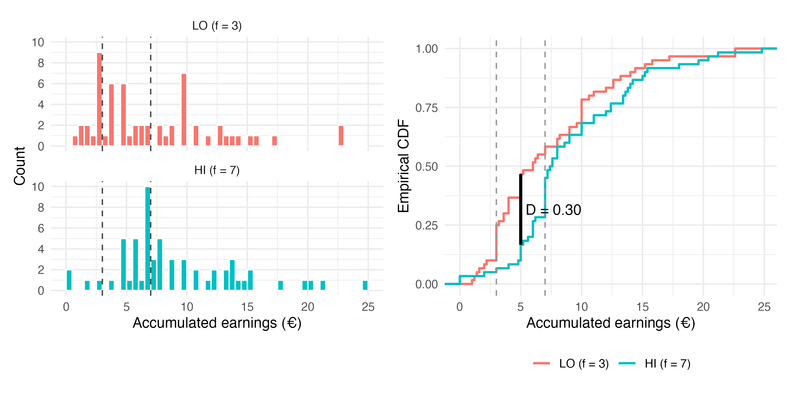
The empirical CDF of HI lies below that of LO over almost the entire support, so HI subjects earn more throughout the distribution. The largest vertical distance between the two CDFs (\(D = 0.30\)) lies at €5, between the two reference points. At that value, the LO spike at €3 has already entered the LO CDF, whereas the HI spike at €7 has not yet entered the HI CDF.
The authors’ OLS regression, which provides their headline evidence for RH1, uses one observation per subject and all 120 subjects of the two main treatments, so it respects the independent unit. With a single binary regressor, it is identical to a two-sample \(t\)-test of the null hypothesis that mean accumulated earnings are equal in HI and LO. The variances are almost identical across groups: the Breusch–Pagan test gives \(p = 0.99\), so the authors’ decision not to correct for heteroskedasticity is justified. The controls are not needed for a valid comparison under random assignment and, as the replication below shows, barely change the treatment coefficient. The issue is therefore not the unit, the variances or the controls, but the shape of the distribution, which conflicts with the normality assumption behind the \(t\)-distribution of the OLS coefficient. With 60 observations per group, the central limit theorem may still protect the size of the \(t\)-test on the OLS coefficient. Whether it does, and how much power is lost relative to rank-based procedures, is assessed by simulation below.
4.1.3 Test Choice and Justification
The diagnostics point to a comparison of two independent groups with a skewed, bounded and heavily tied outcome, in which the treatment changes the shape of the distribution rather than only shifting it. Following Table 3, this calls for the Wilcoxon rank-sum test and, because of the change in shape, the Kolmogorov–Smirnov test (Section 3.4.1). Both tests are already reported by the authors as supplementary evidence.
The Wilcoxon rank-sum test asks whether HI subjects tend to earn more than LO subjects. Because it uses only the order of the earnings, the long upper tail does not dominate it as it dominates the mean. Since the treatment changes the shape of the distribution, a rejection and the Hodges–Lehmann estimate are read in this sense, not as a shift of the whole distribution.
The Kolmogorov–Smirnov test fits the theory especially well. Reference dependence predicts a reallocation of mass between €3 and €7 rather than a uniform shift, and the largest distance between the two distribution functions lies exactly between the two reference points.
Both tests are therefore well suited to RH1, and the analysis below compares them with the authors’ OLS regression.
4.1.4 Results
Table 4 reports the treatment coefficient for the main outcome, accumulated earnings, from columns 1–3 of the authors’ Table 1. The HI effect is positive and significant at the 5% level in all three specifications, at about €1.85–1.97. The p-values lie between 0.030 and 0.046. Practice-stage productivity strongly predicts earnings (\(p \approx 0.002\)). None of the other controls is significant, and adding them barely moves the treatment coefficient, as random assignment would lead one to expect.
| Outcome | Model | Estimate | SE | \(p\)-value |
|---|---|---|---|---|
| Accumulated earnings | OLS (1) | 1.850 | 0.917 | 0.046 |
| OLS (2) | 1.942 | 0.885 | 0.030 | |
| OLS (3) | 1.973 | 0.900 | 0.030 |
Notes: \(n = 120\). Accumulated earnings in euro. (1) treatment dummy only; (2) adds practice-stage productivity; (3) additionally controls for gender, room temperature and time of day.
Table 5 compares the authors’ three tests on the main outcome. Both rank-based tests are clearly more significant than the regression: OLS yields \(p = 0.046\), the Wilcoxon test \(p = 0.015\) and the KS test \(p = 0.006\). The authors report the same Wilcoxon p-value and a KS p-value of 0.005; the small difference in the KS p-value stems from Stata and R computing it differently.
The authors report the OLS coefficient, i.e. the difference in means of €1.85, as the effect size. A natural alternative that matches the Wilcoxon test is the Hodges–Lehmann (HL) estimator. It equals the coefficient of a rank-based Theil–Sen regression on the treatment dummy, because with a binary regressor the only defined pairwise slopes are exactly these between-group differences. Here, the HL estimate is €2.00 (95% CI \([0.60, 3.60]\)), compared with a mean difference of €1.85 (95% CI \([0.03, 3.67]\)).
| Test | \(H_0\) | Effect size | \(p\)-value |
|---|---|---|---|
| OLS / \(t\)-test | \(\mu_{HI} = \mu_{LO}\) | \(\hat\beta_{OLS} = 1.85\) | 0.046 |
| Wilcoxon rank-sum | \(P(X_{HI} > X_{LO}) + \tfrac{1}{2}P(X_{HI} = X_{LO}) = \tfrac{1}{2}\) | \(\hat\Delta_{HL} = 2.00\) | 0.015 |
| Kolmogorov–Smirnov | \(F_{HI} = F_{LO}\) | 0.006 |
Notes: \(n_{HI} = n_{LO} = 60\). Wilcoxon: normal approximation with continuity correction. KS: exact p-value conditional on ties. \(\hat\Delta_{HL}\): Hodges–Lehmann estimator.
The difference in p-values follows from the outcome distribution. Earnings have a floor at zero in the data and no fixed upper limit. The distribution is therefore right-skewed, with a few subjects earning far more than the rest (up to €25). These large values inflate the variance and thus the standard error of the OLS coefficient, which lowers the \(t\)-statistic. Rank-based tests only use the order of the observations: whether the top earner makes €15 or €25 does not change the ranks, so the upper tail has far less influence on the Wilcoxon and KS tests. The KS test gains additional power from the spikes at the reference points. As Figure 1 shows, the treatment mainly moves subjects from €3 towards €7, and the KS statistic measures exactly this gap between the two distributions.
Under the pooled null hypothesis, OLS (5.2%) and Wilcoxon (4.8%) both hold their nominal level (Table 6). Non-normality therefore does not invalidate the \(t\)-test at \(n = 60\) per group. The KS test is conservative (3.6%): with more than half of the observations tied, its exact null distribution takes only few values, so its actual size lies below the nominal level.
| Size | Power at | |
|---|---|---|
| Test | (pooled \(H_0\)) | observed effect |
| OLS | 0.052 | 0.53 |
| Wilcoxon | 0.048 | 0.69 |
| KS | 0.036 | 0.89 |
Notes: \(\alpha = 0.05\), \(n_{HI} = n_{LO} = 60\), \(B = 5{,}000\) replications each. Size: both groups resampled from the pooled sample. Power: HI and LO resampled separately, treating the observed effect as the true effect (Section 3.5).
At the observed effect, OLS rejects in 53% of the replications, the Wilcoxon test in 69% and the KS test in 89%.
Because the two groups differ in shape, a null for one location measure is not a null for the others. Centring on the mean difference equalises the means but leaves a realised HL shift of about €0.27, and vice versa, and neither centring yields the KS null \(F_{HI} = F_{LO}\). Under mean centring at \(s = 0\), OLS rejects in 5.3% of the replications, the Wilcoxon test in 9.6% and the KS test in 36%; under HL centring, OLS and Wilcoxon are close to 5% (5.0% and 5.3%), while KS still rejects in 15%. This remaining 15% is the part of the treatment effect that is a change in shape rather than location, and the KS test correctly detects it.
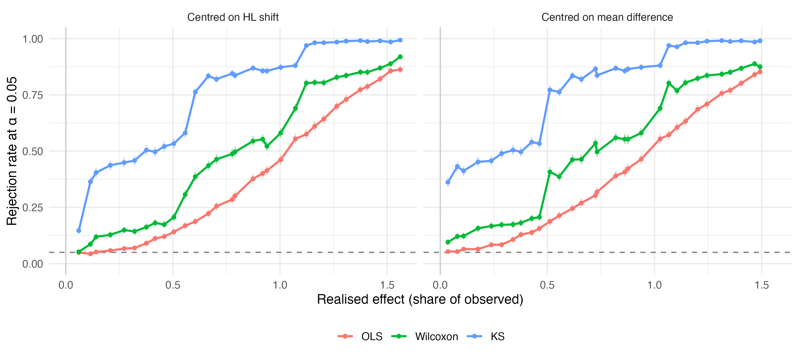
Along the whole power curve, the ordering is the same in both DGPs (Figure 2): KS \(>\) Wilcoxon \(>\) OLS. The curves of the rank tests rise in steps because earnings lie on a €0.20 grid with spikes at round amounts. A shift by an amount off this grid separates values that were tied: if a HI subject who earned exactly €7.00 is shifted by €0.13 to €6.87, they now rank below every LO subject with €7.00 instead of sharing their rank. Such changes in the ranks are much larger than the shift itself, so the rejection rate of the rank tests jumps whenever a shift crosses a spike (Section 3.5).
Table 7 and Figure 3 show the required sample sizes. At the published \(N = 120\), only the KS test exceeds 80% power. If the true effect equalled the observed one, the Wilcoxon test would have needed about 160 subjects and OLS about 230, almost twice the actual sample. OLS would thus need about 1.4 times as many subjects as the Wilcoxon test.
| Test | \(N\) for 80% power | \(N\) for 90% power | Published \(N\) |
|---|---|---|---|
| OLS | 230 | 304 | 120 |
| Wilcoxon | 160 | 216 | 120 |
| KS | 97 | 131 | 120 |
Notes: \(\alpha = 0.05\). Power was simulated on a grid of scaling factors \(\lambda \in \{0.2, 0.4, 0.6, 0.8, 1, 1.2, 1.5, 2, 2.5, 3\}\) (i.e. \(N(\lambda)\) between 24 and 360) with \(B = 2{,}000\) replications per grid point (Section 3.5). The required \(N\) was then obtained by linear interpolation between the two neighbouring grid points of the simulated power curve and rounded to the nearest integer; it is not a simulated grid point itself. The observed effect is treated as the true effect, so the values are lower bounds (see text).
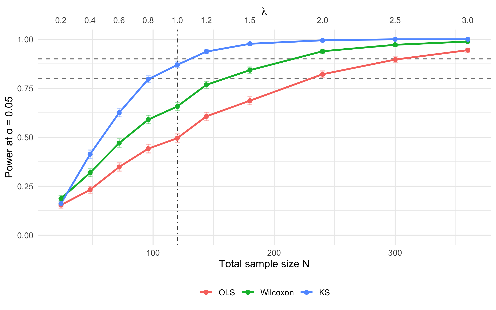
4.1.5 Interpretation
The original conclusion is robust. Every parametric and nonparametric procedure agrees that a higher fixed payment increases effort, and the result does not hinge on the OLS specification. The comparison nevertheless yields three insights about test choice.
The OLS \(t\)-test is valid but inefficient. Its size is correct despite clearly non-normal data, but with a floor at zero, heavy ties and spikes at the reference points, the mean is a noisy summary. The authors’ headline test is therefore the least powerful of the three tests they report.
A rank-based analysis would have been a natural primary analysis. The Wilcoxon test with the HL estimate gives a valid test together with a matching effect size. A difference in means is easier to communicate, but choosing it as the main specification leaves the stronger evidence in a supplementary role.
The KS test is the test most consistent with the theory. Reference dependence predicts that mass moves from €3 towards €7 rather than a uniform shift, and the KS test is the only test adequately powered at \(N = 120\). Because it has no effect size, it should be reported together with the HL estimate and a plot of the two distributions.
Overall, the case shows that rank-based tests are not only applicable here but better suited than the authors’ main test. The authors’ regression is valid, but the outcome distribution and the prediction of the theory, a reallocation of mass between the reference points rather than a uniform shift, both favour tests that use the order or the whole distribution of earnings instead of their mean.
4.2 Case 2: Andersen et al. (2011)
4.2.1 Original Study and Research Hypotheses
Andersen et al. (2011) study whether stakes matter in the ultimatum game. A proposer suggests how to split a pie, and a responder either accepts, in which case the split is implemented, or rejects, in which case both receive nothing. A purely money-maximising responder should accept every positive offer. In practice, low offers are frequently rejected, which is usually attributed to perceived fairness. Earlier studies found that rejection behaviour barely changes as the stakes rise. The authors argue that this is mainly because those studies observed almost no low offers at high stakes.
To overcome this, the authors ran the experiment in Northeast India with pies of Rs 20, 200, 2,000 and 20,000. Since 100 rupees correspond to roughly one day’s wage there, the stakes range from about 1.6 to 1,600 hours of work. To elicit low offers, the proposers’ instructions contained an additional paragraph explaining that a money-maximising responder accepts any positive offer. A second factor, wealth, randomly determined whether a subject had already earned money in unrelated tasks before the game.
The paper reports two main results, which this case study covers as two hypotheses:
RH1: The share of the pie offered decreases as the stakes increase.
RH2: Rejection rates decrease as the stakes increase.
For RH1, the outcome is the offered share. The authors compare the stake levels with pairwise two-sample \(t\)-tests and find that offer shares fall while the absolute amounts offered rise. RH2 is the headline result, with the binary decision to reject as outcome. The authors support it with (a) Fisher’s exact tests of rejection against stakes, separately for the wealth and no-wealth groups, (b) pairwise two-sample \(z\)-tests of proportions between stake levels, and (c) a logit regression of rejection on wealth, stake dummies and the offered share.
4.2.2 Data Diagnostics and Fit of the Original Analysis: Offers (RH1)
The game was played once, and every proposer makes a single offer, so the 458 proposers are independent units. The design has four stake levels with a natural order, crossed with the randomised wealth factor, and the groups are strongly unbalanced: 201 offers at Rs 20, but only 24 at Rs 20,000. RH1 predicts a direction, namely decreasing offer shares.
Offer shares are bounded between 0 and 1, right-skewed and concentrated on a few focal points (Figure 4). Offers of 25%, 10% and 5% of the pie account for 69% of all offers, and only 22 distinct values occur. Mean offers fall from 24.2% at Rs 20 to 17.4%, 14.4% and 12.1% at the higher stakes, and the medians fall from 25% to 15%, 10% and 7.5%. The empirical CDFs are ordered as predicted, with higher stakes further to the left. The curves for Rs 2,000 and Rs 20,000 lie close together and cross. Above 25%, the Rs 20 curve stays lowest because generous offers of 50% or more are most frequent there.
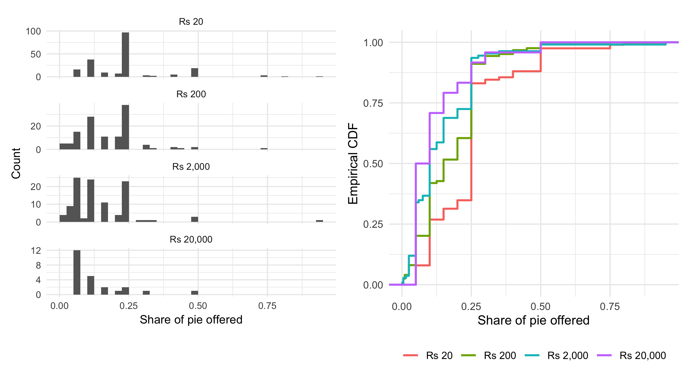
The residuals of offer share on stakes are strongly non-normal (Shapiro–Wilk \(p < 0.001\)), with a step pattern caused by the focal points and a long right tail of generous offers (up to 95%). The spread, by contrast, hardly differs between the stake groups: the robust Fligner–Killeen test finds no evidence of unequal variances (\(p = 0.63\)).
The authors compare the stake levels with pooled-variance two-sample \(t\)-tests. Each of them tests the null hypothesis that the mean offer share is equal at two stake levels and assumes normally distributed offers with equal variances within each group. Each test uses one offer per proposer, so it respects the independent unit. Normality is clearly violated, whereas equal variances are not a concern. With 109–201 observations, the central limit theorem protects the \(t\)-test for most comparisons, but every comparison with Rs 20,000 rests on only 24 offers. Finally, the authors test RH1 with several pairwise comparisons: they report p-values for three pairs and describe a fourth, Rs 2,000 against Rs 20,000, as insignificant. Each comparison is judged at the 5% level without a correction for multiple testing; a Bonferroni correction over these four comparisons would require \(p < 0.0125\) for each. A hypothesis about the order of all four stake levels can instead be tested with a single test of the ordered alternative, which avoids the multiplicity problem.
4.2.3 Test Choice and Justification: Offers (RH1)
The diagnostics show independent offers in four ordered groups, with a bounded, skewed and heavily tied outcome. Following Table 3, this calls for rank tests for two groups and for ordered treatments. The direct counterpart to the authors’ pairwise \(t\)-tests are pairwise Wilcoxon rank-sum tests with the Hodges–Lehmann shift as effect size (Section 3.4.1), which are insensitive to the long right tail of the offers. The pairwise comparisons follow the authors’ claim that offer shares decline “with the first and second tenfold increase in stakes” (Andersen et al., 2011, p. 3432) but not with the third. The substantive comparisons are therefore the three adjacent tenfold increases (Rs 20 vs 200, 200 vs 2,000 and 2,000 vs 20,000); Rs 20 vs 20,000 is added because the authors report it. In addition, the Jonckheere–Terpstra test tests RH1 as a whole, i.e. that offer shares decrease stochastically from Rs 20 to Rs 20,000, with a single test instead of several pairwise ones. Since the observed ordering of the offers is not violated, the Jonckheere test can use the full ordering information, and a Chacko–Shorack test is not needed.
4.2.4 Results: Offers (RH1)
The authors’ \(t\)-tests reproduce with one exception (Table 8). They match the paper for Rs 20 vs 200 (\(p < 0.001\)) and Rs 20 vs 20,000 (\(p = 0.0002\)), and the third increase is insignificant, as the authors state. The paper also reports \(p = 0.000\) for “Rs 200 versus Rs 2,000” (Andersen et al., 2011, p. 3432), but that comparison yields \(p = 0.063\); the reported value matches Rs 20 vs 2,000 (\(p < 0.001\)) and is most likely a typo. This matters for the authors’ conclusion that offer shares decline significantly “with the first and second tenfold increase in stakes” (Andersen et al., 2011, p. 3432): with their own test, the second tenfold increase (Rs 200 \(\to\) 2,000) is not significant at the 5% level. There is no wealth effect at any stake level (all \(p > 0.5\)).
| Effect size | \(p\)-value | |||
|---|---|---|---|---|
| Comparison | \(\Delta\) mean | HL | \(t\)-test | Wilcoxon |
| Adjacent tenfold increases | ||||
| Rs 20 vs 200 | 0.068 | 0.050 | \(<0.001\) | \(<0.001\) |
| Rs 200 vs 2,000 | 0.030 | 0.035 | 0.063 | 0.010 |
| Rs 2,000 vs 20,000 | 0.023 | 0.000 | 0.420 | 0.378 |
| Further comparison reported by the authors | ||||
| Rs 20 vs 20,000 | 0.122 | 0.150 | \(<0.001\) | \(<0.001\) |
Notes: Effect sizes in shares of the pie (lower stake minus higher stake). \(t\)-test: pooled variance (Stata ttest), as in the paper. Wilcoxon: normal approximation with continuity correction; HL: Hodges–Lehmann shift.
The pairwise Wilcoxon tests for the three adjacent tenfold increases and for Rs 20 vs 20,000 agree with the \(t\)-tests on the clear cases: the first tenfold increase and Rs 20 vs 20,000 are highly significant, and the third tenfold increase is not. They differ for the second tenfold increase. For Rs 200 vs 2,000, the Wilcoxon test is significant (\(p = 0.010\)), whereas the \(t\)-test is not (\(p = 0.063\)). The rank-based analysis therefore supports the authors’ claim about the second tenfold increase, which their own \(t\)-test does not. The Jonckheere–Terpstra test confirms RH1 for the whole design with a single test (permutation \(p < 0.0001\), \(B = 20{,}000\)).
The simulation compares the authors’ pairwise \(t\)-test and the Wilcoxon test for Rs 200 vs Rs 2,000, the comparison in which the two disagree, and the Jonckheere–Terpstra test for RH1 as a whole. As described for several ordered groups in Section 3.5, every stake group is shifted relative to the overall mean of all offers, and the shares are capped to \([0, 1]\). A centring on the Hodges–Lehmann shift, as in Case 1, is not possible here: because most offers lie on the same focal points, the HL shift between a stake group and the pooled offers is exactly zero for Rs 20 and Rs 200, so these groups would not be shifted at all.
All three tests hold their nominal level under the pooled null (Table 9).
| Test | Size (pooled \(H_0\)) |
|---|---|
| \(t\)-test (Rs 200 vs 2,000) | 0.045 |
| Wilcoxon (Rs 200 vs 2,000) | 0.049 |
| Jonckheere–Terpstra (all) | 0.055 |
Notes: \(\alpha = 0.05\), original group sizes, \(B = 5{,}000\) replications. All groups resampled from the pooled offers.
At the observed effect, the Wilcoxon test detects the difference between Rs 200 and Rs 2,000 in 74% of the replications, the \(t\)-test only in 47%. The Jonckheere test, which uses all four groups and the ordering, detects RH1 in every replication.
Figure 5 shows the rejection rates as a function of the effect strength \(s\). The \(t\)-test reacts smoothly, but the rank tests do not. The Wilcoxon test stays at about 9% for all \(s\) between 0.1 and 0.9, jumps to 74% at \(s = 1\) and to almost 100% at \(s = 1.1\); the Jonckheere test shows similar jumps. As explained in Section 3.5, the shift breaks the ties at the focal offers of 10% and 25%, so the curves of the rank tests move in steps (Appendix A.3). The power at the observed effect and the sample-size simulation, which resample the observed offers without shifting them, are therefore used for the comparison.
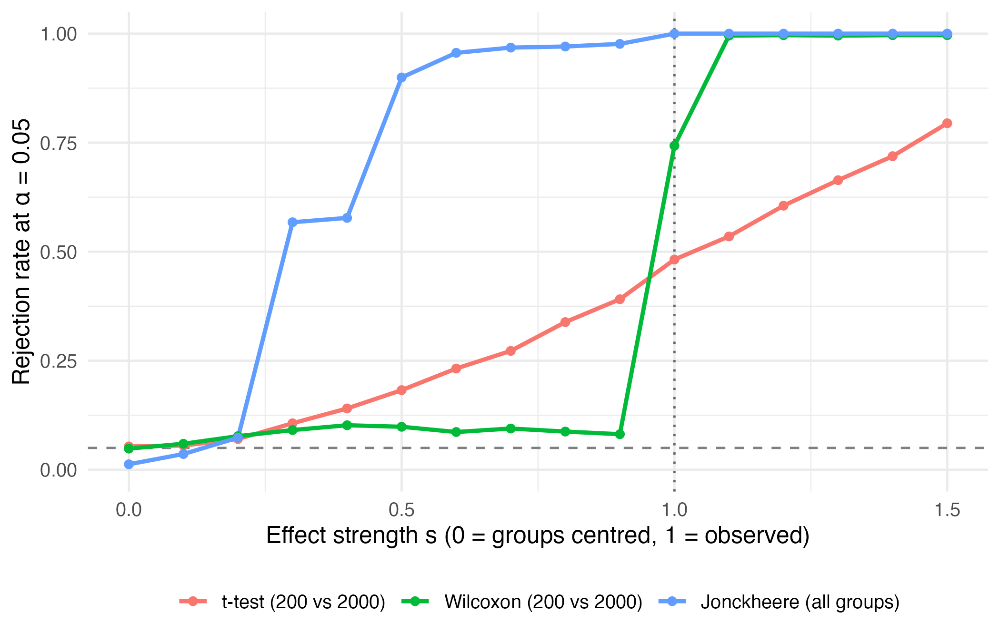
Figure 6 and Table 10 show how many offers each test would need to detect the observed effect reliably. For the comparison of Rs 200 and Rs 2,000, the Wilcoxon test reaches 80% power with about 270 offers in the two groups, the \(t\)-test only with about 540. The \(t\)-test would thus have required twice as many observations as the Wilcoxon test and more than twice the 233 actually observed. The Jonckheere test reaches 80% power with about 45 offers in total, a tenth of the published sample, because it combines the information of all four groups instead of testing one pair at a time.
| 80% power | 90% power | |||
|---|---|---|---|---|
| Test | Pair | Total | Pair | Total |
| \(t\)-test (Rs 200 vs 2,000) | 537 | 1,056 | 711 | 1,397 |
| Wilcoxon (Rs 200 vs 2,000) | 271 | 532 | 378 | 742 |
| Jonckheere–Terpstra (all) | 23 | 45 | 31 | 62 |
| Published design | 233 | 458 | 233 | 458 |
Notes: \(\alpha = 0.05\). Pair: offers in Rs 200 and Rs 2,000; Total: offers in all four groups. All groups are scaled by a common factor \(\lambda\); power was simulated for \(\lambda \in \{0.05, 0.1, 0.15, 0.25, 0.5, 0.75, 1, 1.25, 1.5, 2, 2.5, 3, 4\}\) with \(B = 2{,}000\) per grid point, and the required \(n\) was obtained by linear interpolation between the two neighbouring grid points. The observed effect is treated as the true effect, so the values are lower bounds.
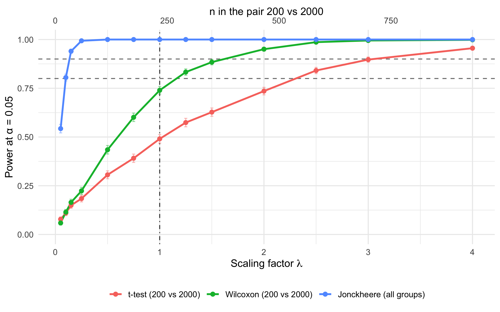
4.2.5 Data Diagnostics and Fit of the Original Analysis: Responses (RH2)
As for RH1, every responder decides once about a single offer, so the 458 responders are independent units in four ordered stake groups, crossed with the randomised wealth factor, and RH2 predicts a direction. Table 11 reproduces the rejection rates of the paper. The cells are unbalanced and partly very small: the Rs 20 cell contains 201 responders, the Rs 20,000 cell only 24, with a single rejection, and within the wealth split the top cells contain 12 responders each. The composition of the groups also differs: 86% of the Rs 20 responders are in the wealth condition, compared with 50% at Rs 20,000, so pooled comparisons partly compare different wealth mixes.
| Rs 20 | Rs 200 | Rs 2,000 | Rs 20,000 | |
|---|---|---|---|---|
| No wealth | 46.4% (13/28) | 36.0% (18/50) | 19.6% (9/46) | 0.0% (0/12) |
| Wealth | 34.7% (60/173) | 47.3% (35/74) | 33.3% (21/63) | 8.3% (1/12) |
| All | 36.3% (73/201) | 42.7% (53/124) | 27.5% (30/109) | 4.2% (1/24) |
Notes: Rejection rate (rejections / responders) per cell. Reproduces Tables 1 and 2 of Andersen et al. (2011).
The outcome is binary, so every rank-based procedure operates with massive ties: all 157 rejections share one mid-rank and all 301 acceptances another. The data is thus exactly a \(2 \times 4\) contingency table, and every rank test must use the tie-corrected variance. The rejection rates do not follow the predicted order throughout. In the pooled data, the rejection rate rises from 36.3% at Rs 20 to 42.7% at Rs 200 before it falls to 27.5% and 4.2%. The inversion stems entirely from the wealth group (34.7% \(\to\) 47.3%); in the no-wealth group, rejection falls monotonically from 46.4% to 0% (Figure 7, left). Because the inversion occurs only in the wealth group, which dominates the low-stakes cells, the tests are reported by wealth group as well as pooled, as the authors do.
The offer is a covariate that differs between the stake groups. The median offer drops from 25% of the pie at Rs 20 to 7.5% at Rs 20,000 (Figure 7, right). Since low offers are rejected more often, unconditional rejection rates mix the stakes effect with an offer effect that works in the opposite direction. The unconditional comparison is therefore, if anything, conservative.
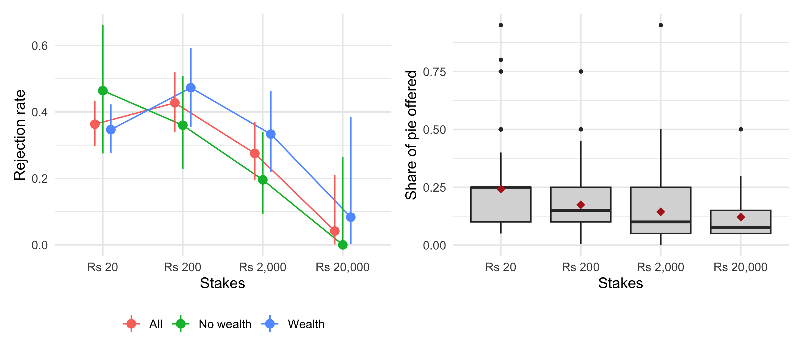
The authors use three procedures, each of which fits only part of these features. All three use one decision per responder and therefore respect the independent unit. Fisher’s exact test on the \(2 \times 4\) table tests the null hypothesis that the rejection rate is the same at all four stake levels. It is exact and therefore valid even in the small cells. It is, however, an omnibus test: its alternative is any difference between the rejection rates, so it would reject just as strongly if rejection rose with the stakes, whereas RH2 predicts a direction. The pairwise \(z\)-tests of proportions test the null hypothesis that the rejection rates at two stake levels are equal. They use the direction, but they split the ordered hypothesis into several separate comparisons, each judged at the 5% level, and each of them uses only two of the four groups.
The logit regression of rejection on wealth, the stake dummies and the offered share tests, for each stake dummy, the null hypothesis that responders at this stake level reject as often as at Rs 20, given their wealth and the offer they received. It is the only procedure that addresses the falling offers, since it compares responders with the same offer. It assumes, however, that the log-odds of rejection are linear in the offer share, so that every additional percentage point of the offer lowers them by the same amount, whether the offer rises from 5% to 6% or from 30% to 31%. If responders instead react with a threshold, for example rejecting most offers below 10% and hardly any above 20%, the logit removes the effect of the offer only partly, and the remainder is attributed to the stakes, which come with lower offers. The logit also tests the stake levels through separate dummies rather than as an ordering. Both the \(z\)-tests and the logit rely on asymptotic approximations. This matters for the Rs 20,000 cell, which contains 24 responders and a single rejection (12 responders per wealth group), so that the coefficient of this cell is estimated from almost no variation.
4.2.6 Test Choice and Justification: Responses (RH2)
Following Table 3, the diagnostics call for tests of the ordered alternative that tolerate a violated order, with exact or tie-corrected inference, and for a stratification by the offer. Pairwise Wilcoxon tests are not repeated, because for a binary outcome they coincide with the authors’ \(z\)-tests. What matters for RH2 is the structure of the hypothesis as a whole: four independent groups and an alternative that predicts a direction. Tests for ordered alternatives fit this structure better than Fisher’s omnibus test, which would reject just as readily if rejection rose with the stakes (Section 3.4.2).
The two ordered tests differ in how they handle the inversion between Rs 20 and Rs 200. For the Jonckheere–Terpstra test, it counts as evidence against the alternative, all the more since Rs 20 and Rs 200 are the two largest groups. The Chacko–Shorack test merges the two groups and treats the inversion as no effect, but with a pronounced inversion, merging discards exactly the difference that Fisher’s test exploits. For a directional hypothesis with an observed inversion, the Chacko–Shorack test is therefore the natural choice, and the Jonckheere test shows what is lost if the inversion is ignored. Because of the small top cell, both ordered tests are evaluated with permutation p-values (20,000 random permutations) in addition to their asymptotic ones.
To condition on the offer, as the authors’ logit does, both ordered tests are also stratified by the offer bands of Figure 4 of the paper (\(\leq 10\%\), 10–20%, 20–30%, \(> 30\%\)), with the stakes permuted within bands (Section 3.4.3). These tests ask the same question as the logit, whether responders reject less often at higher stakes when they receive comparable offers, but without assuming how the offer share affects the rejection probability.
4.2.7 Results: Responses (RH2)
The authors’ results reproduce exactly. Fisher’s exact test rejects equal rejection rates across stakes in the no-wealth group (\(p = 0.005\)) and in the wealth group (\(p = 0.038\)). The pairwise \(z\)-tests match the paper as well: Rs 20 vs 200 (\(p = 0.25\)) and Rs 20 vs 2,000 (\(p = 0.12\)) are not significant, while all comparisons with Rs 20,000 and Rs 200 vs 2,000 are.
Table 12 compares the Jonckheere–Terpstra and Chacko–Shorack tests with the authors’ Fisher test, pooled and by wealth group. Asymptotic and permutation p-values agree closely throughout, so the small cells do not distort the conclusions once the Jonckheere variance is corrected for ties. Without this correction, the normal approximation in the commonly used R implementation DescTools::JonckheereTerpstraTest, which ignores ties, is strongly conservative: in the no-wealth group it yields \(p = 0.004\) instead of \(p = 0.0003\).
| Test | Alternative | Pooled | No wealth | Wealth |
|---|---|---|---|---|
| Fisher’s exact (paper) | any difference | 0.0004 | 0.0046 | 0.0381 |
| Jonckheere–Terpstra | decreasing | 0.0134 | 0.0006 | 0.4298 |
| Chacko–Shorack | decreasing | 0.0002 | 0.0012 | 0.0382 |
| \(n\) | 458 | 136 | 322 |
Notes: Permutation p-values with \(B = 20{,}000\) for the rank tests. Asymptotic p-values (Jonckheere–Terpstra: normal with tie-corrected variance; Chacko–Shorack: chi-bar-squared) are pooled 0.0121 and 0.0003, no wealth 0.0003 and 0.0014, wealth 0.4280 and 0.0485.
The pooled data shows how strongly the inversion affects the ordered tests. The Jonckheere test is the weakest of the three (\(p = 0.013\)), more than thirty times weaker than the omnibus Fisher test (\(p = 0.0004\)), although it is designed for exactly this directional hypothesis. The pairs between Rs 20 and Rs 200 make up the largest share of all between-group comparisons (\(201 \times 124\) pairs), and in these pairs rejection goes the “wrong” way. The Chacko–Shorack test merges the two groups (mean ranks 234.2 and 248.9 become 239.8) and yields the smallest p-value (\(p = 0.0002\)), slightly below the authors’ pooled Fisher test.
In the no-wealth group, rejection falls monotonically. No groups are merged, so the Chacko–Shorack statistic equals the ordinary Kruskal–Wallis statistic, but it is compared with the chi-bar-squared distribution, which accounts for testing only one direction. Here the ordering is fully informative. The Jonckheere test (\(p = 0.0006\)) and the Chacko–Shorack test (\(p = 0.0012\)) give p-values roughly eight and four times smaller than Fisher’s exact test (\(p = 0.0046\)).
In the wealth group, the inversion is pronounced, and the Jonckheere test breaks down completely (\(p = 0.43\)). The Chacko–Shorack test merges the two low-stakes groups and still rejects at the 5% level (\(p = 0.038\)). However, it does not gain over Fisher’s test (\(p = 0.038\)): once the two lowest groups are merged, little ordering information remains that an omnibus test does not also use.
The simulation compares Fisher’s test with the two ordered tests. As described for binary outcomes in Section 3.5, the rejection rate of each stake group is shifted relative to the overall rejection rate \(\bar p = 0.343\). A separate Hodges–Lehmann variant is not needed, because for a 0/1 outcome the HL shift is degenerate and centring on the overall mean rank is identical to centring on the overall rate. To vary the shape of the effect, three patterns are simulated, each with its own group sizes: the pooled data (moderate inversion), the no-wealth group (monotone) and the wealth group (pronounced inversion).
All three tests hold their nominal level in all three scenarios, with empirical sizes between 4.2% and 5.1% (Table 13).
| Test | Pooled | No wealth | Wealth |
|---|---|---|---|
| Fisher’s exact (paper) | 0.045 | 0.050 | 0.049 |
| Jonckheere–Terpstra | 0.050 | 0.047 | 0.051 |
| Chacko–Shorack | 0.048 | 0.042 | 0.048 |
Notes: \(\alpha = 0.05\), original group sizes, \(B = 5{,}000\) replications. All stake groups at the overall rejection rate of the scenario (\(s = 0\)). Jonckheere–Terpstra: normal approximation with tie-corrected variance; Chacko–Shorack: chi-bar-squared.
Which test is most powerful depends on the shape of the effect (Table 14, Figure 8). If the effect is monotone (no wealth), both ordered tests are clearly more powerful than Fisher’s test over the whole range of effect strengths. With a moderate inversion (pooled), the Jonckheere test loses much of its power and falls behind Fisher’s test, whereas the Chacko–Shorack test remains the most powerful test. With a pronounced inversion (wealth), the Jonckheere test has no power at all, its rejection rate stays at about 5% for every effect strength. The Chacko–Shorack test still works but is slightly less powerful than Fisher’s test, because after the two low-stakes groups are merged little ordering information remains.
| Test | Pooled | No wealth | Wealth |
|---|---|---|---|
| Fisher’s exact (paper) | 0.99 | 0.94 | 0.72 |
| Jonckheere–Terpstra | 0.74 | 0.98 | 0.06 |
| Chacko–Shorack | 1.00 | 0.99 | 0.63 |
| Shape of the effect | moderate inversion | monotone | pronounced inversion |
Notes: \(\alpha = 0.05\), original group sizes, \(B = 5{,}000\) replications. Jonckheere–Terpstra: normal approximation with tie-corrected variance; Chacko–Shorack: chi-bar-squared. The observed rates are treated as the true rates.
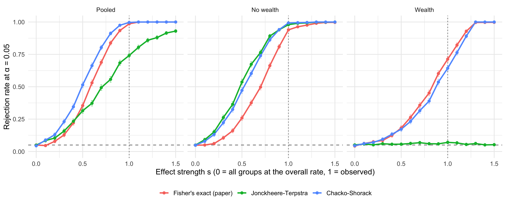
Table 15 translates these differences into sample sizes. With a monotone effect, the Jonckheere test reaches 80% power with about 66 responders and the Chacko–Shorack test with about 79, while Fisher’s test needs about 110. With the moderate inversion of the pooled data, the Chacko–Shorack test needs about 208 responders, Fisher’s test about 252 and the Jonckheere test more than twice as many (524). With the pronounced inversion of the wealth group, the Jonckheere test does not reach 80% power at any sample size, and Fisher’s test (377) needs slightly fewer responders than the Chacko–Shorack test (433).
| Test | Pooled | No wealth | Wealth |
|---|---|---|---|
| Fisher’s exact (paper) | 252 (321) | 110 (129) | 377 (481) |
| Jonckheere–Terpstra | 524 (703) | 66 (91) | — |
| Chacko–Shorack | 208 (247) | 79 (96) | 433 (576) |
| Published design | 458 | 136 | 322 |
Notes: Total number of responders needed for 80% (90%) power at \(\alpha = 0.05\). All group sizes are scaled by a common factor \(\lambda \in \{0.25, 0.5, 0.75, 1, 1.25, 1.5, 2, 2.5, 3, 4\}\) with \(B = 2{,}000\) replications per grid point; the required \(N\) is obtained by linear interpolation between the two neighbouring grid points. —: 80% power is not reached within the grid. The observed rates are treated as the true rates, so the values are lower bounds.
The logit regression of the authors reproduces Table 3 of the paper exactly (Table 16). Controlling for wealth and the offered share, the Rs 2,000 and Rs 20,000 dummies are significantly negative, the Rs 200 dummy is not. To obtain a single test of RH2 that is comparable to the rank tests, the three stake dummies are tested jointly with a likelihood-ratio test.
| (a) Logit regression (Table 3 of the paper) | ||
|---|---|---|
| Coefficient (SE) | \(p\)-value | |
| Intercept | \(-0.077\) (0.321) | 0.810 |
| Wealth | \(\phantom{-}0.287\) (0.240) | 0.232 |
| Rs 200 | \(\phantom{-}0.152\) (0.250) | 0.543 |
| Rs 2,000 | \(-0.640\) (0.285) | 0.024 |
| Rs 20,000 | \(-2.874\) (1.042) | 0.006 |
| Proportion offered | \(-3.166\) (0.898) | \(<0.001\) |
| Joint LR test of the stake dummies (\(\chi^2_3 = 23.98\)) | \(<0.0001\) | |
| (b) Stratified rank tests (4 offer blocks) | ||
| Jonckheere–Terpstra | 0.0009 | |
| Chacko–Shorack (\(K = 18.99\)) | 0.0008 | |
Notes: \(n = 458\). (a) Baseline: Rs 20, no wealth. (b) Offer blocks \(\leq 10\%\), 10–20%, 20–30%, \(> 30\%\) of the pie; one-sided alternative that rejection decreases with stakes. Jonckheere–Terpstra: block statistics combined with weights \(c_k = 1/(N_k+1)\). Chacko–Shorack: sum of the block statistics, computed on the stake groups present in each block. p-values from 20,000 random permutations of the stakes within blocks; the asymptotic stratified Jonckheere–Terpstra test gives \(z = 3.07\), \(p = 0.0011\).
Conditioning on the offer strengthens the evidence considerably. The stratified Jonckheere test yields \(p \approx 0.001\), compared with \(p = 0.013\) for the unconditional Jonckheere test. The stratified Chacko–Shorack test yields \(p = 0.0008\), about as strong as the stratified Jonckheere test. This is because the falling offers at higher stakes partly mask the stakes effect in the pooled comparison. Within the offer blocks, rejection drops sharply from Rs 2,000 to Rs 20,000 in every band, although the Rs 20/Rs 200 inversion persists in the lowest band and in the 20–30% band. Because this inversion is confined to two small differences between the low stakes, while the large drop to Rs 20,000 dominates within every block, merging the inverted groups changes little, and the two stratified tests agree. The bands are not split further by wealth, as the cells would become too small, and they are taken from the paper rather than chosen from the data.
The logit model is stronger still (\(p < 0.0001\)). It uses the exact offer share instead of four coarse bands, but it also assumes that the log-odds of rejection are linear in the offer share. That both approaches reject clearly shows that the stakes effect is not an artefact of the logit specification.
4.2.8 Interpretation
The original conclusions of Andersen et al. (2011) are robust. Offer shares fall with the stakes, rejection rates fall with the stakes, and the stakes effect on rejection persists when responders are compared only with others who received similar offers. No parametric or nonparametric procedure contradicts these results. The comparison nevertheless yields four insights about test choice.
For the offers (RH1), the \(t\)-tests are valid but inefficient. The offers lie on a few focal points and have a long right tail, so the mean is a noisy summary. The Wilcoxon test supports the authors’ claim that offer shares decline with the second tenfold increase in stakes, which their own \(t\)-test does not. The Jonckheere test answers RH1 with a single test and needs only a fraction of the published sample.
With focal points, the power curves of the rank tests reflect the shift model. Shifting the stake groups breaks the ties between identical offers, so the rejection rates of the rank tests jump instead of rising with the size of the effect (Section 3.5).
For the responses (RH2), the binary outcome moves the question from the method to the structure. The Wilcoxon test coincides with the authors’ \(z\)-test, so what matters is whether a test respects the predicted direction and order. Fisher’s test does not. The Jonckheere test is the most powerful when the order holds and loses all power when it is violated. The Chacko–Shorack test is close to the best test in every pattern and is therefore the most robust choice, although not uniformly better.
Conditioning on the offer is essential for RH2. Because offers fall with the stakes, the unconditional comparison masks part of the stakes effect. Stratifying the rank tests by four offer bands strengthens the evidence considerably without assuming how the offer affects rejection. The bands, however, discard the variation of the offer within each band, so the logit with the exact offer share remains stronger. The agreement of both shows that the effect is not an artefact of the logit specification.
Overall, the case shows that the advantage of rank-based tests does not lie in replacing a parametric test one-to-one. It lies in choosing a test whose alternative matches the hypothesis: an ordered test for an ordered hypothesis, and a test that tolerates violations of the ordering where they are possible.
4.3 Case 3: Kessler & Roth (2012)
4.3.1 Original Study and Research Hypotheses
Kessler & Roth (2012) study whether giving registered organ donors priority on the waiting list increases donor registration. Subjects play a stylised organ-donation game in fixed groups of 12. Each subject starts every round with one “A unit” (the head) and two “B units” (the kidneys). In each period, the A unit fails with probability 10%, which means death, and each B unit fails with probability 20%. A subject whose B units have both failed has five periods to receive a B unit from a deceased donor; otherwise the subject dies. As long as a subject is alive, they earn $1 per period. At the beginning of every round, subjects decide whether to register as donors, which costs $0.40 or $0.80 (six low-cost and six high-cost subjects per group). Registered donors pass their remaining B units on to waiting subjects when they die.
Each group plays 15 rounds in one condition and 16 rounds in another. In the control condition, B units go to the subjects who have waited longest. Under the priority rule, registered donors are served first. The rebate condition pays donors a rebate that replicates the expected financial value of priority without changing the allocation, and the discount condition reduces the registration cost by $0.35. Every group plays the control condition in one of the two halves: it either starts in control and then switches to another condition or remains in control, or it starts in priority, discount or rebate and then switches to control.
The case study covers two main results of the paper. The first is the effect of the priority rule. The second is the ordering of the conditions in the first 15 rounds, before subjects have gained experience with the game, which the authors attribute to how directly subjects experience the incentive to register: under the priority rule, donors receive B units sooner when they need them; under the discount, they pay less in every round; under the rebate, the payment arrives only at the end of the experiment.
RH1: The priority rule increases the donor registration rate.
RH2: Without prior learning effects, the conditions are ordered according to how directly subjects experience the incentive to register: Priority \(>\) Discount \(>\) Rebate \(\geq\) Control.
The outcome is the binary decision to register as a donor, made by every subject at the beginning of each round. The authors test RH1 with linear probability models of the individual registration decisions on condition dummies, with standard errors clustered by subject. They test RH2 with a probit model of the registration decisions in the first 15 rounds and pairwise Wald tests that compare adjacent conditions (Priority vs Discount, Discount vs Rebate, Rebate vs Control).
4.3.2 Data Diagnostics and Fit of the Original Analysis: Priority Rule (RH1)
Registration decisions are made by individuals, but individuals are not independent observations. Each subject decides 31 times, and the 12 members of a group share one pool of B units, so the decision of one member affects the payoffs and experiences of the others. Groups never interact, which makes the group the smallest unit that is independent by design. The conditions are varied both between groups and, through the switch after round 15, within groups, so that time and order effects have to be separated from the treatment effect. For RH1, the priority rule is compared with control, both between groups and within the groups that switch. Within every group, six subjects face the low and six the high registration cost, so the cost level is balanced by design.
At the group level, the experiment consists of only 32 observations per half, and they are distributed very unevenly (Figure 9). In the first 15 rounds, 20 groups played control and 4 groups each played priority, discount and rebate. In the second half, 3 of the 20 control groups remained in control, while 8 switched to priority, 4 to discount and 5 to rebate; the 12 groups that started in a treatment condition all switched to control.
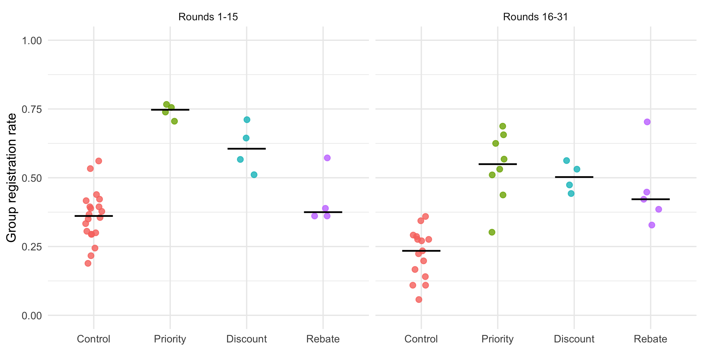
The outcome is the binary decision to register. Figure 10 reproduces Figure 1 of the paper. Registration under the priority rule is roughly twice as high as under control in both halves of the game, the discount and rebate conditions lie in between, and registration declines over the rounds. Aggregated to the group level, the outcome becomes a registration rate between 0 and 1 that averages 180 or 192 binary decisions, so that the group rates are practically continuous (Figure 9).
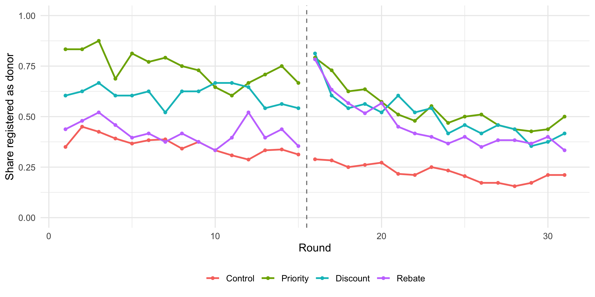
The authors’ linear probability model tests the null hypothesis that the registration probability is the same under the priority rule and under control, pooling all 31 rounds of the game. They cluster standard errors by subject. This accounts for the repeated decisions of a subject but treats the 384 subjects as independent. Clustering by group instead increases the standard error of the priority coefficient by half (from 0.029 to 0.044). In the data, the remaining variation between groups of the same condition is small: in an ANOVA of subject-level registration rates over the first 15 rounds, the group effect beyond the condition is not significant (\(p = 0.37\)). The subject-level analysis is therefore not grossly misleading, but its independence assumption is not guaranteed by the design. In addition, the authors’ main specification pools all 31 rounds and thereby mixes comparisons between and within groups with the decline of registration over time.
4.3.3 Test Choice and Justification: Priority Rule (RH1)
The diagnostics show that the group is the independent unit, that there are only few groups per condition, and that time and order effects overlap with the treatment. Following Table 3, the tests are therefore applied to one value per group, computed exactly, and designed to separate the treatment from time effects. A test that relies only on what the design guarantees uses one observation per group in each half of the game (rounds 1–15 and 16–31), because the conditions switch between the halves: the group’s registration rate in that half. Collapsing all decisions of a group into one value removes the dependence between rounds and between members of the same group from the data instead of assuming it away.
RH1 is tested at the group level with one registration rate per group in each half, using two complementary designs:
Difference-in-differences (Wilcoxon rank-sum test). For the 8 groups that switch from control to priority and the 3 groups that stay in control, the change in the registration rate from the first to the second half is computed, and the two sets of changes are compared with an exact rank-sum test. The always-control groups remove the time trend (learning, restart effects) that would otherwise be attributed to the priority rule.
Between groups in the first half (Wilcoxon rank-sum test). The first-half rates of the 4 priority groups are compared with those of the 20 control groups. This comparison is free of order effects, as all groups are still inexperienced.
In both designs, the effect size is the Hodges–Lehmann estimate with an exact confidence interval.
Compared with the authors’ regression, these designs neither treat the members of a group as independent nor mix the treatment effect with the decline of registration over time (Section 4.3.2).
4.3.4 Results: Priority Rule (RH1)
The authors’ results (Table 3 of the paper) reproduce exactly. The linear probability model over all rounds yields a priority coefficient of 0.306 (SE 0.029, clustered by subject; Table 3, column 1): registration is about 31 percentage points higher under the priority rule. With standard errors clustered by group, the coefficient remains highly significant (SE 0.044, \(p < 0.001\)).
With so few independent units, normal approximations are unreliable, and so are cluster-robust standard errors based on few clusters; exact or permutation distributions should be used. With few units, however, an exact rank test cannot produce arbitrarily small p-values. With 4 against 4 groups there are only \(\binom{8}{4} = 70\) possible rank configurations, so the smallest two-sided p-value is \(2/70 = 0.029\). With 8 against 3 groups it is \(2/\binom{11}{3} = 0.012\). This limit is a property of the design, not of the test: it shows how much independent information the experiment actually contains.
Table 17 shows that both group-level designs confirm RH1, and that they do so as clearly as the design allows. In the difference-in-differences comparison, each of the 8 switching groups increases its registration rate by more than any of the 3 always-control groups, which yields the smallest p-value attainable with 8 and 3 groups. In the first half, all 4 priority groups register more often than all 20 control groups. The difference-in-differences effect of 26 percentage points already accounts for the time trend: registration in the always-control groups tends to fall from the first to the second half. The first-half comparison yields a larger effect (38 points), consistent with the paper’s finding that the priority rule is most effective when it is in place from the start.
| Design | Groups | HL effect [95% CI] | \(p\) (exact) | Minimum \(p\) |
|---|---|---|---|---|
| Difference-in-differences | 8 vs 3 | 0.26 [0.11, 0.47] | 0.012 | 0.012 |
| First half, between groups | 4 vs 20 | 0.38 [0.32, 0.46] | 0.0002 | 0.0002 |
Notes: One registration rate per group in each half of the game (rounds 1–15 and 16–31). Difference-in-differences: change from rounds 1–15 to rounds 16–31 for groups switching from control to priority vs groups remaining in control, Wilcoxon rank-sum test. First half: Wilcoxon rank-sum test, priority vs control groups in rounds 1–15. HL: Hodges–Lehmann estimate, in shares of subjects. Minimum \(p\): smallest two-sided p-value attainable with the given numbers of groups.
The simulation for RH1 compares the authors’ pooled regression (Table 3, column 1, standard errors clustered by subject) with the two group-level Wilcoxon designs. To run the authors’ regression as in the paper, it stays at the subject level, but it always resamples whole groups, with all 12 subjects and both halves, and every simulated data set has the design of the experiment. All simulations for RH1 work with one registration rate per subject and half instead of the individual decisions, and the effect is shifted on these rates. This changes nothing for the authors’ regression: since the regressors are constant within a subject and half, the regression on the rates, weighted by the number of rounds, gives the same coefficients and subject-clustered standard errors as the regression on the individual decisions.
Under the pooled null hypothesis, every slot of the design is filled with a donor group drawn from all 32 groups, so the conditions are unrelated to the outcomes while the time pattern is preserved.
For the power, the observed priority effect is first isolated. With \(\hat m_{c,h}\) the mean group registration rate of condition \(c\) in half \(h\), it is \(\hat\theta_h = \hat m_{P,h} - \hat m_{C,h}\). Each simulated group then takes a donor group and shifts the rates of its subjects from the donor’s cell mean to the target: control groups stay at \(\hat m_{C,h}\), priority groups are moved to \(\hat m_{C,h} + s\,\hat\theta_h\), and discount and rebate groups keep their observed distance to control. Shifted subject rates are capped to \([0, 1]\). Donor groups are drawn in two ways. The standard bootstrap draws them only from groups with the same sequence of conditions, for example only from the 3 always-control groups. The pooled residual bootstrap of Section 3.5 draws them from all 32 groups. It uses the variation of all groups instead of only 3 or 4 values and assumes that groups scatter similarly around their condition mean in every condition, which is plausible for group rates (Figure 9).
Only the strength of the priority effect is varied; the time pattern of the data, in which registration falls from the first to the second half, is kept as observed. A time effect could be varied as well. It would affect the authors’ pooled regression, which compares priority observations from mostly the second half with control observations from mostly the first, but not the group-level designs: the difference-in-differences design removes it, and the first-half comparison does not involve the second half. This second dimension is not pursued here, as it would make the simulation considerably more complex, and the authors address the time effect themselves in Table 3, column 2, which adds a second-half dummy and in which the priority effect remains large.
Under the pooled null hypothesis, both group-level Wilcoxon designs hold their nominal level (Table 18). The difference-in-differences test is slightly conservative, because its smallest attainable p-value of 0.012 makes the null distribution coarse. The authors’ regression, by contrast, rejects a true null hypothesis in a third of the replications. Two things contribute. Its standard errors, clustered by subject, treat the 12 members of a group as independent observations, although whole groups differ from each other; under the pooled null hypothesis these differences are large, because the observed treatment effects become differences between groups. In addition, the pooled specification picks up the decline of registration over time, since the priority slots of the design lie mostly in the second half. If the groups are instead centred on their condition means before resampling, so that they differ only as much as groups of the same condition do in the data (the pooled residual bootstrap at \(s = 0\)), the regression still rejects in 17% of the replications, which is mainly due to the time pattern, while the rank tests remain at 3–4% (Table 18, right column). Neither a time control nor clustering by group solves this on its own (\(B = 2{,}000\)). With the second-half dummy and its interactions of column 2, the subject-clustered regression holds its level with centred groups (4.8%), but still rejects in 29% under the pooled null hypothesis. Clustered by group, column 1 rejects in about 7% in both settings, while column 2, whose priority coefficient rests on the four priority groups of the first half, rejects in 16% and 12%. With so few treated groups, cluster-robust standard errors are too small (Cameron et al., 2008; MacKinnon et al., 2023).
| Test | Pooled null | Centred groups |
|---|---|---|
| OLS, subject-clustered (paper) | 0.329 | 0.174 |
| Wilcoxon, difference-in-differences | 0.033 | 0.031 |
| Wilcoxon, first half | 0.044 | 0.043 |
Notes: \(\alpha = 0.05\), two-sided. Pooled null: all 32 slots of the design are filled with donor groups drawn from all 32 groups without any shift, so the conditions are unrelated to the outcomes (\(B = 5{,}000\)). Centred groups: pooled residual bootstrap at \(s = 0\), in which groups differ only as much as groups of the same condition in the data (\(B = 1{,}000\)).
Figure 11 shows the rejection rates against the realised effect; Figure 20 in the appendix shows them against the target effect as well. Capping works in opposite directions in the two bootstrap variants. In the standard bootstrap, priority groups have to be shifted down by up to 38 percentage points to remove the effect; many subjects hit the floor, and 12% of the observed effect remains even at \(s = 0\). In the pooled residual bootstrap, most donors are control groups that are shifted up; capping at 1 then reduces the effect, so that 87% of the observed effect is realised at \(s = 1\). The standard bootstrap, which resamples from only 3 always-control and 4 first-half priority groups, produces unstable curves, and its first-half test hardly ever rejects for small effects. The interpretation therefore relies on the pooled residual bootstrap. There, the first-half Wilcoxon test reaches 80% power at about 40% of the observed effect, and the difference-in-differences test at about 65%. The regression rejects more often for intermediate effects, but this advantage is not usable, since the same test rejects a true null hypothesis in a third of the replications. Its rejection rate even falls from 17% at \(s = 0\) to 5% at \(s = 0.1\): the decline over time pulls the pooled coefficient below zero, which a small true effect first offsets.
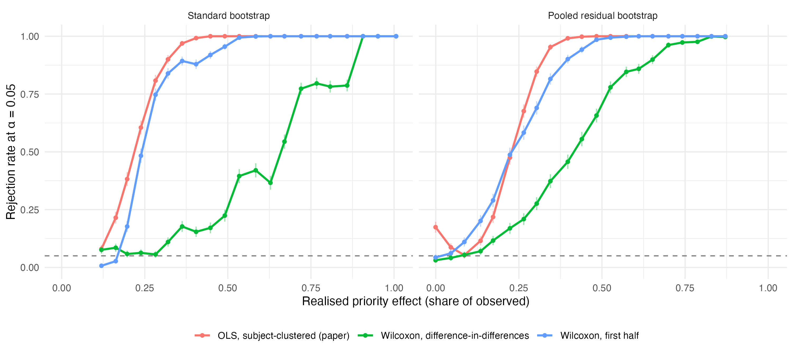
For the sample-size simulation, the number of groups has to be scaled, because the group is the smallest independent unit that can be resampled without breaking the dependence within groups. With only 3 to 8 groups per sequence of conditions, however, the design can only change in whole groups, and an exact rank test can only reject once its smallest attainable p-value falls below 5%. The power of the rank tests therefore jumps from 0 to almost 100% between neighbouring designs, and no required number of groups can be read off. The simulation is reported in Appendix A.4.
4.3.5 Data Diagnostics and Fit of the Original Analysis: Ordering of the Conditions (RH2)
RH2 uses only the first 15 rounds, in which every group plays one condition and no group has switched yet. The design therefore compares four independent sets of groups, 20 in control and 4 each in priority, discount and rebate, and RH2 predicts their order. The dependence structure is the same as for RH1: the group, not the subject, is the unit that is independent by design, so at the group level there are only 4 observations per treatment condition. The group rates are again practically continuous (Figure 9, left).
The authors test RH2 with a probit model clustered by subject and three pairwise Wald tests of the adjacent steps. Each Wald test examines the null hypothesis that two adjacent conditions have the same registration probability in rounds 1–15 (Priority vs Discount, Discount vs Rebate, Rebate vs Control). The ordering is thus assembled from separate pairwise tests rather than tested as a whole, each step is judged at the 5% level without a correction for multiple testing, and the 48 subjects per treatment condition are treated as independent.
4.3.6 Test Choice and Justification: Ordering of the Conditions (RH2)
Following Table 3, several ordered treatments call for a test of the ordered alternative. The Kruskal–Wallis test serves as the omnibus test of whether the conditions differ at all. The Jonckheere–Terpstra test tests the predicted ranking as a whole, with the ordered alternative Control \(\leq\) Rebate \(\leq\) Discount \(\leq\) Priority (at least one inequality strict). Pairwise Wilcoxon rank-sum tests for the three adjacent comparisons the authors test (Priority vs Discount, Discount vs Rebate, Rebate vs Control) are the counterpart of their Wald tests. Because the groups are few and unequal in size, all p-values are exact or based on permutations (\(B = 100{,}000\)). To separate the effect of the method from the effect of the unit of analysis, the same rank tests are also applied at the subject level, using each subject’s registration rate over rounds 1–15. This makes the same assumption as the authors’ probit model, namely that subjects are independent observations, and therefore provides a like-for-like comparison with the parametric analysis.
4.3.7 Results: Ordering of the Conditions (RH2)
The probit Wald tests over the first 15 rounds reproduce: Priority \(>\) Discount (\(p = 0.015\)), Discount \(>\) Rebate (\(p = 0.003\)) and no difference between Rebate and Control (\(p = 0.205\)).
Table 19 compares the group-level rank tests with the authors’ Wald tests. The group medians follow the predicted order exactly (Control 0.36, Rebate 0.38, Discount 0.61, Priority 0.75), so no amalgamation as in the Chacko–Shorack test is needed. At the group level, the conditions clearly differ, and the predicted ordering as a whole is strongly supported: both the Kruskal–Wallis and the Jonckheere–Terpstra test yield permutation p-values below 0.0001. The asymptotic chi-squared p-value of the Kruskal–Wallis test (0.0007) is conservative with groups of four.
The adjacent pairwise comparisons, however, do not resolve the ordering. Priority vs Discount (\(p = 0.057\)) and Discount vs Rebate (\(p = 0.114\)) are not significant at the 5% level, although the authors’ subject-level Wald tests report \(p = 0.015\) and \(p = 0.003\). With 4 groups per condition, the smallest attainable two-sided p-value is 0.029, and a single discount group that registers more often than one priority group is enough to double it. Since RH2 is directional, one-sided tests are also justified: Priority \(>\) Discount then reaches \(p = 0.029\), exactly the minimum, whereas Discount \(>\) Rebate remains insignificant (\(p = 0.057\)). Neither approach finds a difference between Rebate and Control.
The discrepancy is not caused by the rank-based method but by the unit of analysis. Applied at the subject level, the same Wilcoxon tests reproduce the authors’ Wald tests almost exactly (Priority vs Discount \(p = 0.017\), Discount vs Rebate \(p = 0.003\), Rebate vs Control \(p = 0.206\)). The authors’ probit contains no controls beyond the treatment dummies, so both analyses compare the same average registration rates; they differ only in what they count as an independent observation. The significance of the adjacent steps of the ordering therefore rests on the assumption that subjects in the same group are independent. Clustering the probit’s standard errors by group as well as by subject does not resolve this. Because subjects are nested within groups, clustering by group already allows for correlation both between the decisions of a subject and between subjects of the same group, so two-way clustering by subject and group gives the same standard errors as clustering by group alone. The authors state that their results are qualitatively the same with group-clustered standard errors, and indeed the Wald p-values become 0.0005 (Priority vs Discount), 0.002 (Discount vs Rebate) and 0.204 (Rebate vs Control), i.e. even smaller for the first step. The standard error of the priority coefficient in this probit over rounds 1–15 falls from 0.122 to 0.066. This does not show that the group structure is irrelevant. With only four groups in each treatment condition, cluster-robust standard errors are themselves unreliable and tend to be too small (Cameron et al., 2008), so they do not provide a valid test at the group level either. Only tests that permute whole groups, such as the exact rank tests, respect the assignment of conditions to groups without relying on many clusters. Because the conditions were assigned to groups rather than to subjects, any test that respects this assignment can only permute whole groups, and with 4 against 4 groups its p-value cannot fall below 0.029, however many subjects each group contains. The subject-level data make each group’s rate more precise, but they do not create additional independent units. Which of the two levels is appropriate thus depends on whether the members of a group are in fact independent. If they are, each group rate is a very precise average, the subject-level analysis is correct and the group-level analysis is unnecessarily conservative. If they are not, because members influence each other through the shared pool of B units, whole groups move up or down together, and the 48 subjects per condition suggest a precision that only 4 groups actually provide. The weak group effect in the data (\(p = 0.37\)) points to the first case, but only the group level is protected against the second case by the design.
| Rank tests | Probit (paper) | ||
|---|---|---|---|
| Test | Group level | Subject level | Subject level |
| Any difference (Kruskal–Wallis) | \(<0.0001\) | \(<0.0001\) | — |
| Ordering as a whole (Jonckheere–Terpstra) | \(<0.0001\) | \(<0.0001\) | — |
| Priority vs Discount | 0.057 | 0.017 | 0.015 |
| Discount vs Rebate | 0.114 | 0.003 | 0.003 |
| Rebate vs Control | 0.382 | 0.206 | 0.205 |
| Independent units per condition | 20 / 4 / 4 / 4 | 240 / 48 / 48 / 48 | 240 / 48 / 48 / 48 |
Notes: Two-sided p-values. Group level: one registration rate per group in rounds 1–15; Kruskal–Wallis and Jonckheere–Terpstra with permutation p-values (\(B = 100{,}000\)), pairwise comparisons with exact Wilcoxon rank-sum tests. Subject level (rank tests): one registration rate per subject in rounds 1–15; tie-corrected normal approximations. Probit: standard errors clustered by subject and Wald tests, as reported in Kessler & Roth (2012). Independent units: Control / Priority / Discount / Rebate.
For the simulation, each group contributes one data set of 12 subjects, and the design has 20 control, 4 priority, 4 discount and 4 rebate groups. The size is again checked under the pooled null hypothesis, with all 32 slots filled by first-half groups drawn from all 32 groups. For the power, control is the base: every group is shifted from the mean of its donor’s condition to \(\hat m_C + s\,(\hat m_c - \hat m_C)\), so that the shape of the ordering is preserved (rebate close to control, discount in between, priority on top). Subject rates are capped to \([0, 1]\), and both the standard and the pooled residual bootstrap are used as for RH1. As for RH1, all simulations work with one registration rate per subject over rounds 1–15, on which the effect is shifted. The probit is estimated on these rates as a binomial model with 15 trials per subject, which gives the same coefficients and subject-clustered standard errors as the probit on the individual decisions.
Table 20 shows what the discrepancy in Table 19 depends on. Under the pooled null hypothesis, all group-level rank tests hold their level, whereas the authors’ probit Wald tests reject a true null hypothesis in 26–28% of the replications and the subject-level Wilcoxon tests in 25–27%. Both treat the 48 subjects of a condition as independent, although subjects of the same group share their group’s level. How much this matters depends on how strongly groups differ from each other. In the pooled null hypothesis, the differences between groups are large, because the observed treatment effects are turned into differences between groups. If the groups are centred on their condition means instead, so that they differ only as much as groups of the same condition do in the data (the pooled residual bootstrap at \(s = 0\)), the subject-level tests hold their level as well (probit 3.5–5.2%, subject-level Wilcoxon 4.7–5.9%; right half of Table 20). The subject-level tests are thus valid only if groups of the same condition hardly differ. In this data, this appears to be the case, consistent with the weak group effect (\(p = 0.37\)), so the authors’ p-values are plausible. The group-level tests, however, are valid in both situations. Clustering the probit by group, as in the authors’ robustness check, is no remedy. With four groups per treatment condition, the group-clustered Wald tests reject a true null hypothesis in 13–17% of the replications under the pooled null hypothesis and in about 14% with centred groups (\(B = 2{,}000\)). That clustering by subject and by group lead to the same conclusion on the original data therefore does not show that either is valid.
| Pooled null | Centred groups | |||||
|---|---|---|---|---|---|---|
| Probit/Wald | Wilcoxon | Wilcoxon | Probit/Wald | Wilcoxon | Wilcoxon | |
| Comparison | (paper) | (group) | (subject) | (paper) | (group) | (subject) |
| Priority vs Discount | 0.276 | 0.036 | 0.267 | 0.052 | 0.029 | 0.059 |
| Discount vs Rebate | 0.256 | 0.030 | 0.246 | 0.035 | 0.028 | 0.047 |
| Rebate vs Control | 0.265 | 0.042 | 0.256 | 0.046 | 0.031 | 0.050 |
| Ordering as a whole | Pooled null: Kruskal–Wallis 0.041, Jonckheere–Terpstra 0.052 (group level) | |||||
Notes: \(\alpha = 0.05\), two-sided except for the Jonckheere–Terpstra test. Pooled null: all 32 first-half slots are filled with groups drawn from all 32 groups without any shift, so the observed treatment effects become differences between groups (\(B = 5{,}000\)). Centred groups: pooled residual bootstrap at \(s = 0\), in which groups differ only as much as groups of the same condition in the data (\(B = 1{,}000\)).
Figure 12 shows the rejection rates for RH2 as a function of the effect strength. With the pooled residual bootstrap, both group-level tests detect the ordering as a whole long before the observed effect size. The Jonckheere–Terpstra test, which uses the predicted direction, reaches 80% power at about 30% of the observed effect, the Kruskal–Wallis test at about 40%. The individual steps are much harder to detect. At the observed effect, the group-level Wilcoxon test detects Priority \(>\) Discount in only 26% and Discount \(>\) Rebate in 56% of the replications, which is consistent with the insignificant group-level p-values in the data. The probit and the subject-level Wilcoxon tests reject more often (52% and 48% for Priority vs Discount), but this advantage is not usable, since they reject a true null hypothesis in about a quarter of the replications when groups differ strongly (pooled null). As for RH1, the standard bootstrap, which draws from only 4 donor groups per treatment, produces unstable curves. As explained in Section 3.5, the shift breaks the ties between subject rates, which are multiples of \(1/15\), so the subject-level Wilcoxon curves move in steps, for example at \(s = 1\).
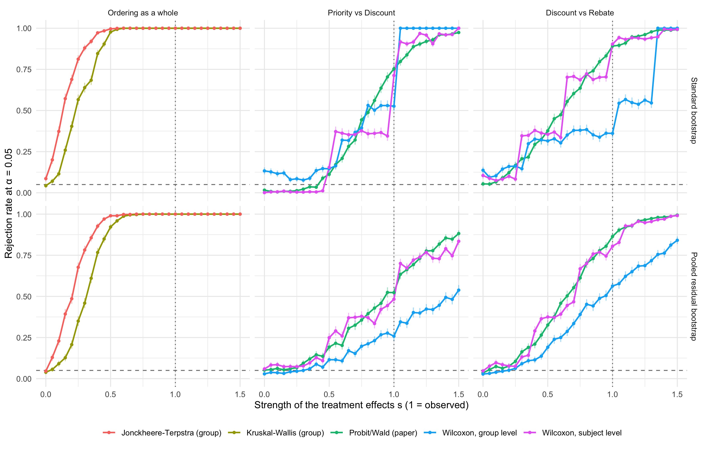
Table 21 varies the number of groups per treatment from 2 to 12, with five times as many control groups as in the original design. Unlike for RH1, the power of the group-level pairwise tests rises gradually with the number of groups, because the individual steps are small effects. With 2 or 3 groups per treatment, these tests cannot reject at all, as their smallest attainable p-values are 0.33 and 0.10. If the true effects equalled the observed ones, about 10 groups per treatment would be needed to detect Priority \(>\) Discount with 80% power at the group level, i.e. 80 groups instead of 32; for Discount \(>\) Rebate, about 6 groups per treatment. The ordering as a whole, by contrast, is detected reliably already with 2 groups per treatment. The design of the experiment is thus well suited to show that the conditions are ordered, but too small to establish the individual steps of the ordering at the group level, that is, without relying on the assumption that groups of the same condition do not differ. The power curves for both bootstrap variants are shown in Figure 27 in Appendix A.4.
| Groups per treatment condition | ||||||||
|---|---|---|---|---|---|---|---|---|
| Comparison | 2 | 3 | 4 | 5 | 6 | 8 | 10 | 12 |
| Ordering as a whole (Jonckheere–Terpstra) | 1.00 | 1.00 | 1.00 | 1.00 | 1.00 | 1.00 | 1.00 | 1.00 |
| Priority vs Discount (Wilcoxon) | 0.00 | 0.00 | 0.29 | 0.42 | 0.57 | 0.75 | 0.84 | 0.91 |
| Discount vs Rebate (Wilcoxon) | 0.00 | 0.00 | 0.54 | 0.70 | 0.86 | 0.96 | 0.98 | 1.00 |
| Total number of groups | 16 | 24 | 32 | 40 | 48 | 64 | 80 | 96 |
Notes: Observed effects (\(s = 1\)), pooled residual bootstrap, \(\alpha = 0.05\), \(B = 1{,}000\) replications per design. Control: five times as many groups as each treatment; 4 groups per treatment is the original design.
4.3.8 Interpretation
The main conclusions of Kessler & Roth (2012) are robust. The priority rule increases donor registration, and the conditions are ordered as predicted. Both results hold at the group level, the level at which observations are independent by design. The comparison nevertheless yields four insights about test choice.
The unit of analysis matters more than the choice between parametric and rank-based methods. The conditions were assigned to groups of 12 subjects who share one pool of B units, so only the groups are independent by design. Aggregating to one value per group removes the dependence within groups from the data instead of assuming it away. The limit of this approach is that with only 3 to 8 groups per sequence of conditions, exact tests cannot reach small \(p\)-values.
The authors’ tests rest on assumptions that the design does not guarantee. Clustering by subject is valid only if groups of the same condition hardly differ. In this data, this appears to be the case, so the authors’ \(p\)-values are plausible, but with larger group differences the same tests reject a true null hypothesis far too often. Clustering by group is no remedy, because with four treated groups the group-clustered tests also reject too often. For RH1, the pooled regression in addition mixes the treatment effect with the decline of registration over time.
For the priority rule (RH1), the group-level designs confirm the effect as clearly as the design allows. Both reach the smallest \(p\)-value that the number of groups permits. The difference-in-differences design removes the time trend through the always-control groups, and the first-half comparison avoids it altogether.
For the ordering of the conditions (RH2), the ordering as a whole and its individual steps must be distinguished. The ordering as a whole is established at the group level, and the Jonckheere–Terpstra test detects it already with a small fraction of the observed effect. The individual steps cannot be resolved with 4 groups per treatment, and more than twice as many groups would be needed for Priority \(>\) Discount. The authors’ significant steps therefore depend on treating subjects within a group as independent.
Overall, the case shows that rank-based methods are most valuable here not because they outperform the authors’ tests on the same observations, but because, applied to one value per independent unit, they provide valid inference without assumptions about the dependence within groups and make explicit how much independent information the experiment actually contains.
4.4 Case 4: Ifcher & Zarghamee (2011)
4.4.1 Original Study and Research Hypothesis
Ifcher & Zarghamee (2011) study whether positive affect changes time preference. Subjects are randomly assigned to watch either a positive-affect film clip (treatment) or a neutral nature film (control). They then answer 30 time-preference questions of the form “What amount of money, \(p\), if paid to you today would make you indifferent to \(m\) paid to you in \(t\) days?” (Ifcher & Zarghamee, 2011, p. 3113), for five future values \(m\) and six delays \(t\). The payment procedure ensures that collecting money today and in the future involves the same transaction costs. Patience is measured by the present value \(p\) or, equivalently, by the discount factor \(D(m,t) = p/m\): for given \(m\) and \(t\), a higher \(p\) means that the subject discounts the future less.
Psychological experiments suggest that mild positive affect strengthens self-control, the psychological counterpart of patience (Ifcher & Zarghamee, 2011, p. 3111). Treated subjects should therefore be less drawn to the immediate payment and state a higher present value for the same future amount. This case study focuses on the main hypothesis of the paper:
RH1: Positive affect increases patience, i.e. treated subjects state higher present values \(p\), and thus higher discount factors, than control subjects.
The authors’ main test is (a) an OLS regression of \(p\) on the treatment dummy and fully saturated dummies for \(m\), \(t\) and \(m \times t\), with standard errors clustered by subject. The treatment dummy is not interacted with \(m\) or \(t\), so it measures one average effect over all 30 questions. They extend this regression (b) by demographic controls and self-reported happiness and (c) estimate it again without the answers with \(p = m\).
4.4.2 Data Diagnostics and Fit of the Original Analysis
The original data contains 69 subjects, 35 in the control and 34 in the treatment group. Every subject answers the same 30 questions (five values of \(m\) times six delays \(t\)); five of the 2,070 answers are unintelligible and excluded, as in the paper, and 65 subjects answer all 30 questions. The 2,065 answers therefore come in 69 bundles of about 30 answers each, one bundle per subject. Answers within a bundle are not independent: a subject who is patient in one question tends to be patient in the others, and an impatient subject states low present values throughout. Knowing a subject’s answer to one question thus says a lot about the other 29. Since the treatment was assigned to subjects, the subject is the independent unit and each subject should enter a test only once. The design compares two independent groups, and RH1 predicts a direction. Because \(m\) and \(t\) are varied within subjects and almost every subject answers every combination, they are balanced between treatment and control by design. They cannot confound the treatment comparison; in the regression, the \(m \times t\) dummies only increase precision.
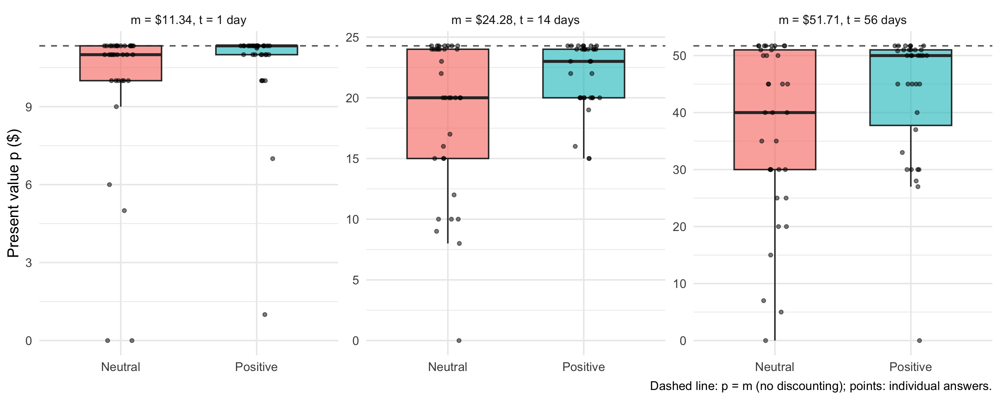
Figure 13 shows the target variable \(p\) for three of the 30 questions. The present values scale with \(m\): the spread between subjects grows from about a dollar at \(m = \$11.34\) to more than $20 at \(m = \$51.71\), so answers to large-\(m\) questions carry more weight in a regression on \(p\). In each question, the treatment group lies higher and is less dispersed than the control group. The outcome is bounded by \(p \leq m\), and 29% of all answers lie exactly at this bound (no discounting); 11 subjects never discount at all. In addition, subjects mostly state round amounts, so that on average only 13 distinct values occur per question. In the question shown in Figure 14, 46 of the 69 answers fall on just three amounts, and across all questions, 91% of the answers share their value with at least one other answer to the same question. Expressed as discount factors (Figure 15), the treatment group is more patient at every combination of \(m\) and \(t\). At the subject level, the mean discount factor is strongly left-skewed (Shapiro–Wilk \(p < 0.001\)). The control group has a tail of very impatient subjects with mean discount factors between 0.2 and 0.5, whereas no treated subject lies below 0.6. A difference in means is therefore partly driven by a few control subjects with large deviations.
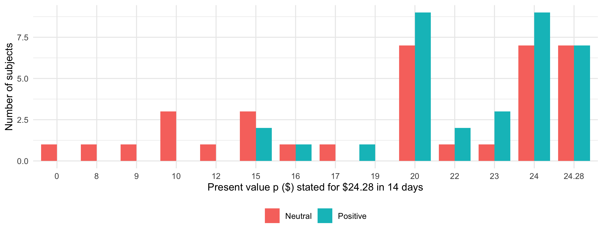
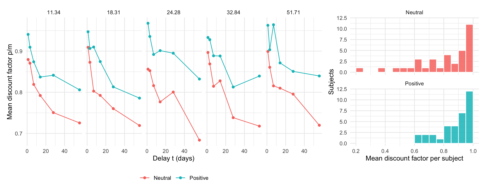
The authors’ regression tests the null hypothesis that treated and control subjects state the same mean present value \(p\) for a given combination of \(m\) and \(t\), with one common treatment effect across all 30 questions. It accounts for the dependence within subjects by clustering the standard errors by subject, so it uses the subject as the independent unit. The controls in the extended specifications are not needed for a valid comparison under random assignment. Moreover, they were elicited only at the end of the session, after the film clip and the time-preference questions. For demographics this is harmless, but self-reported happiness is a post-treatment variable: if the clip had changed it, controlling for it would remove part of the treatment effect. The authors argue that their long-term happiness question should not be affected by a short mood inducement, and indeed mean happiness hardly differs between the groups (5.00 and 4.97 on a seven-point scale). Controlling for happiness is therefore unlikely to bias the estimate, but it is not innocuous by design. The authors also estimate the regression without the answers at \(p = m\). This selects observations on the value of the outcome, and the many answers at this bound are discarded rather than modelled. With a skewed subject-level distribution and a tail of very impatient control subjects, the difference in means may be driven by a few subjects, which a rank-based comparison makes visible.
4.4.3 Test Choice and Justification
The diagnostics show 30 dependent answers per subject, two independent groups, an outcome that scales with \(m\), and many ties at the upper bound and at round amounts. Following Table 3, the test has to use one value per subject, compare within the \((m,t)\) cells, and handle ties. The natural candidate from the test battery is the van Elteren test with the 30 \((m,t)\) cells as blocks, but its usual variance assumes independent blocks (Section 3.4.3). Here, the same 69 subjects appear in every block, so applied to the 2,065 answers, it would count answers instead of subjects. The test is therefore applied in a version that respects the subject as the unit:
\(p\) is ranked within each \((m,t)\) cell across all subjects (ranks scaled by the cell size). This removes the scale problem that $51.71 produces different present values than $11.34 and makes the 30 questions comparable.
The ranks are averaged for each subject, which gives one value per subject.
The 34 treated and 35 control subjects are compared with a Wilcoxon rank-sum test.
The test asks whether treated subjects tend to rank higher than control subjects across the 30 questions, rather than whether their mean present value differs.
As counterparts to the specifications with controls, the Wilcoxon test is additionally applied to subject-level means of residuals from a regression of \(p\) on demographics and self-reported happiness, and from a regression that additionally contains the \(m \times t\) dummies (Section 3.4.3). The resulting Hodges–Lehmann shift is measured in dollars and is directly comparable to the OLS coefficients. Answers with \(p = m\) need not be excluded as in the authors’ specifications without them: rank tests handle the resulting ties, and excluding answers based on their value selects observations on the outcome.
4.4.4 Results
All eight columns of Table 3 reproduce exactly (Table 22). The treatment effect on \(p\) is about $2.0–2.4 with all answers and $3.0–3.5 when answers with \(p = m\) are excluded. Without controls (column 1), it is significant only at the 10% level (\(p = 0.054\)). Controls and the exclusion of non-discounting answers make it more significant.
| (1) | (2) | (3) | (4) | (5) | (6) | (7) | (8) | |
|---|---|---|---|---|---|---|---|---|
| Treatment | 2.202 | 2.012 | 2.337 | 2.416 | 2.997 | 3.027 | 3.028 | 3.507 |
| (1.124) | (0.958) | (1.100) | (1.002) | (1.352) | (1.159) | (1.265) | (1.207) | |
| \(p\)-value | 0.054 | 0.039 | 0.037 | 0.019 | 0.031 | 0.012 | 0.020 | 0.005 |
| Demographics | – | Yes | – | Yes | – | Yes | – | Yes |
| Happiness | – | – | Yes | Yes | – | – | Yes | Yes |
| Excludes \(p = m\) | – | – | – | – | Yes | Yes | Yes | Yes |
| Clusters (subjects) | 69 | 68 | 69 | 68 | 58 | 57 | 58 | 57 |
Notes: OLS of \(p\) on the treatment dummy and \(m \times t\) fixed effects; standard errors clustered by subject in parentheses; p-values from a \(t\)-distribution with \(G - 1\) degrees of freedom (\(G\): number of clusters), as in Stata. Reproduces Table 3 of Ifcher & Zarghamee (2011).
Table 23 shows the rank-based results. The Wilcoxon test on the mean within-cell ranks per subject gives \(p = 0.16\). It points in the predicted direction, with treated subjects stating higher present values, but is not significant. With demographics and happiness as controls, the rank test on the residuals gives \(p = 0.060\), and adding the \(m \times t\) dummies yields \(p = 0.045\), mirroring the authors’ column 4 (\(p = 0.019\)). The \(m \times t\) dummies change little here, because in the balanced design they average out within each subject; only the four subjects with missing answers make a difference.
| Test | Units | HL effect [95% CI] | \(p\)-value |
|---|---|---|---|
| Wilcoxon, mean within-cell rank per subject | 69 subjects | 0.08 [\(-0.03\), 0.19] | 0.161 |
| Wilcoxon, mean residual per subject: | |||
| demographics and happiness | 68 subjects | $1.31 [0.00, 2.88] | 0.060 |
| plus \(m \times t\) fixed effects (cf. col. 4) | 68 subjects | $1.33 [0.00, 2.87] | 0.045 |
Notes: Two-sided tests. Within-cell ranks are scaled by the cell size, so the HL effect of the rank test is a shift on the scale \((0, 1]\). The residual tests use residuals from a regression without the treatment dummy; their HL effect is in dollars of present value (treatment minus control).
The effect sizes explain the gap between the regression and the rank tests. With the same controls as in column 4, the Hodges–Lehmann shift is $1.33, only about half the OLS coefficient of $2.42. The OLS coefficient is thus driven to a large extent by the tail of very impatient control subjects visible in Figure 15; the typical subject in the treatment group states a present value only a little more than one dollar higher than the typical control subject.
The controls change the rank test more than the regression, for two reasons (Figure 16). First, they explain almost half of the variation between subjects, mostly in the bulk of the distribution. This sharpens the ordering of the subjects by treatment, which is what the rank test uses, but changes little for the mean, which is driven by a few very impatient control subjects. Second, removing the controls spreads out the answers that are tied at round amounts and at \(p = m\), so the ranks carry more information. In two of the three questions shown, the within-question Wilcoxon \(p\)-value falls markedly; in the third, it rises.
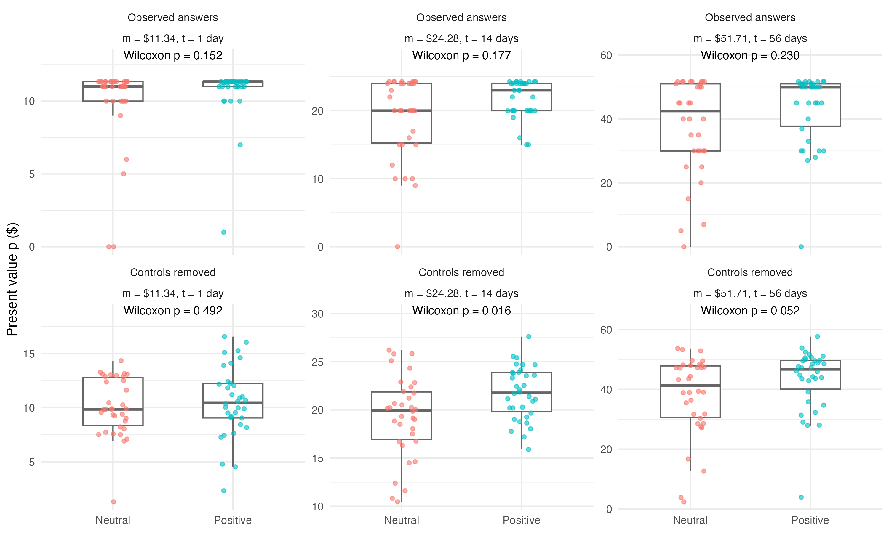
The simulation uses the subject as the unit, so every simulated data set consists of whole subjects with all their answers. It compares the authors’ OLS of column 1 with the Wilcoxon test on the mean within-cell ranks per subject. For the power, the effect is measured on the discount factor \(D = p/m\), so that it scales with \(m\). Since the answers are bounded by \(p \leq m\) and 29% of them lie exactly at this bound, the main data-generating process is adapted to the data:
Closing the gap (main DGP). The treatment closes a share of the gap to the full amount, \(p' = p + \delta\,(m - p)\). With \(\hat r = 0.60\) the ratio of the mean gaps \(1 - D\) of treated and control subjects, treated answers are set to \(D(s) = 1 - (1 - D)\,\hat r^{\,s-1}\). Answers at \(p = m\) stay at \(p = m\), so the many ties at the upper bound are preserved, and no answer exceeds the full amount. This is a shift on the scale \(\log(1 - D)\).
Additive shift (comparison). As in the other cases, every answer of a treated subject is shifted by \(-\hat\theta + s\hat\theta\), where \(\hat\theta\) is the difference in the mean discount factors per subject (\(0.077\), mean centring) or their Hodges–Lehmann shift (\(0.038\), HL centring), and capped to \([0, 1]\). The results are reported in Appendix A.2.
Under the pooled null hypothesis, both the OLS and the Wilcoxon test hold their nominal level (Table 24).
| Test | Size |
|---|---|
| OLS, column 1 (paper) | 0.046 |
| Wilcoxon, mean within-cell rank per subject | 0.049 |
Notes: \(\alpha = 0.05\), two-sided, \(B = 5{,}000\) replications. 69 subjects drawn with all their answers from all 69 subjects and randomly assigned to 34 treated and 35 control subjects.
When the treatment closes the gap to the full amount, both tests hold their level at \(s = 0\) (OLS 5.4%, Wilcoxon 5.1%), so the data-generating process is a valid null hypothesis for both. The OLS curve then rises smoothly. The Wilcoxon curve does not: it stays at 5–8% for all \(s < 1\) and jumps from 7% at \(s = 0.95\) to 25% at \(s = 1\), the only point at which no answer is changed (Figure 21 in Appendix A.2). As explained in Section 3.5, the shift breaks the ties at round amounts, so the curve of the rank test moves in steps; closing the gap protects only the ties at the bound \(p = m\). The additive shift used in the other cases leads to larger distortions (Appendix A.2). The power at the observed effect and the sample-size simulation, which resample the observed answers without shifting them, are therefore used for the comparison.
At the observed effect, the OLS rejects in 49% and the Wilcoxon test in 26–28% of the replications. The OLS would reach 80% power with about 140 subjects in total and 90% with about 185. The Wilcoxon test does not reach 80% even with 260 subjects (78%), i.e. it would need more than 1.8 times as many subjects as the OLS. If the observed effect, which rests largely on a few very impatient control subjects, is taken as the true one, the rank test is thus clearly less powerful than the regression. Part of the reason is again the ties: because subjects answer in round amounts, many answers to the same question share a rank, so the ranks discard much of the information in the answers. The regression uses the dollar amounts themselves and gives large weight to the few very impatient control subjects who drive the mean difference.
4.4.5 Interpretation
All procedures point in the direction reported by Ifcher & Zarghamee (2011): subjects who watched the positive film state higher present values and thus discount the future less. The evidence for this effect, however, is weak. Without controls, it is not significant at the 5% level with any test that respects the subject as the independent unit, neither with the authors’ regression (\(p = 0.054\)) nor with the rank test (\(p = 0.16\)). It becomes significant only once demographic controls and self-reported happiness are added, or once all answers at \(p = m\) are excluded, and even then only narrowly. A result that depends on such specification choices should not be regarded as established. With 69 subjects, the experiment was too small to detect an effect of the observed size reliably: even the OLS rejects in only about half of the simulated replications, which mirrors its \(p\)-value close to 0.05 (Section 3.5). A replication of the study with a larger sample, or a robustness check with a different experimental design, would be needed before drawing firm conclusions. The comparison yields four insights.
The subject is the unit that determines what the data can show. Each subject answers 30 closely related questions, so the answers contain far less independent information than their number suggests. Ranking within each question and averaging per subject yields one value per subject, and the rank test is then valid without modelling how the answers of a subject are related. This works as long as a clearly independent unit exists and still provides enough observations.
The effect sizes show where the treatment effect comes from. The Hodges–Lehmann shift is only about half the OLS coefficient, because the difference in means rests largely on a group of very impatient control subjects. Whether positive affect makes everyone a little more patient or mainly prevents very impatient answers is a question that the mean difference alone does not answer.
Here the rank test is less powerful than the regression. Subjects answer in round amounts, so many answers share a rank, and the effect lies in the tail that the mean captures and the ranks down-weight. The authors’ regression is valid, and their choice is defensible. The rank-based analysis is still useful as a complement, because it shows how much of the effect rests on a few subjects and makes the exclusion of answers at \(p = m\) unnecessary.
As in Case 2, the power curve of the rank test reflects the shift model. Shifting the answers breaks the ties at round amounts, so the rejection rate jumps instead of rising with the size of the effect (Section 3.5). Closing the gap removes the jumps at the bound \(p = m\), but not at round amounts.
Overall, the case shows that rank-based methods are not automatically the better choice. Applied to one value per subject, they give a valid assessment of the effect, and they reveal that the effect is concentrated in part of the distribution. When the outcome is heavily rounded and the effect lies in the tail, however, the regression on the original values is the more powerful test.
4.5 Case 5: Di Tella et al. (2015)
4.5.1 Original Study and Research Hypothesis
Di Tella et al. (2015) study whether people distort their beliefs about others in order to justify selfish behaviour. In their “corruption game”, two subjects, an allocator and a seller, have each earned 10 tokens. Both decide simultaneously. The allocator splits the 20 tokens between the two of them. The seller chooses the price at which the tokens are converted into money: either a high price for both (Option A, the fair choice) or a low price for both plus a side payment for the seller only (Option B, the unkind or “corrupt” choice). Allocators are randomly assigned to one of two treatments. In Able=8, they can move up to 8 tokens; in Able=2, only up to 2. Sellers do not know about this restriction, so the treatment should not change what allocators expect from sellers. After deciding, allocators state whether they believe their seller chose Option B (Is Corrupt, binary) and which share of sellers in the lab chose Option B (%-Corrupt, ten categories 0–10%, …, 90–100%, coded 0, 0.1, …, 0.9). This case study focuses on the main hypothesis of the paper:
RH1: Allocators who can take more tokens (Able=8) are more likely to believe that sellers chose the unkind option than allocators who can take only 2 tokens (Able=2).
A precondition is that Able=8 allocators actually take more tokens (Tokens Taken). The authors test the precondition and RH1 in two experiments with different subject pools: the Basic Game (30 allocators) and the Modified Game (65 allocators), which changes several details of the design and rewards accurate beliefs. For each outcome, they use (a) OLS regressions on the treatment dummy with heteroskedasticity-robust standard errors, without and with controls for gender, age and socioeconomic class, and (b) two-sample \(t\)-tests. The further games of the paper and its instrumental-variable estimates are not considered here.
4.5.2 Data Diagnostics and Fit of the Original Analysis
Each allocator decides once, anonymously and without feedback, so the data contains one observation per independent unit: 15 allocators per treatment in the Basic Game and 31 (Able=2) and 34 (Able=8) in the Modified Game.1 The design compares two independent groups in each of two separate experiments, and RH1 predicts a direction. The controls (gender, age, socioeconomic class) are balanced by random assignment; they are missing for four allocators of the Modified Game, all in Able=2, so the regressions with controls use 61 instead of 65 observations.
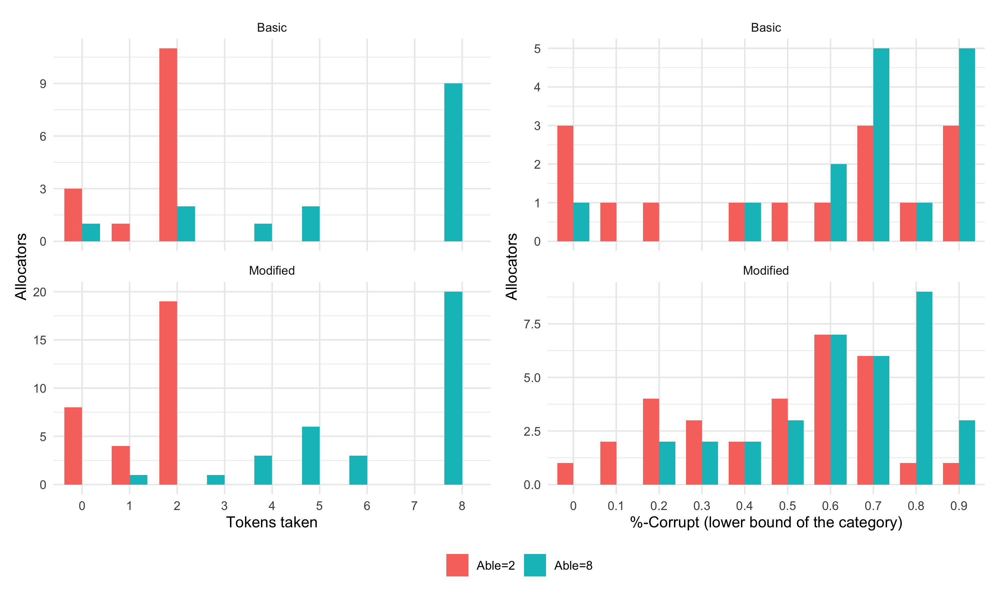
Figure 17 shows that none of the three outcomes is a continuous variable. Tokens Taken is bounded by the treatment itself: Able=2 allocators can take at most 2 tokens, and 73% (Basic) and 61% (Modified) of them do exactly that; 60% and 59% of the Able=8 allocators take the maximum of 8. The difference between the groups is therefore largely built into the design. Is Corrupt is binary; the share of allocators who believe their seller chose Option B rises from 0.47 to 0.87 (Basic) and from 0.48 to 0.85 (Modified). %-Corrupt is an ordered variable with only ten categories, of which 9 (Basic) and 10 (Modified) distinct values occur. Its distribution is left-skewed, in particular in the Able=8 groups (Shapiro–Wilk \(p = 0.002\) and \(0.009\)).
Without controls, the authors’ OLS regressions test the null hypothesis that the mean outcome is equal for Able=8 and Able=2 allocators; for Is Corrupt, this is the share of allocators who believe that their seller chose Option B. The regressions use one observation per allocator and robust (HC1) standard errors, so they respect the independent unit. Since the ten categories are equal-width intervals of a probability, treating %-Corrupt as a numeric variable is justified, and the mean has a direct interpretation as the average belief. With 15 allocators per group in the Basic Game, however, the \(t\)-distribution of the OLS coefficient rests on the central limit theorem applied to a binary or ten-valued outcome. The heavy ties also make the normal approximation of rank tests unreliable. Exact tests are therefore preferable for the Basic Game.
4.5.3 Test Choice and Justification
The diagnostics show one observation per allocator, two independent groups, small samples and outcomes with few distinct values. Following Table 3, the natural counterpart to the authors’ \(t\)-test and OLS without controls is the Wilcoxon rank-sum test (Section 3.4.1), with the Hodges–Lehmann shift as effect size. The Wilcoxon test suits the three outcomes as follows:
Tokens Taken is a count and %-Corrupt has ten equal-width categories, so their means are meaningful. The rank test uses only their order and asks whether Able=8 allocators tend to give higher values, rather than whether their mean differs; with few distinct values, this order is less informative than for a continuous outcome.
For the binary Is Corrupt, the rank-sum test compares the shares of allocators answering “Option B”, and its exact version is Fisher’s exact test (Section 3.4.4). The difference in proportions is reported as the effect size.
Because of the small samples and the heavy ties, all tests are computed exactly in addition to the normal approximation.
The Kolmogorov–Smirnov test is not used. With only ten categories of %-Corrupt and 15 allocators per group in the Basic Game, the many ties would make it weak. For Is Corrupt, it adds nothing to the exact test, and for Tokens Taken, the distributions differ already by design.
As counterpart to the regressions with controls, the Wilcoxon test is applied to residuals from a regression of the outcome on gender, age and socioeconomic class (Section 3.4.3).
4.5.4 Results
The top half of Table 4 of the paper reproduces exactly (Table 25). Able=8 allocators take about 4.5 (Basic) and 5.2 (Modified) more tokens. In the Basic Game, they are 40 percentage points more likely to believe that their seller chose Option B (\(p = 0.019\)), and their estimate of the share of corrupt sellers is 0.20 higher, i.e. two categories, which is significant only at the 10% level (\(p = 0.078\)) and not at all with controls (\(p = 0.112\)). In the Modified Game, both belief effects are significant at the 1% level, with and without controls.
| Basic Game | Modified Game | |||
|---|---|---|---|---|
| (1) | (2) | (3) | (4) | |
| Tokens Taken | \(<0.001\) | \(<0.001\) | \(<0.001\) | \(<0.001\) |
| Is Corrupt | 0.019 | 0.042 | 0.001 | 0.009 |
| %-Corrupt | 0.078 | 0.112 | 0.004 | 0.008 |
| Controls | – | Yes | – | Yes |
| Observations | 30 | 30 | 65 | 61 |
Notes: Two-sided p-values of the Able=8 coefficient in an OLS regression of each outcome on the Able=8 dummy, with heteroskedasticity-robust standard errors (HC1). Controls: gender, age, socioeconomic class. Reproduces the top half of Table 4 of Di Tella et al. (2015); the paper reports 65 observations for column (4), but four allocators have missing controls.
Table 26 compares the rank tests with the authors’ OLS. The precondition is confirmed by every test: the Hodges–Lehmann shift is 6 tokens in both games (\(p < 0.001\)).2
For the beliefs, the tests diverge in the Basic Game. For Is Corrupt, the OLS (\(p = 0.019\)) and the Wilcoxon test with normal approximation (\(p = 0.024\)) agree, but the exact test gives \(p = 0.050\). As the simulation below shows, this gap is due mainly to the conservativeness of the exact test rather than to an overstatement by the approximate tests. For %-Corrupt, the Wilcoxon test gives \(p = 0.133\), both exactly and approximately, compared with \(p = 0.078\) for the OLS. The Hodges–Lehmann shift of 0.2, two categories, equals the OLS coefficient, but its 95% confidence interval \([0.0, 0.5]\) reaches zero. The difference between the groups comes largely from five Able=2 allocators who believe that almost no seller is corrupt (0–20%), whereas both groups overlap strongly at high values. With controls, the exact residual Wilcoxon tests give \(p = 0.051\) and \(p = 0.113\), and the normal approximation gives almost the same values. In the Basic Game, the evidence for RH1 is therefore borderline for Is Corrupt, where its significance depends on the test, and absent for %-Corrupt with the rank test.
In the Modified Game, with 65 allocators, all tests without controls reject at the 1% level, and the exact tests confirm the approximate ones. The Hodges–Lehmann shift for %-Corrupt is one category (0.1), slightly smaller than the OLS coefficient of 0.158. With controls, the residual test confirms the effect on %-Corrupt (\(p = 0.006\)) but not on Is Corrupt (\(p = 0.092\)). This is a weakness of the residual approach for binary outcomes rather than evidence against the effect. The fitted values from the controls vary only between 0.53 and 0.79, so the residuals keep the two answer groups completely separated and only reorder the allocators within each answer according to their controls. This ordering is unrelated to the treatment and adds noise to the ranks. Since the treatment was randomised, the controls are not needed for a valid test, and the exact test without controls is the appropriate reference for Is Corrupt.
| Without controls | With controls (residual tests) | ||||||
|---|---|---|---|---|---|---|---|
| Game | Outcome | OLS | Wilc. asympt. | Wilc. exact | OLS | Wilc. asympt. | Wilc. exact |
| Basic | Tokens Taken | \(<0.001\) | \(<0.001\) | \(<0.001\) | \(<0.001\) | \(<0.001\) | \(<0.001\) |
| Is Corrupt | 0.019 | 0.024 | 0.050 | 0.042 | 0.054 | 0.051 | |
| %-Corrupt | 0.078 | 0.133 | 0.133 | 0.112 | 0.115 | 0.113 | |
| Modified | Tokens Taken | \(<0.001\) | \(<0.001\) | \(<0.001\) | \(<0.001\) | \(<0.001\) | \(<0.001\) |
| Is Corrupt | 0.001 | 0.002 | 0.003 | 0.009 | 0.092 | 0.092 | |
| %-Corrupt | 0.004 | 0.005 | 0.004 | 0.008 | 0.007 | 0.006 | |
Notes: Two-sided p-values. OLS: robust standard errors as in Table 25. Exact Wilcoxon: permutation distribution given the ties; for Is Corrupt identical to Fisher’s exact test. Residual tests: Wilcoxon (normal approximation and exact) on residuals from a regression of the outcome on gender, age and socioeconomic class without the treatment dummy (30 and 61 allocators).
The simulation compares the authors’ OLS without controls with the Wilcoxon test, both with the normal approximation and exactly, separately for the two games. Tokens Taken is not simulated: under a pooled null hypothesis, Able=2 allocators would take more than 2 tokens, which the design rules out, and all tests reject with \(p < 0.001\) anyway. The effect is varied as follows:
%-Corrupt. Every treated value is shifted additively and capped to the scale \([0, 0.9]\), with the difference in means as \(\hat\theta\) (0.20 in the Basic and 0.16 in the Modified Game).
Is Corrupt. As for binary outcomes in Section 3.5, the probability of answering “Option B” is shifted.
Under the pooled null hypothesis, the OLS and the Wilcoxon test with normal approximation hold their nominal level in all four cases (Table 27). The OLS with robust standard errors is thus not too liberal, even with 15 allocators per group and a binary outcome. The exact test, by contrast, is conservative for the binary Is Corrupt: in the Basic Game, it rejects a true null hypothesis in only 1.7% of the replications. With 15 allocators per group and two possible answers, only few p-values can be attained, and the exact test rejects only if one of them is at most 0.05, so its actual rejection rate lies well below the nominal level. The observed data, 7 of 15 Able=2 and 13 of 15 Able=8 allocators answering “Option B”, give exactly \(p = 0.050\). One more Able=8 allocator answering “Option B” would give \(p = 0.014\), one fewer \(p = 0.128\), and no value in between can be attained. This explains the gap between \(p = 0.019\) and \(p = 0.050\) in Table 26: it does not show that the OLS overstates the evidence, but that the exact test understates it. For the ten-category %-Corrupt, the exact test holds its level.
| Game | Outcome | OLS (paper) | Wilcoxon, normal approx. | Wilcoxon, exact |
|---|---|---|---|---|
| Basic | Is Corrupt | 0.054 | 0.041 | 0.017 |
| %-Corrupt | 0.049 | 0.045 | 0.047 | |
| Modified | Is Corrupt | 0.048 | 0.048 | 0.035 |
| %-Corrupt | 0.052 | 0.052 | 0.052 |
Notes: \(\alpha = 0.05\), two-sided, \(B = 5{,}000\) replications. Allocators drawn with replacement from all allocators of a game and randomly assigned to groups of the original sizes (15/15 and 31/34).
Figure 18 shows the rejection rates. For Is Corrupt, all curves are smooth. In the Basic Game, the OLS and the approximate Wilcoxon test lie close together, and the exact test lies below them across the whole range: at the observed effect, it rejects in 52% of the replications, compared with 69% for the OLS and 65% for the approximate Wilcoxon test. In the Modified Game, the three tests are almost identical and reach about 90% at the observed effect.
For %-Corrupt, the OLS curves are smooth, but the Wilcoxon curves move in steps. In the Modified Game, the rejection rate of the Wilcoxon test stays at 5% up to \(s = 0.35\), jumps to about 50% at \(s = 0.4\), stays there up to \(s = 0.95\) and jumps again to 82% at \(s = 1\) and 97% at \(s = 1.05\). As explained in Section 3.5, the shift breaks the ties between the ten answer categories, so the curves of the rank test move in steps. Even the rounding error of the observed difference in means (0.2) raises the rejection rate of the Wilcoxon test at \(s = 0\) in the Basic Game to 9%. The power at the observed effect and the sample-size simulation are therefore used for the comparison. At the observed effect, the Wilcoxon test rejects in 31% of the replications in the Basic Game, compared with 45% for the OLS, and both reach about 82% in the Modified Game.
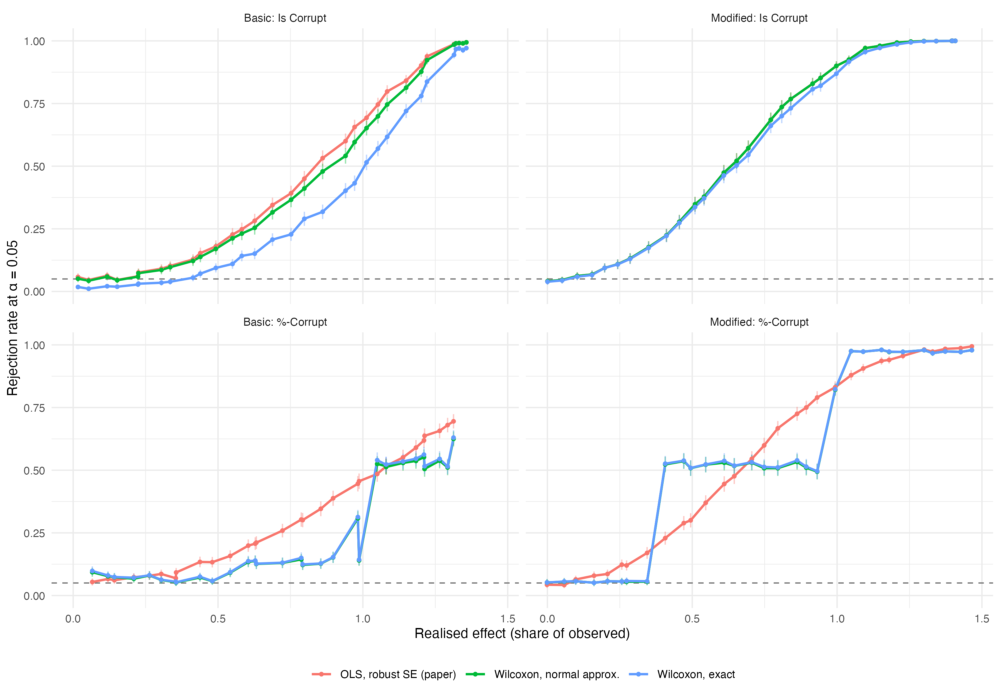
Table 28 shows how many allocators in total each test needs for 80% and 90% power at the observed effect. With the effect of the Basic Game, the OLS reaches 80% power for Is Corrupt with about 38 allocators, the approximate Wilcoxon test with about 40 and the exact test with about 48. For %-Corrupt, the difference is larger: the OLS needs about 70 allocators, the Wilcoxon test about 96, i.e. about 1.4 times as many. With the effects of the Modified Game, all tests need about 50–57 allocators for both beliefs. With 30 allocators, the Basic Game was underpowered for both beliefs; the Modified Game, with 65 allocators, was large enough for 80% power with every test.
| OLS (paper) | Wilcoxon, normal approx. | Wilcoxon, exact | |||||
|---|---|---|---|---|---|---|---|
| Game | Outcome | 80% | 90% | 80% | 90% | 80% | 90% |
| Basic | Is Corrupt | 38 | 50 | 40 | 53 | 48 | 66 |
| %-Corrupt | 70 | 91 | 96 | 126 | 95 | 126 | |
| Modified | Is Corrupt | 50 | 63 | 50 | 63 | 55 | 70 |
| %-Corrupt | 58 | 76 | 57 | 76 | 57 | 76 | |
Notes: Both groups scaled by a common factor \(\lambda\), keeping the original ratio of the group sizes (15/15 in the Basic, 31/34 in the Modified Game; 30 and 65 allocators in total). Power simulated for 20, 30, 40, 50, 60, 80, 100, 130, 160, 200 and 260 allocators in total, \(B = 1{,}000\) per point; linear interpolation, rounded to whole allocators.
4.5.5 Interpretation
All procedures point in the direction reported by Di Tella et al. (2015): allocators who can take more tokens are more likely to believe that sellers acted unkindly. How strong the evidence is depends on the experiment and on the test. The comparison yields four insights.
In the Modified Game, the choice of test does not matter. With 65 allocators, all tests reject clearly, hold their level and have about the same power, because the treatment shifts the whole distribution of beliefs, which the mean and the ranks capture equally well. Only the residual test loses the effect on Is Corrupt, which reflects a weakness of residualising a binary outcome rather than evidence against the effect.
In the Basic Game, the result for Is Corrupt depends on whether the test is exact, and the exact test is too conservative. With 15 allocators per group and a binary answer, the exact test can attain only a few \(p\)-values, and the observed data give exactly \(p = 0.050\). The OLS and the approximate Wilcoxon test hold their level, so their \(p\)-values are not overstated; the exact test understates the evidence. With small samples and binary outcomes, exactness alone does not make a test better.
For %-Corrupt in the Basic Game, the rank test is less powerful than the regression. As in Case 4, the difference rests largely on a few distant answers, which the mean weighs heavily and the ranks only record as lower, and the belief takes only ten values, so most answers are tied. The usual advantage of rank tests does not apply either, because the bounded scale has no outliers against which the mean would need protection.
As in Cases 2 and 4, the power curves of the rank test reflect the data-generating process. With only ten answer categories, the Wilcoxon curves for %-Corrupt move in steps (Section 3.5). For the binary Is Corrupt, shifting the probability instead of the answers keeps the values at 0 and 1 and yields smooth curves.
Overall, the case shows that the authors’ OLS is a valid choice for this data, but the rank-based analysis reveals how thin part of the evidence is. In the small Basic Game, the effect on the share of corrupt sellers is not significant with the rank test and only at the 10% level with the OLS, and the effect on the binary belief sits exactly at the 5% threshold with the exact test; the simulation shows that the Basic Game was underpowered for both beliefs. Only the larger Modified Game provides robust evidence. Such borderline results from small samples are fragile, and indeed a conceptual replication with a larger sample did not reproduce the main findings and, if anything, found beliefs biased in the opposite direction (Verrina, 2023). With small samples and few possible answers, the choice between an exact and an approximate test can decide whether a result counts as significant, and a result that depends on this choice should be treated with caution.
5 Synthesis and Discussion
This section draws the five case studies together: what they imply for the original studies, when rank-based tests are better suited, how this relates to the literature, and what follows for test choice in experimental economics.
5.1 Implications for the Original Research Hypotheses
In none of the five cases does the rank-based analysis reverse the direction of the authors’ result. It does, however, change how strong the evidence for the research hypotheses appears (Table 29). In Cases 1 and 2, the rank-based tests confirm the authors’ conclusions and, in parts, support them more clearly than the authors’ own tests. In Case 3, they confirm the effect of the priority rule and the ordering of the conditions as a whole, but not the individual steps of the ordering, once the group is treated as the independent unit. In Cases 4 and 5, they reveal that part of the published evidence is fragile. The effect of positive affect on patience is significant only with controls, and the effects in the small Basic Game of Case 5 depend on the test. Why the tests lead to different assessments, and what this implies for test choice, is the subject of Section 5.2.
| Case | Authors’ test | Rank-based alternative | Assessment |
|---|---|---|---|
| 1 Abeler et al. | OLS (with and without controls) | Wilcoxon with HL, KS | Confirmed and strengthened; the rank-based tests are clearly more powerful |
| 2 Andersen et al. | Pairwise \(t\)-tests (offers); Fisher, \(z\)-tests, logit (responses) | Pairwise Wilcoxon, Jonckheere–Terpstra, Chacko–Shorack, stratified tests | Confirmed; the second tenfold increase in stakes is supported only by the rank test; ordered tests fit the directional hypothesis on responses |
| 3 Kessler & Roth | OLS and probit, clustered by subject | Exact rank tests on group rates | Priority rule and the ordering as a whole confirmed; the individual steps of the ordering rest on the independence of subjects within groups |
| 4 Ifcher & Zarghamee | OLS with cell fixed effects, clustered by subject | Wilcoxon on mean within-cell ranks per subject, residual version | Weakened; significant only with controls or after excluding answers; the rank test is less powerful |
| 5 Di Tella et al. | OLS, robust standard errors | Wilcoxon (approximate and exact), residual version | Modified Game confirmed; Basic Game fragile, the result depends on the test |
5.2 When Rank-Based Tests Are Better Suited
Whether a rank-based test is better suited than a parametric one depends, in the cases, on the two questions from Section 1.1: whether its hypothesis fits the research hypothesis, and whether it fits the data. Table 30 summarises the findings along these two questions.
| Feature | Cases | Better suited | Reason |
|---|---|---|---|
| A. Fit to the research hypothesis | |||
| Order predicted across several treatments | 2, 3 | Either, as an ordered test | One test for the whole order instead of pairwise or omnibus tests; Jonckheere–Terpstra if the order holds, Chacko–Shorack if it is violated in the sample |
| Direction predicted | 2, 5 | Either, as a directional test | Omnibus tests such as Fisher’s exact test or the two-sided KS test ignore the predicted direction |
| Groups differ in shape, not only in location | 1, 4 | Both | The tests answer different questions; the KS test captures a reallocation between focal points (1); the HL shift is half the mean difference (4) |
| Treatment assigned to groups | 3 | Either, exact, on one value per group | The comparison is between groups; clustering by subject assumes independent group members, and clustering by group rejects too often with few treated groups |
| Time and order effects within units | 3 | Either, in a difference-in-differences comparison | Comparing changes within groups removes the trend |
| B. Fit to the data | |||
| Skewed, bounded outcome; effect in the bulk or between focal points | 1, 2 | Rank-based | The ranks use the information that drives the effect |
| Effect in a few extreme values of a bounded, rounded outcome | 4, 5 | Parametric | The mean gives these values the weight that the ranks withhold |
| Shift of the whole distribution | 5 | Either | The tests are practically equivalent |
| Many ties at focal points | 1, 2, 4, 5 | Depends on the effect | Tied values share a rank; the power of rank tests depends on whether values are exactly tied |
| Binary outcome | 2, 5 | Either | Rank tests reduce to tests of proportions; the choice is between exact and asymptotic inference |
| Repeated observations per subject | 4 | Either, on one value per subject | Ranking within cells and averaging per subject handles the dependence |
| Few independent groups | 3 | Exact, on group values | Valid without many clusters, unlike uncorrected cluster-robust standard errors, but with few attainable \(p\)-values |
| Continuous covariate coarsened into bands | 2 | Parametric, if correctly specified | Stratified tests lose the variation within the bands |
| Controls with a binary outcome | 5 | Parametric | Rank tests on residuals only reorder answers within each category |
Notes: KS: Kolmogorov–Smirnov test. HL: Hodges–Lehmann estimate. “Either” means that both families perform similarly once the stated condition is met; “Both” means that both should be reported because they answer different questions.
5.2.1 Fit to the Research Hypothesis
Many experiments vary a treatment in several steps, such as stakes, prices or the strength of an incentive, and predict that the outcome changes in one direction along these steps. For such research hypotheses, tests for ordered alternatives fit better than pairwise or omnibus tests, because they answer the research hypothesis with a single test. In Case 2, the Jonckheere–Terpstra test confirms the decline of offers across all four stake levels and needs only a fraction of the published sample. In Case 3, it detects the ordering of the conditions as a whole already with a small fraction of the observed effect. The advantage depends on whether the order holds in the sample. Where two stake groups were inverted, the Jonckheere–Terpstra test lost all power, while the Chacko–Shorack test, which merges the inverted groups, still rejected (Case 2). For designs with ordered treatments, an ordered test is therefore the natural first choice, and the Chacko–Shorack test is the safer one when an inversion between neighbouring groups is plausible.
Most research hypotheses in experiments also predict a direction, for example that higher stakes reduce rejections. A test that ignores the direction answers a weaker question. Fisher’s test on the responses in Case 2 would reject just as readily if rejection rose with the stakes. In Case 5, the predicted direction speaks for the Wilcoxon test rather than the Kolmogorov–Smirnov test, which tests for any difference between the distributions. The test should therefore address the kind of difference that the research hypothesis predicts, rather than any difference.
Experimental outcomes often change in shape rather than only in location, for example when a reference point or a focal value attracts answers. Mean-based and rank-based tests then answer different questions, and the choice of test decides which question is asked. In Case 1, reference dependence predicts that earnings move from €3 towards €7. The Kolmogorov–Smirnov test, which compares whole distributions, captures this reallocation directly and is the most powerful test. In Case 4, the Hodges–Lehmann shift is only about half the OLS coefficient, because the difference in means rests largely on a few very impatient control subjects. Where the distributions may differ in shape, reporting both a mean-based and a rank-based effect therefore shows where the effect comes from.
A research hypothesis also determines which comparison the test has to make. In Case 3, the conditions were assigned to whole groups, and the research hypothesis claims an effect of the priority rule, not of time. The test therefore has to compare groups and remove the time trend. The authors’ regression relies on assumptions that the design does not guarantee, and clustering by group does not repair this with four treated groups (Section 4.3). Exact tests on one value per group need none of these assumptions. A permutation test on the mean group rates would be exact as well, so the advantage lies in exact inference on the right unit, not in the ranks.
5.2.2 Fit to the Data
Three features typical of laboratory data determine how well a test fits the data: how the treatment effect shows in a bounded outcome with focal points, ties and binary outcomes, and the design, that is, the independent unit and the handling of covariates.
Laboratory outcomes are often bounded and concentrated on a few focal values, such as round amounts or equal splits. In such data, the decisive feature is not the shape of the outcome alone, but how the treatment effect shows in it. Where the treatment moves most observations or shifts mass from one focal value to another, the ranks capture the effect better than the mean, and the Wilcoxon and Kolmogorov–Smirnov tests are more powerful (Cases 1 and 2). In Case 2, the Wilcoxon test detects a difference between two stake levels that the \(t\)-test misses. Where the effect comes from a few extreme answers on a scale on which most answers are rounded, the mean uses the size of these answers, while the ranks only record their order. The regression on the original values is then more powerful (Cases 4 and 5). In Case 4, the rank-based test would need about twice as many subjects. Where the treatment shifts the whole distribution, as in the Modified Game of Case 5, the choice hardly matters. Similar outcomes can thus favour either test, depending on where the effect lies.
Ties are common in experiments, because many subjects choose the same round number or answer category. Answers that share a value also share a rank, so the ranks carry less information, and rank-based tests lose power when many answers are tied (Cases 2, 4 and 5). In the limit of a binary outcome, the distinction between rank-based and parametric tests disappears. The Wilcoxon test then reduces to a test of proportions and its exact version to Fisher’s exact test, so the relevant choice is between exact and asymptotic inference (Cases 2 and 5). With small samples, the exact test can attain only a few \(p\)-values. In the Basic Game of Case 5, it gives exactly \(p = 0.050\) and is conservative, while the asymptotic tests hold their level. With binary outcomes and small samples, exactness alone therefore does not make a test better.
Experiments often produce dependent observations, because subjects answer many questions or interact in a few groups. Rank-based tests make it straightforward to move to the independent unit and to test one value per unit. In Case 4, ranking within each question and averaging per subject yields one value per subject, and the test is valid without modelling how the answers of a subject are related. In Case 3, exact rank tests on one value per group are valid without relying on many clusters (Section 5.2.1). The price is power. With only four groups per condition, the individual steps of the ordering cannot be resolved.
Many experiments also take covariates into account, such as the offer a responder receives. Stratified rank tests compare observations only within blocks of the covariate and need no assumption about how it affects the outcome. A continuous covariate, however, has to be coarsened into bands, and the logit with the exact offer was therefore more powerful than the stratified ordered tests in Case 2. Rank tests on residuals handle arbitrary controls (Cases 4 and 5), but they are weak for binary outcomes, where the residuals only reorder the observations within each answer category (Case 5). Stratified rank tests are thus most useful as a check on a regression model rather than as its replacement.
5.3 Relation to the Literature
This section compares the findings of Section 5.2 with the expectations from the Monte Carlo studies in Section 2.2 and with the evidence on applied practice in Section 2.3. Table 31 summarises whether the cases confirm, qualify or extend each expectation.
| Expectation (Section 2.2) | Cases | Verdict | Finding |
|---|---|---|---|
| Rank-based tests are more powerful for skewed outcomes and mass at a bound | 1, 2 | Confirms | Wilcoxon and KS tests more powerful for earnings and offers |
| With differences in shape or spread, the Wilcoxon test tests something other than a shift | 1, 4 | Confirms | KS test captures a reallocation (1); HL shift half the mean difference (4) |
| Mean-based tests are better for effects in a few extreme values | 4, 5 | Confirms, extends | Holds for bounded, heavily rounded outcomes |
| The Wilcoxon test is better for a reallocation between ordered values | 1, 2 | Confirms, extends | Holds for focal points in real experimental data |
| With few distinct values, the choice of test matters little | 5 | Qualifies | Holds for a shift of the whole distribution, not for an effect in a few extreme values |
| Covariates favour a parametric model | 2, 4, 5 | Confirms, extends | Also for stratification by a coarsened covariate and for residual rank tests with binary outcomes |
| Ordered tests beat pairwise and omnibus tests if the order holds; no ordered test is best everywhere | 2, 3 | Confirms, extends | Also with ties and binary outcomes; Jonckheere–Terpstra fails under an inversion |
| Few independent units limit exact tests; uncorrected cluster-robust standard errors are unreliable | 3 | Confirms | Four groups per condition do not resolve the individual steps |
Most findings confirm the expectations (Table 31). Where their conditions are met, the criteria from the Monte Carlo studies are a dependable guide. Two findings go beyond them.
First, the criteria predict the better test only when the design or the theory indicates how the treatment effect shows in the data, as the reference-point model does in Case 1. Similar outcomes, bounded and concentrated on a few focal values, favour the rank test in Case 2, where the treatment moves the bulk of the offers, and the regression in the Basic Game of Case 5, where the effect rests on a few allocators at the lower end of the scale. The finding of Winter & Dodou (2010) that the choice matters little for outcomes with few distinct values holds for a shift of the whole distribution, as in the Modified Game of Case 5, but not for an effect in a few extreme values. Since the form of the effect is usually unknown before the test is chosen, the criteria alone often cannot settle the choice.
Second, no Monte Carlo study could be found on focal points. The cases show that a reallocation between focal values favours rank-based tests, that many tied answers cost them power, and that tests for ordered alternatives keep their advantage with ties and binary outcomes unless the order is inverted in the sample.
The cases also confirm the literature on applied practice. None of the original studies justifies its choice of test with reference to the research hypothesis and the structure of the data. The authors rely on standard procedures, such as OLS with clustered standard errors or pairwise tests. This does not make their choices wrong. In Cases 1, 2, 4 and 5, the authors’ tests hold their level, and in Cases 4 and 5 they are the more powerful choice. In Case 3, they do not, and the authors’ robustness check with group-clustered standard errors does not change this. But the fit between test and research hypothesis was not examined, and it is incomplete in several dimensions beyond the direction studied by Schlag (2015): an omnibus test for a directional and ordered research hypothesis (Case 2), the subject instead of the group as the independent unit (Case 3), and a mean difference that rests on a few subjects (Case 4).
5.4 Practical Guidelines for Test Choice
The findings and the Monte Carlo evidence lead to a procedure for test choice. It uses only information that is available before the treatment comparison, so that no test is chosen because of its result. The procedure applies to the designs studied here, that is, comparisons of independent subjects or groups of subjects.
State the research hypothesis precisely. Does it concern the mean or the ordering of outcomes, does it predict a direction, and does it predict an order across several treatments?
Identify the independent unit. The unit to which the treatment is assigned and within which observations are dependent determines the sample size that counts.
Choose the test whose hypothesis fits this structure. This is an ordered test for an ordered research hypothesis, a directional test for a directional one, a stratified test or a regression for an effect conditional on covariates, and a mean-based test when the research hypothesis concerns means.
Check the fit to the data using the design, the theory and the pooled distribution. Bounds, ties, focal points and long tails are visible in the pooled data without looking at the treatment comparison. Theory often indicates the form of the effect: a reallocation between reference points favours rank-based tests, an effect in a few extreme answers favours the mean.
Specify a second test in advance as a robustness check. If the primary test is parametric, the second should be rank-based, and vice versa. The second test serves to interpret the result, not to select the smaller \(p\)-value.
Report both tests with their hypotheses and effect sizes, for example the Hodges–Lehmann estimate next to the mean difference. Where the two differ, the difference shows where the effect comes from.
With few independent units, use exact tests and check the smallest attainable \(p\)-value in advance. With four groups per condition, a two-sided rank test cannot reach a \(p\)-value below \(0.029\), and with three groups per condition, it cannot reach \(0.05\) at all. If a regression with cluster-robust standard errors is used instead, check its size by resampling whole independent units from the pooled data.
These guidelines make neither rank-based tests nor regressions the default. They make the choice explicit and tie it to the research hypothesis, the independent unit and the data.
6 Conclusion
6.1 Answer to the Research Question
This thesis asked under which data conditions and hypothesis structures rank-based tests are preferable to parametric methods in experimental economics, and what their respective advantages and drawbacks are. The five case studies show that neither family is preferable in general. Which one is preferable follows from the research hypothesis, the data and the design of the experiment.
With respect to data conditions, the Monte Carlo studies already provide criteria for when rank-based tests are more powerful. The cases confirm these criteria and add points that are specific to experimental economics, such as focal points, rounded answers on bounded scales and few independent groups. Rank-based tests are preferable when the outcome is skewed or bounded and the treatment moves most observations or shifts mass from one focal value to another. The ranks then capture the effect better than the mean, as the Monte Carlo studies lead one to expect. Rank-based tests are not preferable when the effect comes from a few extreme answers on a bounded scale on which most answers are rounded. The mean then uses the size of these answers, while the ranks only record their order. This qualifies the view of rank-based tests as cheap insurance for skewed and discrete data. Which test is better depends not only on the shape of the outcome, but also on how the treatment effect shows in it, and this is often unknown when the test is chosen. When the treatment shifts the whole distribution, the choice hardly matters. With a binary outcome, rank-based and parametric tests coincide, and the only remaining choice is between exact and asymptotic inference.
With respect to hypothesis structures, Monte Carlo studies cannot show whether a test fits the research hypothesis of a study, and they rarely cover ordered or stratified designs. The cases show that the structure of the research hypothesis matters as much as the data: a test is preferable when its hypothesis matches the research hypothesis. Rank-based tests offer such a match for an order predicted across several treatments, for a predicted direction, and for effects that have to be assessed within blocks of a covariate. In experiments, the structure also includes the comparison that the design supports. Where treatments are assigned to sessions or fixed groups and conditions change over the rounds, the test has to compare groups and remove the time trend. The same argument, however, applies to parametric methods. A parametric test with the same structure, such as a trend regression for ordered treatments or an exact permutation test on the mean group rates, fits the research hypothesis just as well. The advantage therefore lies in the match between the test and the research hypothesis, not in the ranks as such. Rank-based tests are not preferable when the research hypothesis concerns means, such as average payoffs or welfare, because they test the ordering of observations rather than means (Section 2.1). Where the groups differ in shape, the two families test different hypotheses, and choosing a test then also means deciding what the research hypothesis claims.
The general advantages and drawbacks of rank-based tests are well known: they are exact and robust, but they test an ordinal hypothesis and discard information on magnitudes (Section 2.1). The cases show what these properties mean in settings typical of experimental economics. First, with clustered data, rank-based tests make it straightforward to move to the smallest independent unit, such as the group or the subject, and to test one value per unit. The test is then valid without having to judge whether cluster-robust standard errors are reliable with few clusters. The price is that few units allow only few attainable \(p\)-values. Second, stratified rank tests need no assumption about how a covariate relates to the outcome. If a continuous covariate has to be coarsened into broad bands, however, so much information is lost that a correctly specified regression becomes more powerful. Rank tests on residuals can include any number of controls, but with a binary outcome they only reorder the answers within each category and lose power. Third, ordered rank tests answer an ordered research hypothesis with a single test, but an inversion between two groups in the sample can remove this advantage. Fourth, ranks capture a reallocation of mass between focal points well, but when many answers share a value, the ranks lose information and exact tests can attain only a few \(p\)-values.
Parametric methods have the opposite strengths and weaknesses in these settings. The mean uses the magnitudes and therefore detects effects that lie in a few extreme answers of a rounded outcome, and a regression uses covariates at their exact values. Their validity, however, depends on the design. A pooled regression that mixes the treatment effect with a time trend rejects a true null hypothesis too often. Clustering by subject treats the members of a group as independent, and clustering by group is no remedy when only a few groups receive each treatment, because the standard errors are then too small. Where time, groups and repeated decisions overlap, as in many laboratory designs, a single regression that answers all questions at once quickly rests on assumptions that do not hold. A model should therefore be as complex as the research hypothesis requires but as simple as possible, with one comparison for each question rather than one global model for all of them. A mean difference can also rest on a few subjects without revealing it, which only the comparison with the Hodges–Lehmann estimate shows.
Where the criteria from Monte Carlo studies cannot decide, because the form of the effect is unknown in advance, the cases show that the decision can still rest on what is known before the data is seen: the research hypothesis and the independent unit. The practical conclusion is that experimental economists should consider rank-based tests systematically and specify them in advance as a robustness check, but should make neither them nor the regression an automatic default. The choice should follow from the research hypothesis, the independent unit and the data, as set out in the guidelines of Section 5.4.
6.2 Limitations
The findings have three kinds of limitations. The first concerns their scope. They rest on five purposively selected studies from a single journal and show how features of the data and the research hypotheses affect the comparison of tests, not how often test choice changes published conclusions. None of the cases varies the treatment within subjects, a design that experimental economics often avoids because order, learning and demand effects would confound the treatment effect (Charness et al., 2012). Paired rank tests such as the Wilcoxon signed-rank and Friedman tests are therefore not covered.
The second limitation concerns the tests that are compared. The rank-based tests are compared with the authors’ tests rather than with parametric methods of the same hypothesis, so the gain from a matching hypothesis is not fully separated from that of the ranks. Finally, the Kolmogorov–Smirnov test in Case 1 and the Chacko–Shorack test in Case 2 refer to features of the observed treatment comparison, although both would also have been justified by the theory and by earlier evidence.
The third limitation concerns the resampling simulations. They treat the observed effect as the true one, so the power at the observed effect is a function of the \(p\)-value, and the required sample sizes rest on an effect that published results tend to overstate (Gelman & Carlin, 2014; Hoenig & Heisey, 2001). The ranking of the tests is less affected, because it follows from the data and the design and is consistent across all simulations. The additive shift also continues the observed effect as a shift. On heavily tied data, it moves values off the focal points and causes the steps in the power curves of the rank tests, whereas a data-generating process that keeps the values on their support, as for the binary outcome in Case 5, yields smooth curves.
6.3 Future Research
Four extensions follow from these limitations. First, rank-based tests for ordered or stratified research hypotheses could be compared with parametric tests of the same hypothesis, such as trend regressions, on published data. Such comparisons are rare, because published studies usually test these hypotheses with regressions that answer a different question, and the rank-based tests themselves are less familiar than the Wilcoxon test (Holt & Sullivan, 2023). Second, data-generating processes that keep the values on their focal points and vary the form of the effect, for example by letting it reach only part of the subjects, could show how the ranking of the tests changes with the form of the effect. Specialised tests for effects in the tail could be included in such a comparison. Third, rank tests on one value per group could be compared with corrected cluster procedures, such as the wild cluster bootstrap, in laboratory designs with few sessions, a comparison for which no Monte Carlo evidence could be found. Fourth, a larger and systematically drawn sample of experiments, including within-subject designs, could show how often test choice changes the conclusions of published research.
References
A Appendix – Additional Material
A.1 Test Profiles
The following profiles give the complete profile of each test of the battery (Section 3.4): null and alternative hypotheses, test statistic and null distribution, assumptions, and the situations in which the test is suitable or unsuitable.
Wilcoxon rank-sum (Mann–Whitney \(U\)) test (Mann & Whitney, 1947; Wilcoxon, 1945)
- \(H_0\)
-
\(P(X > Y) + \tfrac{1}{2}P(X = Y) = \tfrac{1}{2}\), i.e. neither group tends to produce larger values (under identical distributions: \(F_X = F_Y\)).
- \(H_A\)
-
\(P(X > Y) + \tfrac{1}{2}P(X = Y) \neq \tfrac{1}{2}\) (two-sided); one-sided versions \(> \tfrac{1}{2}\) or \(< \tfrac{1}{2}\).
- Test statistic
-
Pool both samples (\(N = n_1 + n_2\)) and rank them, assigning average ranks to ties. With \(R_1\) the rank sum of group 1: \(U = R_1 - \frac{n_1(n_1+1)}{2}\). Under \(H_0\): \(\mathbb{E}[U] = \frac{n_1 n_2}{2}\), \(\operatorname{Var}(U) = \frac{n_1 n_2 (N+1)}{12}\) (without ties). Large samples: \(z = \frac{U - n_1 n_2 / 2}{\sqrt{\operatorname{Var}(U)}} \sim \mathcal{N}(0,1)\); small samples: exact permutation distribution.
- Assumptions
-
Independent observations within and between groups; ordinal or continuous scale; classical exact tables assume no ties; with ties, exact permutation distribution given the ties or tie-corrected variance; a pure location-shift interpretation (median difference) additionally requires identical distribution shapes.
- Suitable when
-
Two independent groups (between-subject design); outcome at least ordinal; skewed or heavy-tailed data, outliers, or small samples where normality of the mean difference is doubtful.
- Unsuitable when
-
Many ties (e.g. discrete outcomes with few categories, bunching at focal values, floor/ceiling effects) cost information; whether power suffers depends on whether the effect moves mass between tied values (Case 1) or lies in a few extreme answers (Cases 4 and 5). In the extreme of a binary outcome, the test reduces to a comparison of proportions. Paired or clustered data violate independence. Groups with different spreads or shapes: the test also reacts to scale differences, so a rejection cannot be read as a shift in medians. Hypotheses about means or effect sizes in original units are not addressed.
Two-sample Kolmogorov–Smirnov test (Kolmogorov, 1933; Smirnov, 1939)
- \(H_0\)
-
Both samples come from the same distribution, \(F_X = F_Y\).
- \(H_A\)
-
The distributions differ in any way, \(F_X(t) \neq F_Y(t)\) for some \(t\) (two-sided); one-sided versions test \(F_X(t) > F_Y(t)\) or \(F_X(t) < F_Y(t)\) for some \(t\).
- Test statistic
-
Maximal vertical distance between the two empirical distribution functions, \(D_{n_1,n_2} = \max_t |\hat F_X(t) - \hat F_Y(t)|\) (Kolmogorov, 1933; Smirnov, 1939, 1948); one-sided: \(D^+ = \max_t (\hat F_X(t) - \hat F_Y(t))\) or \(D^- = \max_t (\hat F_Y(t) - \hat F_X(t))\). Under \(H_0\) (two-sided case), \(\sqrt{n_1 n_2/(n_1+n_2)}\, D \overset{a}{\sim} K\), the Kolmogorov distribution \(K(t) = 1 - 2\sum_{k \geq 1} (-1)^{k-1} e^{-2k^2t^2}\); small samples: exact distribution.
- Assumptions
-
Independent observations within and between groups; continuous distributions for the exact and asymptotic null distributions (with ties, both become conservative).
- Suitable when
-
Two independent groups when the treatment may change the shape of the distribution rather than only its location, e.g. mass moving between focal values or reference points; complements the Wilcoxon test when distributions cross or differ in spread.
- Unsuitable when
-
Pure location shifts in small samples: less powerful than the Wilcoxon test. The two-sided test gives no direction and there is no natural effect size, so a rejection must be interpreted with a plot of the two distributions. Many ties: the test becomes conservative. Clustered or paired data violate independence.
Kruskal–Wallis \(H\) test (Kruskal & Wallis, 1952)
- \(H_0\)
-
All \(k\) groups come from the same distribution, \(F_1 = F_2 = \dots = F_k\) (no group tends to produce larger values).
- \(H_A\)
-
The relative effects \(p_i\) of the groups are not all equal, i.e. at least one group tends to produce larger or smaller values than the others.
- Test statistic
-
Pool all observations (\(N = \sum_{i} n_i\)) and rank them, assigning average ranks to ties. With \(\bar{R}_i\) the mean rank of group \(i\): \(H = \frac{12}{N(N+1)} \sum_{i=1}^{k} n_i \left(\bar{R}_i - \frac{N+1}{2}\right)^2\) (Kruskal & Wallis, 1952). With ties, divide by \(1 - \frac{\sum_j (t_j^3 - t_j)}{N^3 - N}\), where \(t_j\) is the size of tie group \(j\). Under \(H_0\): \(H \overset{a}{\sim} \chi^2_{k-1}\); small samples: exact permutation distribution.
- Assumptions
-
Independent observations within and between groups; ordinal or continuous scale; classical exact tables assume no ties; with ties, exact permutation distribution given the ties or tie-corrected statistic; interpreting a rejection as a difference in medians additionally requires identical distribution shapes across groups.
- Suitable when
-
Three or more independent groups (between-subject design with several treatments); outcome at least ordinal; skewed or heavy-tailed data, outliers, or small groups where the normality assumption of one-way ANOVA is doubtful. Rank-based generalisation of the Wilcoxon rank-sum test (for \(k = 2\) the two tests are equivalent).
- Unsuitable when
-
Many ties or strong bunching at focal values: ranks lose information, the \(\chi^2\) approximation deteriorates and power drops. Repeated measures or matched designs (use the Friedman test instead). Different spreads or shapes across groups: rejection may reflect scale rather than location differences. Omnibus test only: a rejection does not say which groups differ, so post-hoc pairwise comparisons (e.g. Dunn’s test) with multiplicity correction are needed. Ordered alternatives (e.g. increasing treatment intensity) are tested more powerfully with the Jonckheere–Terpstra test.
Jonckheere–Terpstra test (Jonckheere, 1954; Terpstra, 1952)
- \(H_0\)
-
All \(k\) groups come from the same distribution, \(F_1 = F_2 = \dots = F_k\).
- \(H_A\)
-
The groups are stochastically ordered in a predicted direction, \(F_1 \geq F_2 \geq \dots \geq F_k\) (values increase from group 1 to group \(k\)), with at least one strict inequality.
- Test statistic
-
Sum of the Mann–Whitney counts of all pairs of groups in the hypothesised order, \(J = \sum_{i<j} U_{ij}\) with \(U_{ij} = \#\{(a,b): X_{ia} < X_{jb}\} + \tfrac12\,\#\{X_{ia} = X_{jb}\}\) (Jonckheere, 1954; Terpstra, 1952). Under \(H_0\): \(\mathbb{E}[J] = \frac{N^2 - \sum_i n_i^2}{4}\), \(\operatorname{Var}(J) = \frac{N^2(2N+3) - \sum_i n_i^2(2n_i+3)}{72}\) without ties; asymptotically normal. With ties, the variance must be corrected for the tie groups (Lehmann, 2006); small samples: permutation distribution.
- Assumptions
-
Independent observations within and between groups; ordinal or continuous scale; the ordering of the groups must be specified before seeing the data; tie-corrected variance when values are tied.
- Suitable when
-
Three or more independent groups with a natural order (increasing stakes, prices or treatment intensity) and a directional hypothesis; more powerful than the Kruskal–Wallis test if the ordering holds, because it concentrates on the predicted direction.
- Unsuitable when
-
Orderings that are violated in the sample: an inversion between two groups counts as evidence against the alternative and can cancel the evidence from the other groups (use the Chacko–Shorack test). Binary or heavily tied outcomes without tie correction: the uncorrected normal approximation is strongly conservative. Unordered alternatives (use the Kruskal–Wallis test).
Chacko–Shorack test (Chacko, 1963; Shorack, 1967)
- \(H_0\)
-
All \(k\) groups come from the same distribution, \(F_1 = F_2 = \dots = F_k\).
- \(H_A\)
-
The groups are stochastically ordered in a predicted direction, as for the Jonckheere–Terpstra test.
- Test statistic
-
Compute the mean ranks \(\bar R_i\). Adjacent groups whose mean ranks violate the hypothesised order are amalgamated (pool-adjacent-violators) until the order holds, giving amalgamated mean ranks \(\bar R'_i\) with weights \(n'_i\) (Chacko, 1963; Shorack, 1967). Statistic: \(K' = \frac{12}{N(N+1)} \sum_i n'_i \left(\bar R'_i - \frac{N+1}{2}\right)^2\), tie-corrected as the Kruskal–Wallis statistic. Under \(H_0\): chi-bar-squared distribution, \(P(K' \geq c) \approx \sum_{l=2}^{k} p_{l,k}\, P(\chi^2_{l-1} \geq c)\), where \(p_{l,k}\) is the probability of ending up with \(l\) distinct levels, which depends on the group sizes (Barlow et al., 1972) and is obtained by simulation; small samples: permutation distribution.
- Assumptions
-
Independent observations within and between groups; ordinal or continuous scale; the ordering must be specified in advance.
- Suitable when
-
Ordered hypotheses in which the predicted order is violated between some groups in the sample: the inversion is treated as no effect rather than as counter-evidence, so the test remains usable where the Jonckheere–Terpstra test breaks down. If no groups are merged, the statistic equals the Kruskal–Wallis statistic but is compared with a null distribution that accounts for testing only one direction.
- Unsuitable when
-
Pronounced inversions: after merging, little ordering information is left and an omnibus test can be more powerful. If the ordering holds throughout, the Jonckheere–Terpstra test is typically more powerful, in particular for a steady trend. Unordered alternatives.
Stratified rank tests (van Elteren test, stratified Jonckheere–Terpstra and Chacko–Shorack tests) (Elteren, 1960)
- \(H_0\)
-
Within every block \(k = 1, \dots, b\), all treatment groups come from the same distribution; the distributions may differ between blocks.
- \(H_A\)
-
Within the blocks, one group tends to produce larger values (Wilcoxon) or the groups are ordered in a predicted direction (Jonckheere–Terpstra, Chacko–Shorack), consistently across blocks.
- Test statistic
-
The rank statistic \(W_k\) (Wilcoxon) or \(J_k\) (Jonckheere–Terpstra) is computed separately within each block, using only comparisons within the block, and combined with weights \(c_k\): \(W = \sum_k c_k W_k\), usually \(c_k = 1/(N_k + 1)\) with \(N_k\) the block size (Elteren, 1960); the Chacko–Shorack block statistics are summed. Under \(H_0\): \(\mathbb{E}[W] = \sum_k c_k\,\mathbb{E}[W_k]\) and \(\operatorname{Var}(W) = \sum_k c_k^2 \operatorname{Var}(W_k)\), asymptotically normal; alternatively, permutation of the treatment labels within blocks. If the same units appear in every block, the ranks within each block are instead averaged per unit, and the unit means are compared with a Wilcoxon test (Case 4).
- Assumptions
-
Independent observations within and between blocks (otherwise within-block ranks averaged per independent unit); blocks defined in advance by a variable that is not affected by the treatment.
- Suitable when
-
Treatment comparisons that would be confounded by a covariate, e.g. comparing responders only with others who received similar offers; rank-based counterpart of a regression with a categorical control variable, without assuming how the covariate affects the outcome.
- Unsuitable when
-
Many small blocks or blocks containing only one treatment group: these contribute little or nothing. Continuous covariates must be coarsened into blocks, which loses information compared with a regression using the exact value. The same units in every block: the usual variance is far too small (use within-block ranks averaged per unit). The choice of blocks must not depend on the results.
Rank tests on residuals
- \(H_0\)
-
After removing the effect of the controls, the residuals have the same distribution in all treatment groups (formulated as for the rank test that is applied to them).
- \(H_A\)
-
As for the rank test applied to the residuals, e.g. one group tends to produce larger residuals (Wilcoxon) or the groups are ordered in a predicted direction (Jonckheere–Terpstra).
- Test statistic
-
The outcome is regressed on the controls without the treatment indicator; any rank test of the battery is then applied to the residuals, or to one mean residual per independent unit, with the usual null distribution of that test.
- Assumptions
-
Treatment randomised, so that the controls are independent of the treatment; the regression on the controls is specified before seeing the treatment comparison; independent units as for the underlying test.
- Suitable when
-
Continuous or many controls that cannot be handled by blocks; rank-based counterpart of a regression with controls, e.g. to reduce noise from strong predictors of the outcome.
- Unsuitable when
-
Binary or heavily tied outcomes: the residuals only reorder observations within each answer category and can lose power. Controls affected by the treatment (post-treatment variables) remove part of the effect. Including the treatment indicator in the regression would remove the effect before testing.
A.2 Power Curves Against the Target and the Realised Effect
For Cases 1, 3 and 5, the main text shows the power curves against the realised effect only. The following figures show them against both the target effect, i.e. the effect built into the data-generating process, and the realised effect after capping (Section 3.5). For Case 4, the figure also contains the additive shift with mean and HL centring, which is discussed below the figure.
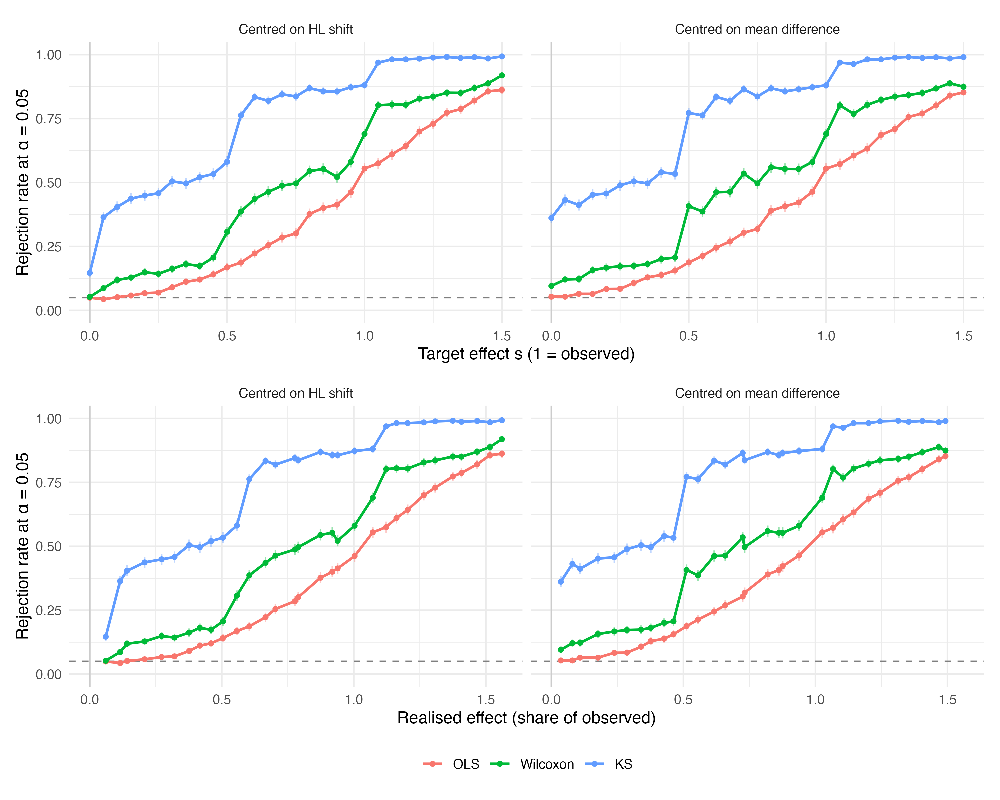
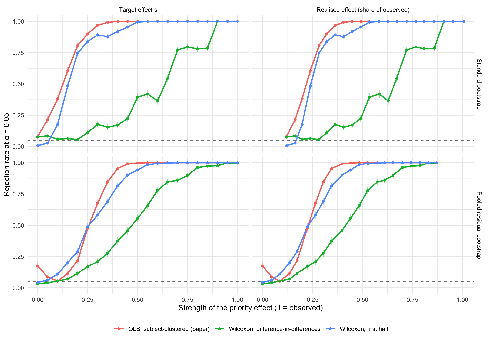
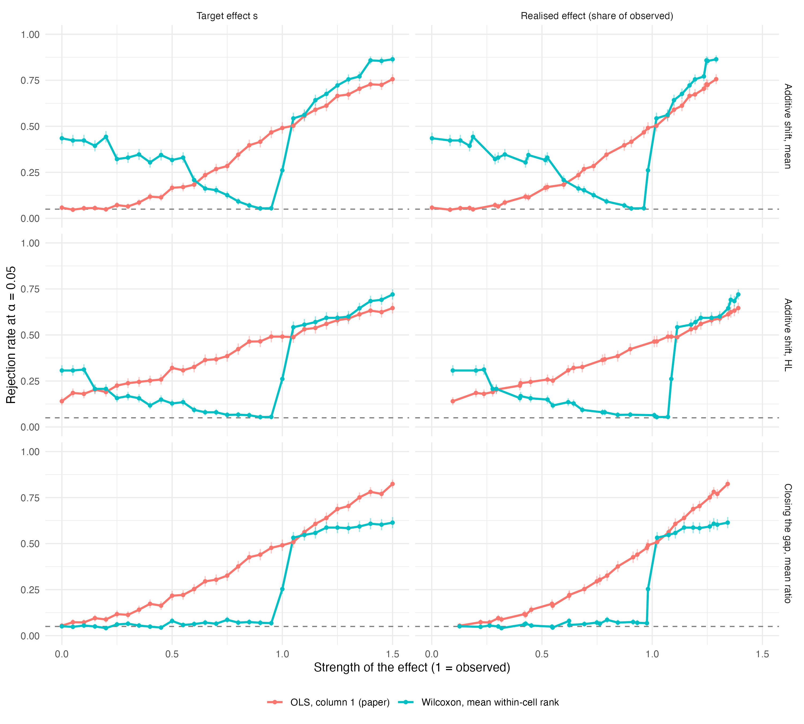
In Case 4 (Figure 21), the additive shift used in the other cases leads to larger distortions. With mean centring, the Wilcoxon test rejects in 44% of the replications at \(s = 0\), and with HL centring still in 31%. Two mechanisms contribute. First, centring on the mean equalises the means but not the ranks, because the groups differ in shape, so that, as in Case 1, a null for the mean is not a null for the Wilcoxon test. Second, shifting the answers breaks the ties at round amounts and at \(p = m\), which closing the gap preserves at the bound. The second mechanism is visible in the realised effect: under HL centring, the realised Hodges–Lehmann shift at \(s = 0\) is only about a tenth of the observed one, yet the Wilcoxon test still rejects in 31% of the replications.
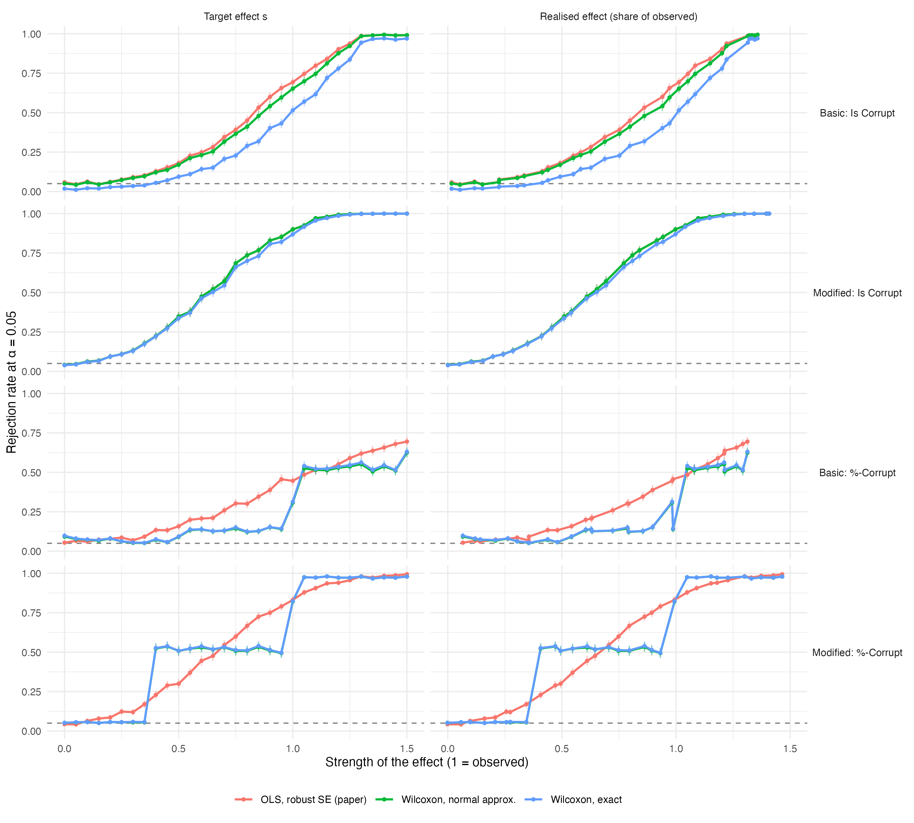
A.3 Case 2: Focal Points and Ties in the Simulation of RH1
Figures 23–25 show the offers of the four stake groups as they enter the power simulation of RH1 for three effect strengths (mean centring, before resampling). At \(s = 1\), the observed data, the offers of all groups lie on the same focal points (5%, 10%, 15%, 20%, 25%, 50%), so many offers are tied across groups. For \(s < 1\), every group is shifted by a different amount, \(-(1 - s)\,\hat\theta_g\), and the focal points of the groups separate. Offers that were tied across groups at \(s = 1\) are then ordered by group, which changes the ranks by much more than the size of the shift.
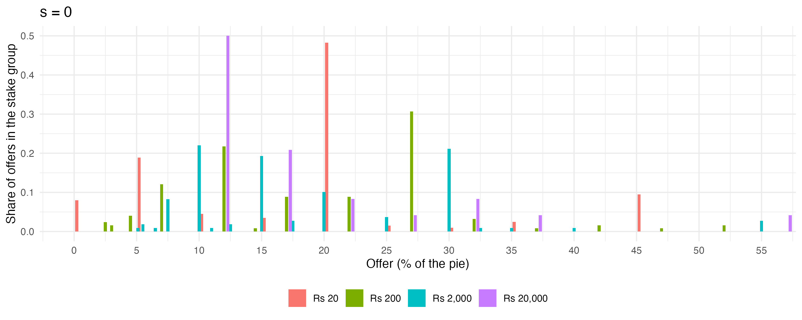
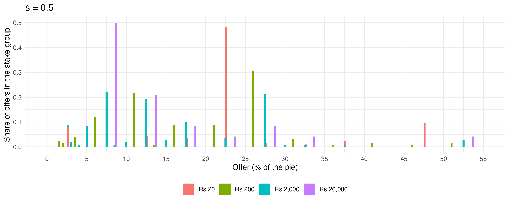
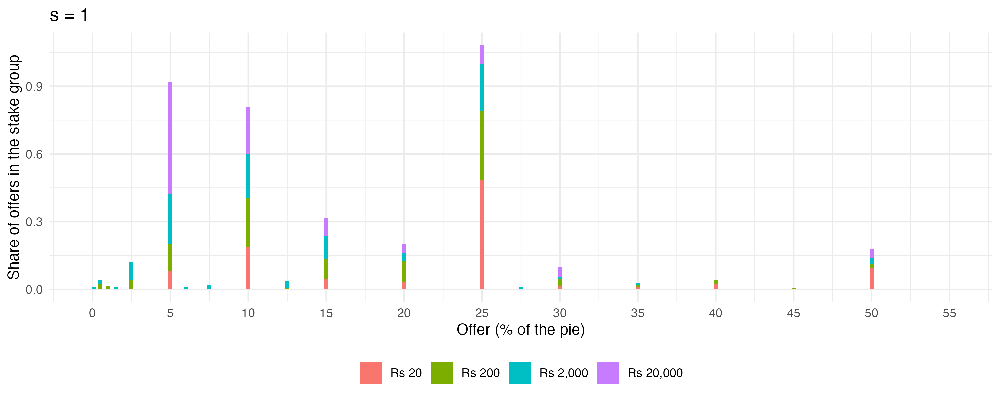
A.4 Case 3: Number of Groups
For the sample-size simulation of RH1, the number of groups of every sequence of conditions is scaled by a common factor \(\lambda\), \(n_q(\lambda) = \max\{1, \mathrm{round}(\lambda n_q)\}\), at the observed effect. Because the original numbers per sequence are small (3 to 8 groups), many values of \(\lambda\) lead to the same design after rounding. The simulation therefore uses every distinct design that arises for \(\lambda \leq 1\): 17 designs with 7 to 32 groups (Figure 26).
The resulting power curves are step functions rather than smooth curves, for two reasons. First, the number of groups can only change in whole groups, and with 3 to 8 groups per sequence each additional group is a large step. Second, and more importantly, the observed effect is so large that the rank tests reject as soon as rejection is possible at all. An exact rank test with few groups has a smallest attainable p-value, and as long as it lies above 0.05, the test cannot reject however large the effect is. The first-half comparison becomes able to reject with 2 priority groups (14 groups in total; smallest attainable p-value \(2/45 = 0.044\)), and its power jumps from 0 to 98% at exactly this design. The difference-in-differences design needs 3 always-control and 7 switching groups (26 groups in total; smallest attainable p-value \(2/120 = 0.017\)). With only 2 always-control groups, even 7 switching groups give a smallest attainable p-value of \(2/36 = 0.056\), and the power stays at 0.
The authors’ regression rejects at every number of groups, even in the smallest design with 7 groups. This is not a sign of high power but a consequence of the same underestimated standard errors that produce its size of 33% under the null hypothesis: clustering by subject turns even 7 groups into 84 clusters. A sample-size statement for the regression is therefore not meaningful, because it would measure power that partly rests on miscalibrated standard errors.
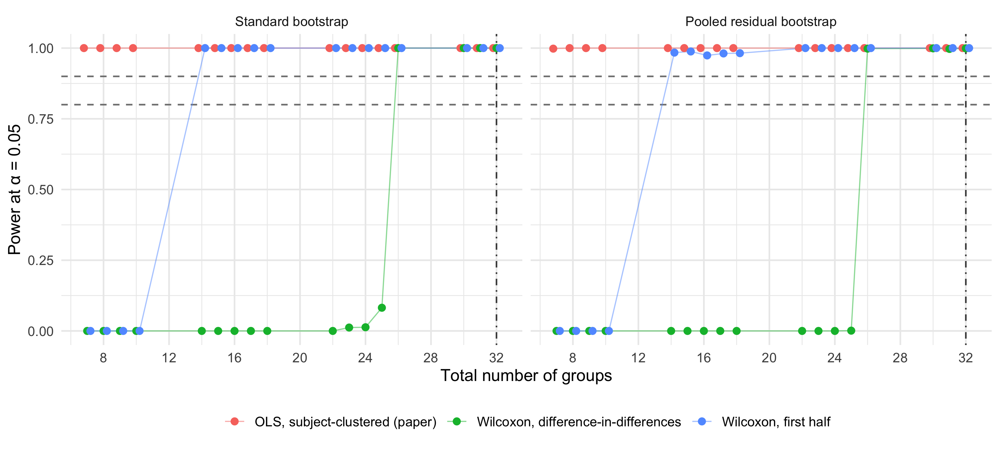
For RH2, the number of groups per treatment condition is varied from 2 to 12, with five times as many control groups, as in the original design (Table 21). Figure 27 shows the power for both bootstrap variants.
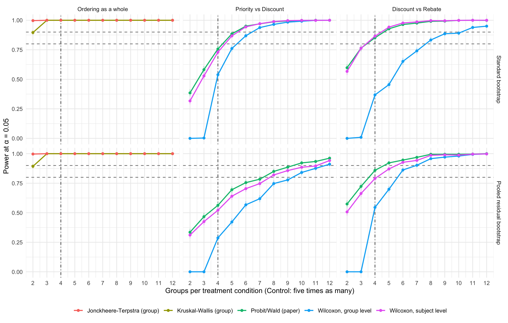
Table 3 of the paper lists the group sizes of the Modified Game the other way round; the group means reported there match the data with 31 Able=2 allocators.↩︎
The Wilcoxon test is exact only when both groups have the same distribution (Chung & Romano, 2013). The Brunner–Munzel test drops this assumption (Brunner & Munzel, 2000). It was applied in all cases and did not change any conclusion. Tokens Taken is the case in which it was most likely to matter, because the cap makes the variances differ by design, by a factor of 11.3 in the Basic Game and 4.7 in the Modified Game. Even here, it gives \(p \leq 0.0001\) in both games, as the Wilcoxon test does.↩︎